Part 0: Prologue, what we're building and how to think about it
What you build
By the end you have two things. The first is code: a working autograd engine (a Tensor class that records the operations done to it and replays them in reverse to compute gradients) and a GPT-2 built on top of it, with an AdamW optimizer and a training loop. It runs on a CPU, in NumPy, with no deep learning framework underneath. It trains. Loaded with the real GPT-2 124M weights, it reproduces the reference perplexity numbers exactly: WikiText-103 perplexity 26.57, LAMBADA accuracy 38.00% (tests/benchmark.md).
The second thing is the more valuable one: the mental model to build such systems yourself. Code you can copy. The reasoning that produces correct code is what transfers. A deep network looks like one enormous function, but it is a few dozen small functions stacked up, and you only ever work on one at a time. This course is built so that when you finish, you could derive the backward pass of an operation you have never seen, implement it, and know whether you got it right.
Who this is for
Someone with little or no calculus background. If you have never taken a derivative, that is the expected starting point, not a gap to apologize for. Part 1 begins with limits: what it means for a quantity to approach a value, why the slope of a curve is a limit, and how that single idea extends to functions of many variables. Every piece of mathematics the model needs is built from there. We do not assume; we derive.
What you do need is comfort with arrays (indexing, shapes, basic NumPy) and willingness to work through algebra with a pen. The derivations are not hard to follow, but they are not spectator material. Watching a derivation is not the same as doing one.
The central thesis: derive, then implement, then verify, then train
Four verbs, in that order. The order is the method.
Derive. Before writing code for an operation, work out its gradient by hand, on paper, in index notation. You produce an equation, not a guess. This is slow at first. It is also the only step that gives you certainty about what the code is supposed to compute.
Implement. Translate the derived equation into NumPy. Because you derived it, implementation is close to transcription. You know the shape of the answer before you write the line.
Verify. Check the implementation numerically before trusting it. A derived gradient can still be transcribed wrong. The numerical gradient check (Part 7, Verifying the math) perturbs each input slightly, measures how the loss changes, and compares that to the gradient the code returned. If they disagree, something is wrong, and you find out now.
Train. Only after the components are verified do you assemble them and run the optimizer. Training is where small errors that survived the earlier steps would otherwise hide for hours before surfacing as a loss curve that drifts.
Why this order, and not some other? Because each step has a numerical gate that must pass before the next begins. The derivation is gated by a tiny worked example you carry through by hand. The implementation is gated by the gradient check against finite differences (tests/gradcheck_results.md: 92/92 checks pass; a deliberately buggy version fails loudly with error about 2.49). The assembled layers are gated by parity against PyTorch (tests/layer_parity.md: 45/45 checks match; tests/model_parity.md: forward loss 7.420869 matching PyTorch exactly). Training is gated first by an overfitting test (tests/overfit_results.md: loss driven from 4.8435 to 0.0010 on 16 sequences) and then by step-for-step parity against the reference (tests/owt_parity.md: max loss difference 5.79e-3 over 100 steps).
The payoff of the gates is debugging that stays local. When something fails at step 8, you do not have to suspect steps 1 through 7, because steps 1 through 7 each passed a gate you trust. The bug is in step 8 or its inputs, and that is a small place to search. A project without gates is a project where every failure is a search over the entire codebase.
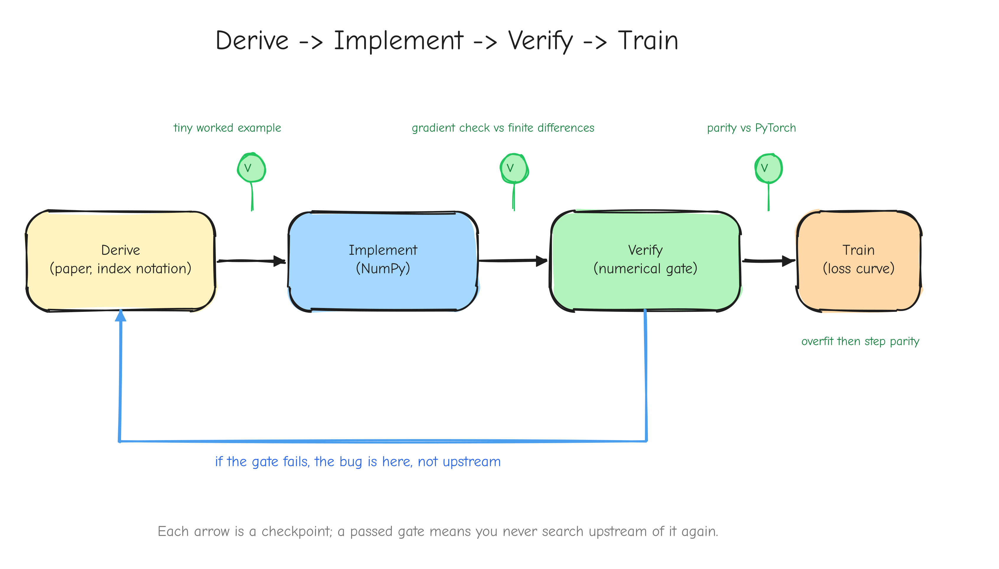
The reference baseline: nanoGPT
You cannot know your gradients are correct by inspection. A backward pass can be plausible, run without error, produce arrays of the right shape, and still be wrong. You need an external source of truth.
That source is nanoGPT, Andrej Karpathy's compact PyTorch implementation of GPT-2 (nanogpt/). It is a roughly 300-line model and a roughly 300-line training loop, readable end to end, and it can load the real OpenAI GPT-2 weights. We reimplement it in NumPy and check our outputs against it at every step: forward activations, gradients, optimizer updates, and finally the loss curve over a real training run. PyTorch already knows the right answer; we use it as an oracle. When our LayerNorm backward pass produces a gradient, we hand the same inputs to PyTorch's LayerNorm, ask for its gradient, and demand the two agree to a tight tolerance.
The training configuration we check against is deliberately tiny so it runs on a CPU in minutes: 4 layers, 4 heads, embedding dimension 128, sequence length 64, batch size 12, learning rate 1e-3, 100 steps (nanogpt/config/train_owt_baseline.py). Small enough to iterate on while debugging, complete enough to be a real GPT-2. When our NumPy training run and the PyTorch run agree step for step (step 0 loss 10.8217 on both), we have evidence the whole system is correct, not a hope.
What this course narrates
Most explanations of backpropagation present the finished derivative and move on. This one narrates the work: why a derivation starts where it does, which substitution to reach for and why, where an index notation step is doing real work versus bookkeeping, and what a failed gate actually looks like when you hit it. The dead ends that teach something are kept in. The skill being taught is not "here is the gradient of softmax", it is "here is how you would find the gradient of softmax, or of anything else, on your own". You will see this in the > **Thinking process:** callouts throughout. The formulas you can look up; the reasoning is the part that is hard to transfer and worth your attention.
Roadmap: the 16 parts
The course is 16 parts in four groups.
Foundations (Parts 1 to 2). Part 1, Mathematical foundations from zero, builds the mathematics: limits, derivatives, the chain rule, partial derivatives, gradients. Part 2, Backpropagation and computational graphs, reframes a neural network as a graph of operations and shows how the chain rule, applied mechanically backward through that graph, is backpropagation.
The derivations (Parts 3 to 6). Every operation GPT-2 needs, derived by hand, tiered by difficulty. Part 3 covers warm-ups and linear algebra (add, multiply, transpose, reshape, reductions, ReLU, matmul). Part 4 derives the loss layer (softmax fused with cross-entropy). Part 5 covers normalization, embeddings, and weight tying. Part 6 covers attention and the composition of a full transformer block. These parts use the pen.
Implement and verify (Parts 7 to 13). Part 7 builds the numerical gradient checker, the gate for everything that follows. Part 8 builds the autograd engine, the Tensor class. Part 9 builds the neural network layers and checks each against PyTorch. Part 10 assembles GPT-2. Part 11 builds the AdamW optimizer. Part 12 builds the training loop and runs it. Part 13 evaluates the trained model and runs the benchmarks.
Reflect (Parts 14 to 15). Part 14, Roadblocks and lessons, is the honest log of what went wrong and what each failure taught. Part 15 is the epilogue.
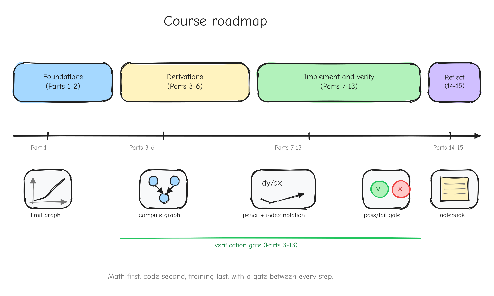
How to read it
The two movements ask different things of you.
The derivation parts (3 to 6) want paper and a pen. You will not absorb an index-notation derivation by reading it the way you read prose. Work the small examples alongside the text; the course gives you tiny cases (1-D or 2x2) specifically so you can carry them through by hand and confirm you followed. These parts are best read slowly, away from a screen.
The implementation parts (7 to 13) want the repository open in an editor. The code in those parts is copied faithfully from the real files (tensor.py, layers.py, gpt.py, optimizer.py, trainer.py, and the tests). Read it next to the actual source, run it, break it on purpose, and watch the gates catch you.
Parts 0, 1, 2, 14, and 15 want neither; read them straight through. One practical note on length: this is long-form, and it does not rush the hard parts. The math foundations and the deep derivations (LayerNorm, attention) are the longest stretches; the warm-up operations are deliberately short. Slowing down on the hard parts is the correct move, not a failure.
Part 1: Mathematical foundations from zero
Training GPT-2 means adjusting millions of numbers so the model's output gets closer to what we want. To know which direction to adjust each number, we need one idea: the derivative. Everything in this course rests on it. So we build it from the ground up, starting with the question the derivative answers.
You need basic algebra: you can read f(x) = x^2, plug in a number, and solve a simple equation. Nothing else. We go slow on the hard parts and fast on the rest.
Limits: approaching a value
Here is a concrete problem. You drop a ball, and after t seconds it has fallen f(t) = 5t^2 meters. How fast is it moving at exactly t = 2 seconds?
"Speed" is distance divided by time. But at a single instant, no time passes and no distance is covered, so the formula gives 0/0, which is meaningless. We need a different move.
Instead of the speed at t = 2, compute the average speed over a short interval starting at t = 2. From t = 2 to t = 2 + h:
Plug in f(t) = 5t^2. We have . Now shrink h and watch:
h |
f(2+h) |
average speed (f(2+h) - 20) / h |
|---|---|---|
1 |
25 |
|
0.1 |
20.5 |
|
0.01 |
20.05 |
|
0.001 |
20.020005 |
20.005 |
The numbers are closing in on 20. They never reach 20, because reaching it would need h = 0 and the 0/0 problem returns. But they get as close to 20 as we want by making h small enough. That value the numbers approach is the limit.
We write it like this:
Read as "h approaches zero". The whole expression reads: "the value the fraction approaches as h gets arbitrarily close to zero". The limit is 20, so the ball's instantaneous speed at t = 2 is 20 meters per second.
This is the entire reason limits exist for us: they turn "change at an instant", which looks like 0/0, into a real number. With that tool we can define instantaneous change. That is the derivative.
The derivative: the slope of a curve
Plot a function f(x) as a curve. Pick a point on it. The derivative at that point is the slope of the curve there: how steep it is, how fast f rises or falls as x moves.
For a straight line, slope is easy: pick two points, take rise / run. For a curve, the slope changes from place to place, so "the slope" needs care.
Start with two points on the curve: (x, f(x)) and a second point h to the right, (x+h, f(x+h)). The straight line through these two points is the secant line. Its slope is rise / run:
This is exactly the average-speed fraction from the last section, now read geometrically. As h shrinks, the second point slides toward the first along the curve, and the secant line pivots. In the limit, the two points merge and the secant becomes the tangent line: the straight line that just grazes the curve at that single point. Its slope is the derivative.
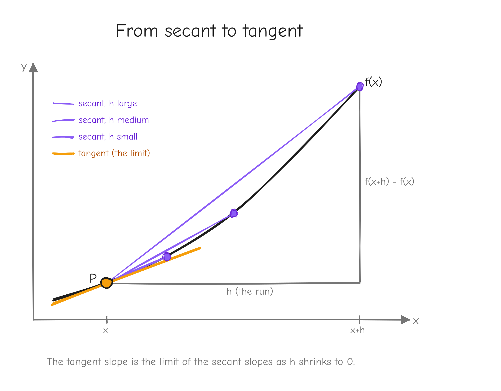
f(x) with a fixed point P marked. Show three secant lines through P and a second point, for h large, medium, small, each secant flatter against the curve than the last. Then the tangent line at P as the limit. Label the run h and the rise f(x+h) - f(x) on the largest secant. Takeaway: the tangent slope is the limit of secant slopes as .The formal definition:
f'(x), read "f prime of x", is the derivative of f. It is itself a function: feed it an x, get back the slope of f at that x. The other common notation is , read "d f d x", which you can think of as "a tiny change in f divided by the tiny change in x that caused it". The two notations mean the same thing.
Working f(x) = x^2 by hand
Let us derive f'(x) for f(x) = x^2 straight from the definition, with nothing skipped.
Start by writing the fraction:
Expand (x+h)^2. That is (x+h)(x+h) = x^2 + 2xh + h^2. Substitute:
The x^2 and -x^2 cancel:
Both terms in the numerator have a factor of h. Divide it out:
This is the key step. Before dividing, plugging in h = 0 gave 0/0. After dividing, the expression is 2x + h, and now h = 0 is harmless. Take the limit:
So the derivative of x^2 is 2x. Check it against the ball: f(t) = 5t^2 has derivative , and at t = 2 that is 20, exactly the limit we computed numerically.
Differentiation rules
Deriving every function from the definition is slow. A handful of rules cover everything we need. Each one can be proven from the definition; we state the rule, say why in one line, and work one example.
Constant rule. If f(x) = c for a constant c, then f'(x) = 0. A constant function is a flat horizontal line, and a flat line has slope zero. Example: f(x) = 7, f'(x) = 0.
Power rule. If f(x) = x^n, then f'(x) = n x^{n-1}. We saw the pattern for n = 2: x^2 gave 2x^1. The same cancellation works for any n. Example: f(x) = x^3, f'(x) = 3x^2. Example: f(x) = x = x^1, (a line of slope 1).
Sum rule. If f(x) = g(x) + h(x), then f'(x) = g'(x) + h'(x). The slope of a sum is the sum of the slopes; the limit of a sum splits into a sum of limits. Example: f(x) = x^2 + x^3, f'(x) = 2x + 3x^2. A constant multiple comes along for free: , so f(x) = 5x^2 has f'(x) = 10x.
Product rule. If , then f'(x) = g'(x) h(x) + g(x) h'(x). It is not g'(x) h'(x). Reason: when both factors change at once, f changes from each factor moving while the other holds, and you add the two contributions. Example: f(x) = x^2 (x^3) . Then g = x^2, h = x^3, so f'(x) = (2x)(x^3) + (x^2)(3x^2) = 2x^4 + 3x^4 = 5x^4. Check: , and the power rule gives 5x^4. They agree.
Quotient rule. If f(x) = g(x) / h(x), then
It follows from the product rule applied to . The minus sign and the squared denominator are the parts people forget. Example: . Here g = x^2, g' = 2x, h = x+1, h' = 1:
These five rules plus the chain rule (next) let us differentiate every function in GPT-2.
The chain rule
This is the most important section in this part. Backpropagation, the algorithm that trains every neural network, is the chain rule applied at scale. If you understand this section, the rest of the course is mechanics.
A composed function is a function inside a function. Write f(g(x)): take x, apply g to get g(x), then apply f to that. Example: f(u) = u^2 and g(x) = x + 1. Then f(g(x)) = (x+1)^2. The inner function runs first, the outer function runs on its result.
The chain rule says how to differentiate the whole thing:
means "f composed with g", the composed function. Read the right side as: the derivative of the outer function, evaluated at the inner value, times the derivative of the inner function.
Why rates multiply
Think of two connected gears, or a chain of cause and effect. Suppose g turns x into u, and f turns u into y.
g'(x)says: whenxmoves by a tiny amount,umovesg'(x)times as much.f'(u)says: whenumoves by a tiny amount,ymovesf'(u)times as much.
Now nudge x. It pushes u by g'(x) times the nudge. That movement in u pushes y by f'(u) times that. The two factors multiply: y moves by times the original nudge. That product is the derivative of the whole chain. Rates of change compose by multiplication.
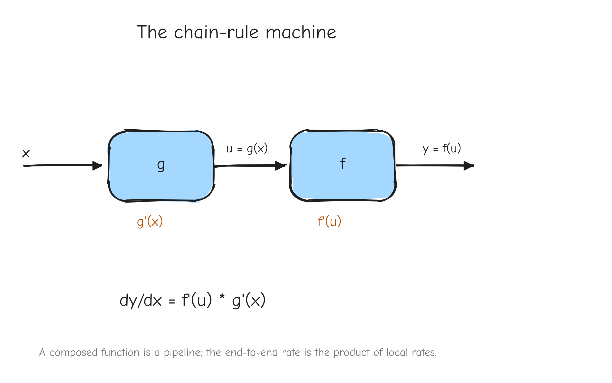
x enters box g, output u = g(x) enters box f, output y = f(u) exits. Under each box write its local rate: under g write g'(x), under f write f'(u). Below the whole pipeline write the total rate . Takeaway: a composed function is a pipeline, and the end-to-end rate is the product of the local rates along it.Worked examples
Example 1. f(g(x)) = (x+1)^2. Outer f(u) = u^2, so f'(u) = 2u. Inner g(x) = x+1, so g'(x) = 1. The chain rule:
Check by expanding first: (x+1)^2 = x^2 + 2x + 1, derivative 2x + 2 = 2(x+1). Agrees.
Example 2. f(g(x)) = (3x^2 + 1)^5. Outer f(u) = u^5, f'(u) = 5u^4. Inner g(x) = 3x^2 + 1, g'(x) = 6x. Then:
Expanding (3x^2+1)^5 by hand would be miserable. The chain rule makes it routine. That is the point.
Example 3: a 3-deep composition. Let y = h(g(f(x))) with three layers:
- innermost
f(x) = x^2, sof'(x) = 2x - middle
g(u) = u + 1, sog'(u) = 1 - outer
h(v) = v^3, soh'(v) = 3v^2
So y = (x^2 + 1)^3. The chain rule extends by multiplying one factor per layer, each evaluated at the value flowing into that layer:
Evaluate at a concrete x = 2. Compute the forward values first, inside out:
f(2) = 4g(4) = 5h(5) = 125, soy = 125
Now the three derivative factors, each at its own input:
g'(f(x)) = g'(4) = 1
Multiply: at x = 2.
A neural network is a deeply nested composition: each layer is a function, and the network applies dozens of them in sequence, with the loss L as the final outer function. Training means computing the derivative of L with respect to every internal number, and that is the chain rule applied thousands of times, one factor per operation. There is no other trick. The whole machine is this section, scaled up and organized.
Functions of many variables and partial derivatives
So far f took one input. The functions in GPT-2 take many: a layer's output depends on its input and all its weights. We need derivatives for that case.
A function of two variables, f(x, y), takes a pair and returns a number. Picture it as a landscape: x and y are east and north on a map, and f(x, y) is the height of the ground there.
Standing on that landscape, "the slope" is ambiguous: it depends which way you face. So we ask a sharper question: what is the slope if I walk due east, in the x direction only, holding y fixed? That is the partial derivative of f with respect to x, written . The symbol (a rounded d) signals "partial: other variables held fixed".
Computing it is no new skill. Treat every variable except x as a constant, and differentiate normally.
Worked example. Let f(x, y) = x^2 y + 3y.
For , treat y as a constant. The term x^2 y is "a constant times x^2", with derivative . The term 3y has no x in it, so it is a constant and its derivative is 0:
For , treat x as a constant. The term x^2 y is "a constant times y", derivative x^2. The term 3y has derivative 3:
One function, two partial derivatives, one per input direction. A function of n variables has n partial derivatives.
The gradient
Collect all the partial derivatives of f into a single vector. That vector is the gradient, written (the symbol is "nabla").
For f(x, y) = x^2 y + 3y from above:
At the point (x, y) = (1, 2), the gradient is .
The gradient is not just a bag of numbers. It has a geometric meaning: the gradient points in the direction of steepest ascent. On the landscape picture, stand at a point, compute the gradient, and it points straight uphill, the steepest possible way up. Its length tells you how steep that climb is.
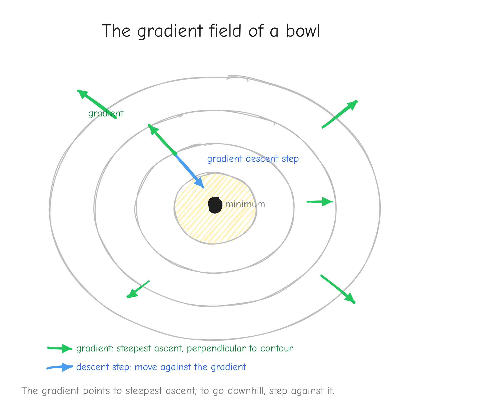
f(x, y), contour lines like a topographic map. At several points draw the gradient as an arrow. Every arrow points "uphill", perpendicular to the contour line through that point, longer where contours are tight (steep) and shorter where they are loose (flat). Add one arrow pointing the opposite way, labeled "gradient descent step". Takeaway: the gradient points to steepest ascent; to go downhill, step against it.This is the bridge to training. We will have a loss L, a single number that measures how wrong the model is, depending on millions of parameters. We want L small. The gradient of L points in the direction that increases L the fastest, so the opposite direction decreases it the fastest. Gradient descent is the rule: compute the gradient, take a small step in the negative gradient direction, repeat. Each step nudges every parameter a little, and L drops. That loop, run thousands of times, is training. Everything else in this course exists to compute that gradient correctly and quickly.
Vectors, matrices, tensors
We just used vectors informally. Pin down the objects we compute with, because GPT-2 is built from them.
A vector is an ordered list of numbers: [2, 0, -1] is a vector of length 3. Geometrically it is a point in space, or an arrow from the origin to that point.
A matrix is a rectangular grid of numbers, arranged in rows and columns. This one has 2 rows and 3 columns:
We say its shape is (2, 3). The entry in row i, column j is written with two indices, like A_{ij}.
A tensor is the general term for an n-dimensional array of numbers. A single number is a 0-D tensor (a scalar). A vector is a 1-D tensor. A matrix is a 2-D tensor. A 3-D tensor is a stack of matrices, and you keep going. In NumPy every one of these is an ndarray, and its .shape is a tuple of sizes, one per dimension: a scalar has shape (), a length-3 vector has shape (3,), the matrix above has shape (2, 3).
Shapes matter constantly in this course. GPT-2 processes a batch of B sequences, each T tokens long, each token represented by a D-dimensional vector. That activation is a 3-D tensor of shape (B, T, D). Most bugs in a from-scratch implementation are shape bugs, so we track shapes on every line. The notation table in the style guide fixes what B, T, D, and the rest mean for the whole course.
The Jacobian
A function can take a vector in and return a vector out. Say f takes a 3-vector and returns a 2-vector. Then f is really 2 output functions, each depending on all 3 inputs. Each output has a partial derivative with respect to each input, so there are partial derivatives. Arrange them in a grid: that grid is the Jacobian matrix.
The convention: the Jacobian J of f has one row per output and one column per input. Entry J_{ij} is the partial derivative of output i with respect to input j:
Concrete example. Let f take (x_1, x_2) and return two outputs:
Compute all four partials:
Arrange them, output index picks the row, input index picks the column:
At the point (x_1, x_2) = (1, 2) this is the concrete matrix .
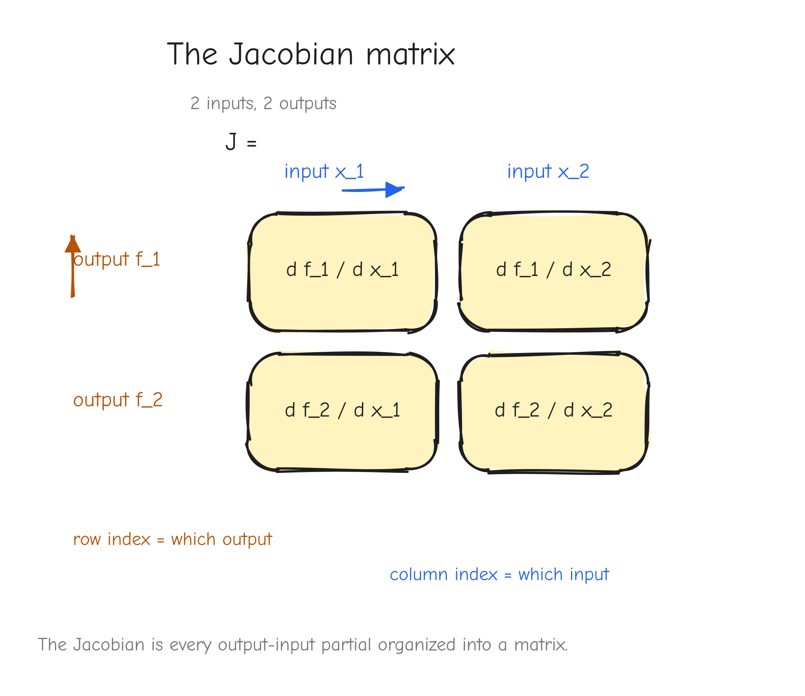
f_1" and "output f_2", the two columns "input x_1" and "input x_2". Fill each cell with its partial . Draw an arrow showing "row index = which output, column index = which input". Takeaway: the Jacobian is just every output-input partial, organized into a matrix.The Jacobian is the chain rule for vector functions: if you compose vector-to-vector functions, you multiply their Jacobian matrices, the same way you multiplied scalar derivatives in the chain rule section. That is the general rule. But for our purposes, building it explicitly is a trap, and the next section says why.
The vector-Jacobian product (VJP)
Here is the problem with Jacobians at the scale of GPT-2.
A single layer might map an activation of shape (B, T, D) to another of shape (B, T, D). With numbers on each side, the full Jacobian has entries. For modest sizes that is billions of numbers for one layer. We cannot store it, and we do not need to.
The escape comes from a fact about our setup: the very last function in the network is the loss L, and L is a single scalar. We never want the Jacobian of an intermediate layer by itself. We always want the derivative of the final scalar L with respect to some intermediate tensor.
Follow the chain rule. Let an operation take input X and produce output Y, and let L depend on Y somehow. The chain rule for the derivative of L with respect to X is:
The second factor, , is the operation's Jacobian, the huge object. But look at the first factor: is the derivative of a scalar with respect to Y, so it is just a tensor the same shape as Y, not a giant matrix. And the product we want, , is the derivative of a scalar with respect to X, so it is a tensor the same shape as X.
So the operation never needs to hand us its full Jacobian. It only needs to answer one question: "given a vector the shape of my output, produce the corresponding vector the shape of my input." That operation, vector in times Jacobian, scalar-gradient-out, is the vector-Jacobian product, the VJP. It computes from directly, without ever forming as a stored matrix.
This is the shape of backpropagation. We fix the convention now and use it for the rest of the course (it matches the style guide notation table):
Lis the scalar loss.- For any tensor
Xin the computation,dXmeans , the gradient of the loss with respect toX.dXalways has exactly the same shape asX. - An operation receives
dY, the gradient with respect to its output, called the upstream gradient. It returnsdX(anddW,db, and so on for any other inputs), the gradients with respect to its inputs. - The operation's job in the backward pass is exactly the VJP: turn
dYintodX, using the math of that specific operation, never building the Jacobian.
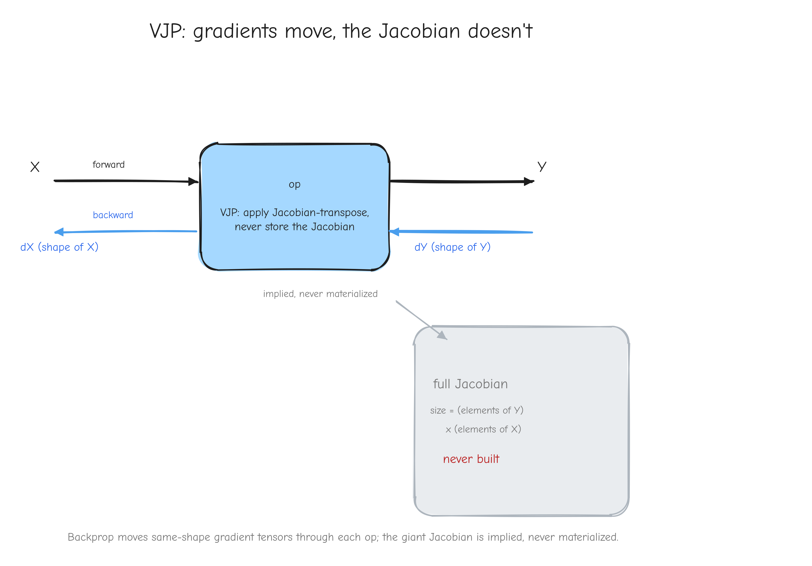
X on the left and output Y on the right (forward pass, arrow pointing right). Below it, the backward pass, arrow pointing left: dY (same shape as Y) enters from the right, dX (same shape as X) exits to the left. Inside the box write "VJP: apply Jacobian-transpose, never store the Jacobian". Off to the side, draw the full Jacobian as a huge greyed-out square labeled "size = (elements of Y) x (elements of X), never built". Takeaway: backprop moves same-shape gradient tensors through each op; the giant Jacobian is implied, never materialized.Every operation we derive in Parts 3 through 6 follows this template: given the forward equation and given dY, derive the rule that produces dX with the right shape. Part 2 turns that template into the autograd algorithm, and Part 8 turns it into running NumPy code.
Your turn
Part 2: Backpropagation and computational graphs
Part 1 gave you the chain rule for a chain of scalars: if L depends on y and y depends on x, then dL/dx = (dL/dy)(dy/dx). A neural network is not a chain. It is a branching structure: values split, get reused, and merge back together. This part is the bridge. It takes the scalar chain rule and turns it into a procedure that works on the real shape of a model, so that Parts 3 to 6 can derive one operation at a time and trust that the pieces compose.
By the end you will be able to draw any expression as a graph, walk that graph backward to get every gradient in one pass, and state the one shape rule that prevents most of the bugs you would otherwise hit.
The computational graph
Take a single concrete expression. It is the smallest thing that already has every feature we need:
This is the squared error of a one-number linear model: input x, weight w, bias b, target y, prediction x*w + b, and L the loss. Five inputs, one scalar output.
You cannot differentiate this in one move, and you should not try. Instead, break it into the individual operations the way a machine would evaluate it. Each operation produces a named intermediate value:
u = x * w # multiply
v = u + b # add
r = v - y # subtract
L = r * r # square (r times itself)
Now draw it. Every value (input or intermediate) is a node. Every operation is an edge, or rather a small fan of edges: it has incoming edges from the values it reads and one outgoing path to the value it produces. Inputs x, w, b, y are nodes with nothing feeding them. L is the node with nothing downstream of it.
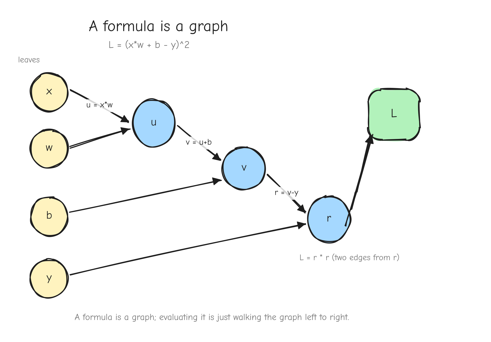
L = (x*w + b - y)^2. Leaf nodes x, w, b, y on the left. Then u = x*w (fed by x and w), v = u+b (fed by u and b), r = v-y (fed by v and y), and L = r*r (fed by r, with two arrows from r into the square node to make the reuse visible). Arrows point left to right, in the direction of the forward computation. Label each edge with the operation. The takeaway: a formula is a graph, and evaluating the formula is walking the graph forward.This structure is a directed acyclic graph, a DAG. Directed: edges have a direction, from the values an operation reads to the value it writes. Acyclic: nothing feeds back into itself, because each value is computed once from values that already exist. Evaluating the expression means walking the graph from the leaves forward to L. That walk is the forward pass.
Nothing about this is specific to a one-number model. GPT-2 is the same picture with bigger nodes. The leaves are token ids and parameter tensors, the intermediate nodes are activations of shape (B, T, D) and friends, the operations are matmuls and softmaxes and LayerNorms instead of * and +, and the single scalar at the end is still the loss. The graph is larger and the nodes hold arrays instead of numbers, but it is the same DAG, walked forward the same way.
Forward mode vs reverse mode
We want the gradient of L with respect to every input: dx, dw, db, dy. The chain rule tells us each of these is a product of local derivatives along the paths from that input to L. The question is the order in which we multiply those derivatives. There are two, and the choice is not cosmetic.
Forward mode picks one input and pushes its influence forward. Fix w. Walk the graph from w toward L, and at each node compute the derivative of that node with respect to w:
- at
u = x*w:du/dw = x - at
v = u + b:dv/dw = du/dw = x - at
r = v - y:dr/dw = dv/dw = x - at
L = r*r:dL/dw = 2r * dr/dw = 2r*x
One walk gave you dw. But only dw. To get dx you walk again, fixing x. To get db, walk again. Forward mode does one pass per input.
Reverse mode picks the output and pulls its sensitivity backward. Start at L with dL/dL = 1. Walk the graph from L back toward the leaves, and at each node compute how sensitive L is to that node:
- at
r:dL/dr = 2r - at
v:dL/dv = dL/dr * dr/dv = 2r * 1 = 2r - at
u:dL/du = dL/dv * dv/du = 2r * 1 = 2r - at
b:dL/db = dL/dv * dv/db = 2r * 1 = 2r - at
x:dL/dx = dL/du * du/dx = 2r * w - at
w:dL/dw = dL/du * du/dw = 2r * x - at
y:dL/dy = dL/dr * dr/dy = 2r * (-1) = -2r
One walk gave you all five gradients.
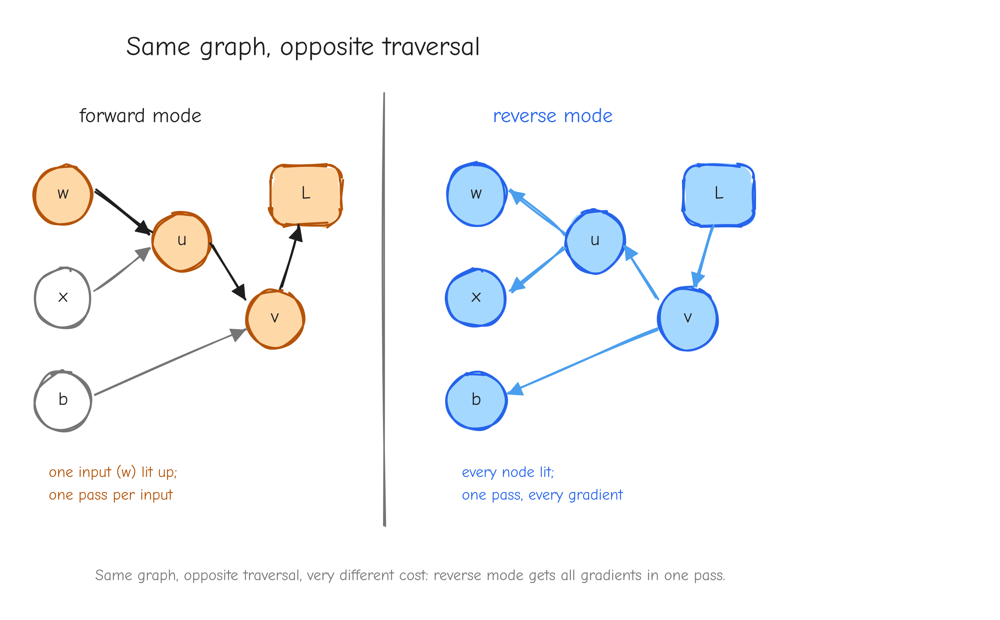
w) lit up and its derivative propagating toward L; a caption noting "one pass per input." Right copy, "reverse mode": arrows reversed, all pointing from L back to the leaves, every node lit up at once; caption "one pass, every gradient." The takeaway: same graph, opposite traversal, very different cost.Here is the rule. The cost of forward mode scales with the number of inputs. The cost of reverse mode scales with the number of outputs. Our setting has many inputs and exactly one output: GPT-2 124M has 124 million parameters, every one an input we need a gradient for, and one scalar loss. Forward mode would mean 124 million passes. Reverse mode means one.
Reverse mode applied to a computational graph is called backpropagation. That is the entire reason it is the algorithm of deep learning: the shape of the problem, many parameters and one scalar loss, is exactly the shape reverse mode is good at.
Backpropagation is the chain rule over the graph
Reverse mode is not a new idea. It is the scalar chain rule from Part 1, applied node by node, with the graph keeping the bookkeeping. Walk the example again, slowly, and name the parts.
Each node, during the backward pass, receives one thing from downstream: the derivative of L with respect to that node's output. Call it the upstream gradient. The node already knows one thing about itself from the forward pass: the derivative of its output with respect to each of its inputs. Call that the local gradient. The node's job is to multiply them and hand the result to each parent. That product is the chain rule, and it is the whole of backpropagation.
Start at the end. L = r*r. The upstream gradient into L is dL/dL = 1, the seed. L's local gradient with respect to r is d(r*r)/dr = 2r. Multiply: r receives 1 * 2r = 2r. Write dr = 2r.
Move to r = v - y. Its upstream gradient is the dr = 2r we just computed. Its local gradients: dr/dv = 1 and dr/dy = -1. Multiply upstream by each local gradient:
vreceives2r * 1 = 2r, sodv = 2ryreceives2r * (-1) = -2r, sody = -2r
Move to v = u + b. Upstream is dv = 2r. Local gradients: dv/du = 1, dv/db = 1. So du = 2r * 1 = 2r and db = 2r * 1 = 2r. Addition copies its upstream gradient unchanged to both parents. That is a pattern you will see constantly.
Move to u = x * w. Upstream is du = 2r. Local gradients: du/dx = w, du/dw = x. So dx = 2r * w and dw = 2r * x. Multiplication routes the upstream gradient to each parent scaled by the other input.
The leaves x, w, b, y have no parents, so the walk stops. Every gradient is computed, and each one came from the same two-step move: take the upstream gradient, multiply by a local gradient, pass it up.
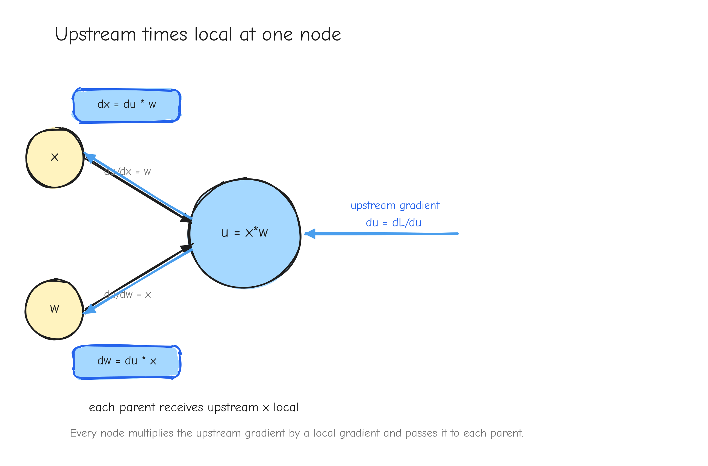
u = x*w. An arrow coming in from the right labeled "upstream gradient du = dL/du". The node itself labeled with its two local gradients, du/dx = w on the edge to x and du/dw = x on the edge to w. Two arrows leaving to the left, labeled dx = du * w and dw = du * x. The takeaway: every node does the same thing, upstream times local, and passes the product to each parent.Notice what each node needs to know, and what it does not. A node needs its upstream gradient and its own local gradient. It does not need to know anything about the rest of the network. The graph delivers the upstream gradient; the forward pass left behind whatever the node needs to compute its local gradient. This is why Parts 3 to 6 can derive one operation in isolation and trust it: each operation only ever has to answer one local question.
The gradient convention
Part 1 worked with scalars, so "shape" never came up. Real models work with tensors, and shape is where bugs live. We fix this with one convention, the same one stated in derivation.md item 1, and we never break it.
L is the scalar loss. For any tensor X in the graph (a parameter, an input, or an intermediate activation), define
and require that dX has exactly the same shape as X. Entry dX[i,j,...] is the partial derivative of L with respect to entry X[i,j,...]. A (B, T, D) activation has a (B, T, D) gradient. A (D, V) weight matrix has a (D, V) gradient. No exceptions.
This turns every operation's backward function into a contract with fixed shapes on both ends. A forward op Y = f(X, W) has a backward function that:
- receives the upstream gradient
dY, which has the shape of the op's outputY, - returns
dXwith the shape ofX, anddWwith the shape ofW.
That is the whole interface. The backward function never needs to see the rest of the network; the upstream gradient dY summarizes all of it.
There is one subtlety the convention forces into the open: broadcasting. When a forward op broadcasts an input (a bias of shape (D,) added to an activation of shape (B, T, D), for instance), the output is bigger than that input. The upstream gradient dY then has the output's larger shape, but db must have shape (D,). The convention tells you something must happen on the way back: the gradient has to be summed down over the axes that were broadcast. We will not derive that here. Part 3 does it. But the convention is what makes the requirement visible instead of a surprise.
The per-operation contract
Every operation in Parts 3 to 6 is derived in the same fixed format. You have already seen the shape of it in derivation.md. Here is what each line is for, because the format is doing real work and skipping a line is how derivations go wrong.
- Forward. The equation for
Y = f(...), with the shape of every tensor annotated. You cannot derive a backward pass correctly if you are unsure what the forward pass produced or what shape it is. - Given. The upstream gradient that is available, which is
dY, and its shape. This names the one input to the backward function. - Derive. The actual work: apply the chain rule, usually in index notation, and narrate why each step is taken. For warm-up operations this is a sentence or two. For the deep operations (softmax, LayerNorm, attention) it is the long, careful core of the part.
- Vectorized form. The result rewritten as a NumPy-ready expression on whole arrays, no explicit loops. This is the line that becomes code. It is copied faithfully from
tests/ops.py, not paraphrased. - Shape check. Confirm every returned gradient matches the shape of its input, per the convention above. The fast first test.
- Sanity case. A tiny worked numeric example, 1-D or 2x2, carried all the way through forward and backward by hand.
The Sanity case deserves a word, because it is the line that separates math notes from evidence. A derivation you only read is a claim. A derivation where you plugged in x = 2, w = 3, b = 1, y = 5, computed L forward, computed every gradient backward, and then perturbed one input by a small amount and watched L change by the predicted amount, that is a derivation you have tested. It can still be wrong, but it is no longer just a claim. This is the same discipline as the numerical gradient check in Part 7, done by hand, small enough to do in the margin. Do not skip it. The worked examples in derivation.md are exactly these sanity cases.
Gradient accumulation, previewed
There is one feature of real graphs the small example only barely showed, and it is worth flagging now because it is a classic place to lose a factor.
Look again at L = r * r. The value r is used twice: it feeds the square node as both the left and the right input. In the graph, r has fan-out of two. When the backward pass reaches r, it does not get one upstream gradient. It gets one from each place r was used: r * 1 from being the left input, and r * 1 from being the right input. The gradient of r is the sum of those contributions: dr = r + r = 2r. That is where the 2r comes from. Not from a power rule you memorized, but from r fanning out to two consumers and its gradient accumulating across them.
The rule is general and it comes straight from the chain rule in Part 1: if a value feeds more than one place in the graph, its gradient is the sum of the contributions from every consumer. A value used in k places receives k gradients, and they add.
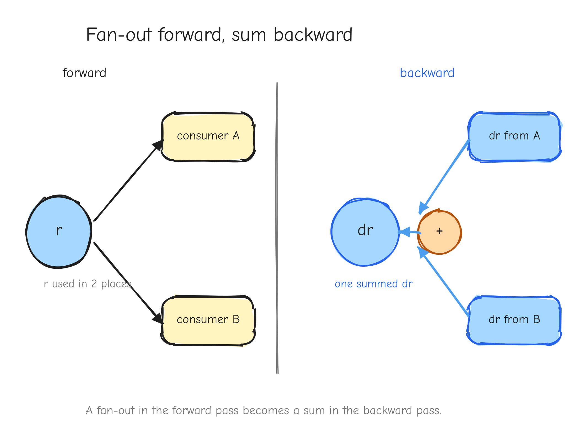
r with two arrows leaving it forward, into two different downstream consumers (left input and right input of the square). On the backward pass, two arrows coming back into r, one from each consumer, meeting at a + symbol that produces the single dr. The takeaway: fan-out forward becomes a sum backward.This is not an edge case in a real model. It is everywhere. A residual connection adds a value to the output of a block, which means that value feeds both the block and the addition: fan-out two, gradients accumulate. Weight tying uses the same embedding matrix at the input and at the output: fan-out two, gradients accumulate. Both are derived in later parts.
Your turn
Part 3: Derivations Tier 1 to 2, warm-ups and linear algebra
Part 2 gave you the per-op contract: every operation owns a backward function that takes the upstream gradient dY and returns a gradient for each of its inputs, every returned gradient the same shape as the input it belongs to. This part is where you apply that contract for real, on the smallest operations in the model.
These are the building blocks. Element-wise addition, scaling, the activation functions, matrix multiply, the reductions, transpose and reshape. None of them is hard on its own. The point of doing them carefully now is twofold: you build the index-notation muscle on operations simple enough that you can check every step by hand, and you produce the exact NumPy backward expressions that Part 8 will wire into the autograd engine. Every op in this part passes numerical gradient checking in Part 7.
Each operation uses the fixed derivation box: Forward, Given, Derive, Vectorized form, Shape check, Sanity case. The warm-ups get a compact Derive. Two operations get the full narrated index-notation treatment: GeLU and matrix multiply. Those two are the ones you should be able to redo from memory.
Tier 1: warm-ups
Element-wise addition
Forward. Y = A + B. In the plain case A, B, Y are all the same shape, say (M, N), and Y_{ij} = A_{ij} + B_{ij}. NumPy also allows broadcasting: a smaller input is stretched to match. The case that matters for the model is the bias add, Y = X + b, where X is (M, N) and b is (N,) added to every row.
Given. Upstream gradient dY, the shape of Y.
Derive. Equal shapes first. Y_{ij} depends on A_{ab} only when (i,j) = (a,b), and then with coefficient 1, so and the VJP collapses to . Addition copies the gradient through: dA = dY, and by symmetry dB = dY.
Now the broadcast case. With b a row vector broadcast over the M rows, Y_{ij} = A_{ij} + b_j, so b_j influences every row and , independent of i. The VJP sums over the row index that b was stretched along:
The gradient for a broadcast input is dY summed over the axes that were expanded. dA = dY still, because A was not broadcast.
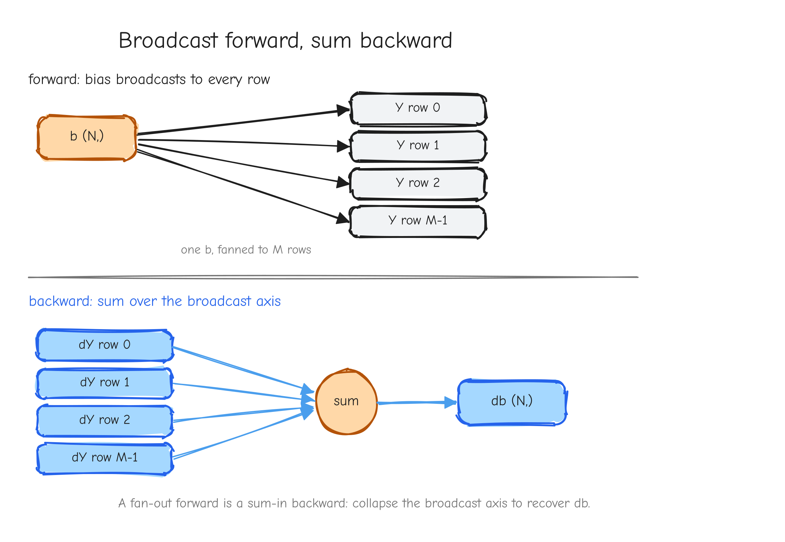
N bias vector b drawn once, with arrows fanning out to each of the M rows of Y, every row getting the same b. Bottom row, backward: the M rows of dY drawn, with arrows converging back into a single length-N db, labeled "sum over the broadcast axis." The takeaway: a fan-out forward is a sum-in backward.Vectorized form. From tests/ops.py, the general broadcasting add reduces each gradient back to its input shape with a helper:
def _unbroadcast(grad, shape):
grad = np.asarray(grad, dtype=np.float64)
while grad.ndim > len(shape):
grad = grad.sum(axis=0)
for axis, dim in enumerate(shape):
if dim == 1 and grad.shape[axis] != 1:
grad = grad.sum(axis=axis, keepdims=True)
return grad
def add(a, b):
Y = a + b
def bwd(dY):
return {'a': _unbroadcast(dY, np.shape(a)).copy(),
'b': _unbroadcast(dY, np.shape(b)).copy()}
return Y, bwd
For equal shapes _unbroadcast is a no-op and this is just dA = dY, dB = dY. The dedicated bias-add op writes the broadcast sum out directly:
def add_bias(x, b):
Y = x + b
def bwd(dY):
axes = tuple(range(dY.ndim - 1))
return {'x': dY.copy(), 'b': dY.sum(axis=axes)}
return Y, bwd
axes = tuple(range(dY.ndim - 1)) is every axis except the last, so dY.sum(axis=axes) collapses (B, T, N) or (M, N) down to (N,), matching b.
Shape check. dx is dY.copy(), same shape as x. db is dY summed over all but the last axis, shape (N,), same shape as b.
Sanity case. Let A = [[1, 2], [3, 4]] and b = [10, 20]. Forward broadcasts b over both rows: Y = [[11, 22], [13, 24]]. Take dY = [[0.5, 1.0], [2.0, 3.0]]. Then dA = dY, and db = dY.sum(axis=0) = [0.5+2.0, 1.0+3.0] = [2.5, 4.0]. Check by perturbation: bumping b_0 by epsilon raises both Y_{00} and Y_{10} by epsilon, changing L by (dY_{00} + dY_{10}) * epsilon = 2.5 * epsilon, so db_0 = 2.5.
Scalar multiply
Forward. Y = c * X, with c a fixed constant (not a parameter, it carries no gradient). Y_{ij} = c * X_{ij}.
Given. Upstream gradient dY, shape of X.
Derive. , so the VJP gives dX_{ab} = c * dY_{ab}. Scaling the forward by c scales the backward by the same c:
This is the attention scaling step: the scores get multiplied by c = 1/sqrt(d), so that step's backward is dX = dY / sqrt(d).
Vectorized form. From tests/ops.py:
def scale(x, c):
Y = c * x
def bwd(dY):
return {'x': c * dY}
return Y, bwd
Shape check. c * dY has the shape of dY, which is the shape of X.
Sanity case. Let c = 0.5 and X = [[2, -4], [6, 8]], so Y = [[1, -2], [3, 4]]. With dY all ones, dX = 0.5 * dY is all 0.5. Bumping X_{00} by epsilon changes Y_{00} by 0.5 * epsilon, hence L by 0.5 * epsilon, so dX_{00} = 0.5.
Element-wise nonlinearity (generic)
Forward. Y = f(X) applied entrywise: Y_{ij} = f(X_{ij}), for some scalar function f.
Given. Upstream gradient dY, shape of X.
Derive. Because f runs independently on each entry, Y_{ij} depends only on X_{ij}: . The VJP collapses to
Evaluate the scalar derivative f' at every entry of X, multiply element-wise by dY. Every activation in the model is a special case of this. The only work left for a specific activation is writing down f'.
ReLU
Forward. f(x) = max(0, x).
Given. Upstream gradient dY, shape of X.
Derive. The derivative of max(0, x) is 1 where x > 0 and 0 where x < 0. The kink at x = 0 is not differentiable; by convention assign it 0. So f'(x) = 1[x > 0] and, from the generic rule, dX = 1[X > 0] ⊙ dY. ReLU gates the gradient: it passes through untouched where the input was positive, and is killed where the input was not.
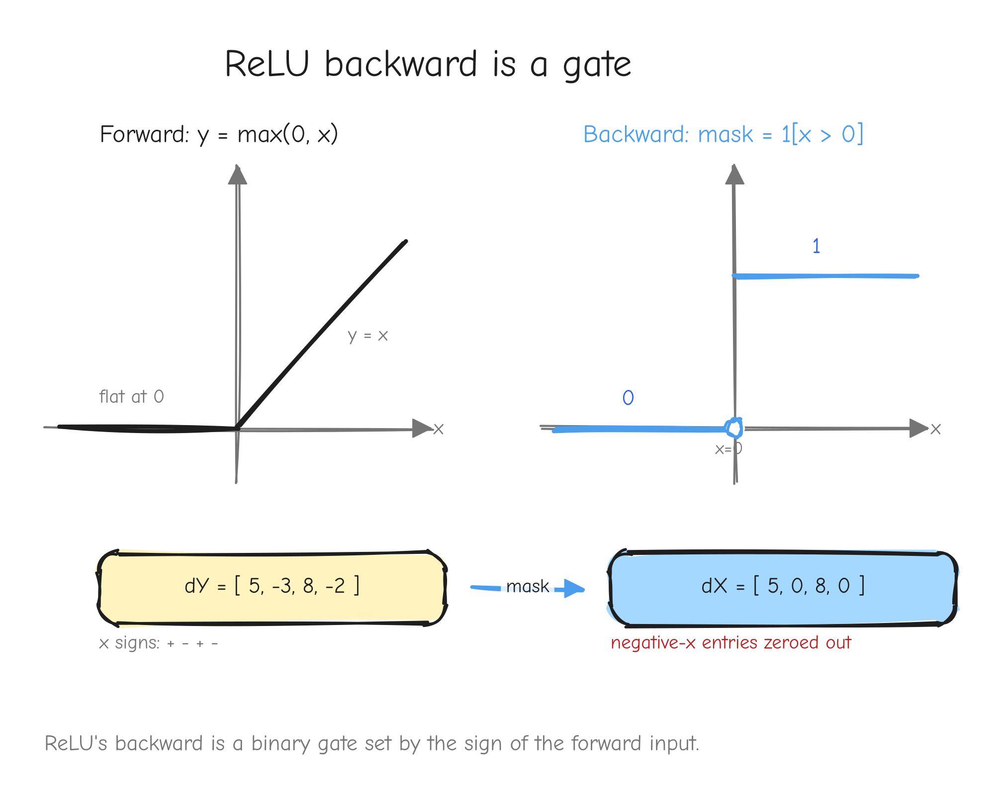
x < 0 and y = x for x > 0. Right: the gradient mask, a step function that is 0 for x < 0 and 1 for x > 0, with a hollow dot at x = 0. An arrow from a sample dY vector passing through the mask, entries at negative-x positions zeroed out. The takeaway: ReLU's backward is a binary gate set by the sign of the forward input.Vectorized form. From tests/ops.py:
def relu(x):
Y = np.maximum(0.0, x)
mask = (x > 0.0)
def bwd(dY):
return {'x': mask * dY}
return Y, bwd
The mask is computed in the forward and captured by the closure, so the backward is a single multiply.
Shape check. mask has the shape of x, so mask * dY has the shape of x.
Sanity case. X = [[-1, 2], [0, 3]] gives Y = [[0, 2], [0, 3]] and mask = [[0, 1], [0, 1]]. With dY = [[5, 6], [7, 8]], dX = [[0, 6], [0, 8]]. Check: bumping X_{01} = 2 by a small positive epsilon raises Y_{01} by epsilon, so L by 6 * epsilon, giving dX_{01} = 6. Bumping X_{00} = -1 leaves Y_{00} = 0 unchanged, so dX_{00} = 0.
GeLU (exact erf form)
This is the first deep derivation. ReLU's derivative was a step function you could read off by inspection. GeLU's derivative needs the product rule and the chain rule, and it is worth doing slowly because the model uses GeLU in every MLP block.
Forward. GeLU is the input x scaled by the standard normal CDF Phi:
Phi(x) is the standard normal CDF: the probability that a draw from a mean-0 variance-1 Gaussian lands at or below x. It runs smoothly from 0 at x = -infinity to 1 at x = +infinity, passing through 0.5 at x = 0. So GeLU multiplies each input by a smooth, input-dependent number between 0 and 1. For very negative x that number is near 0 and the input is suppressed; for very positive x it is near 1 and the input passes almost unchanged. erf is the error function, the integral form that Phi is built from.
Given. Upstream gradient dY, shape of X.
Derive. f(x) = x * Phi(x) is a product of two functions of x: the factor x and the factor Phi(x). The product rule says the derivative of a product is the derivative of the first times the second, plus the first times the derivative of the second:
So we need Phi'(x), the derivative of the CDF. The derivative of a CDF is its PDF, the density phi(x). Get it explicitly. Phi(x) = 0.5 * (1 + erf(x/sqrt(2))), so differentiate the erf term. The derivative of erf(z) is (2/sqrt(pi)) * exp(-z^2), and here z = x/sqrt(2) so by the chain rule we also multiply by dz/dx = 1/sqrt(2):
That is the standard normal PDF. Putting it together, the fully explicit GeLU derivative is
The backward is the generic element-wise rule with this f': dX = f'(X) ⊙ dY. The forward already computes Phi(X), so the backward reuses it and only adds X ⊙ phi(X).
This is the exact form, built on erf. It is not the tanh approximation. The original GPT-2 and older nanoGPT used the tanh approximation 0.5x(1 + tanh(sqrt(2/pi)(x + 0.044715 x^3))), which agrees with the exact form only to about 1e-3. The nanoGPT model.py this course mirrors uses nn.GELU(), the exact erf form, so the implementation uses the exact form too, for faithful parity with the reference checkpoint. The distinction looks harmless. It is not: Part 14 covers a roadblock that came directly from mixing the two variants.
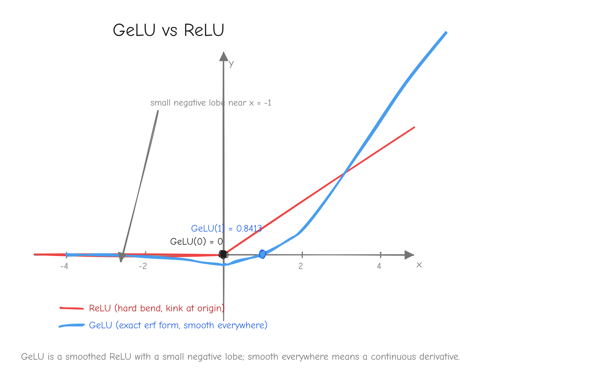
x from about -4 to 4. Curve 1: ReLU, the hard bend at the origin. Curve 2: GeLU, the exact erf form, a smooth curve that dips slightly negative around x = -1 before flattening to 0 on the left, and hugs y = x on the right. Mark GeLU(1) = 0.8413 and GeLU(0) = 0. The takeaway: GeLU is a smoothed ReLU with a small negative lobe, and being smooth everywhere is what gives it a continuous derivative.Vectorized form. From tests/ops.py:
def gelu(x):
Phi = 0.5 * (1.0 + _erf(x / _SQRT2))
Y = x * Phi
def bwd(dY):
phi = np.exp(-0.5 * x * x) * _INV_SQRT_2PI
fprime = Phi + x * phi
return {'x': fprime * dY}
return Y, bwd
with the module constants _SQRT2 = np.sqrt(2.0) and _INV_SQRT_2PI = 1.0 / np.sqrt(2.0 * np.pi). Phi is computed once in the forward and reused by the closure; phi and fprime are formed in the backward.
Shape check. Phi, phi, fprime all have the shape of x, so fprime * dY has the shape of x.
Sanity case. Take x = 1. Forward: x/sqrt(2) = 0.7071068, erf(0.7071068) = 0.6826895, so Phi(1) = 0.5 * (1 + 0.6826895) = 0.8413447 and f(1) = 1 * Phi(1) = 0.8413447. That matches the known value GeLU(1) ≈ 0.8413. Derivative: phi(1) = exp(-0.5) / sqrt(2*pi) = 0.6065307 / 2.5066283 = 0.2419707, so f'(1) = Phi(1) + 1 * phi(1) = 0.8413447 + 0.2419707 = 1.0833154. With an upstream dY entry of 2.0, dX = f'(1) * 2.0 ≈ 2.1666. The tanh approximation would give f(1) ≈ 0.84119 and f'(1) ≈ 1.0830, off in the fourth decimal, which is exactly why the implementation and the parity reference must use the same variant.
Tier 2: linear algebra ops
Matrix multiply
This is the second deep derivation, and the most important one in the part. Matmul is the workhorse of the model: every projection, every attention score matrix, the output head. The backward is two lines of NumPy, but you should be able to rederive those two lines from index notation without looking. Do this one slowly.
Forward. Y = X W, with X of shape (M, K), W of shape (K, N), and Y of shape (M, N). In index notation, each output entry is a sum over the shared dimension K:
Given. Upstream gradient dY, shape (M, N).
Derive dX. We want dX_{ab}, the gradient with respect to one generic input entry X_{ab}. The chain rule over the whole output is
So the work is the local derivative . Differentiate the sum that defines Y_{ij}:
The term in the k-sum survives only when i = a and k = b. Substitute back into the VJP:
The delta_{ia} killed the i-sum, fixing i = a. Now read the remaining sum as a matrix product. sum_j dY_{aj} W_{bj} = sum_j dY_{aj} (W^T)_{jb} = (dY W^T)_{ab}. So
Derive dW. Same procedure for a generic weight entry W_{ab}. The local derivative:
The VJP:
The delta_{jb} fixed j = b; rewriting X_{ia} as (X^T)_{ai} turns the i-sum into a matrix product. So
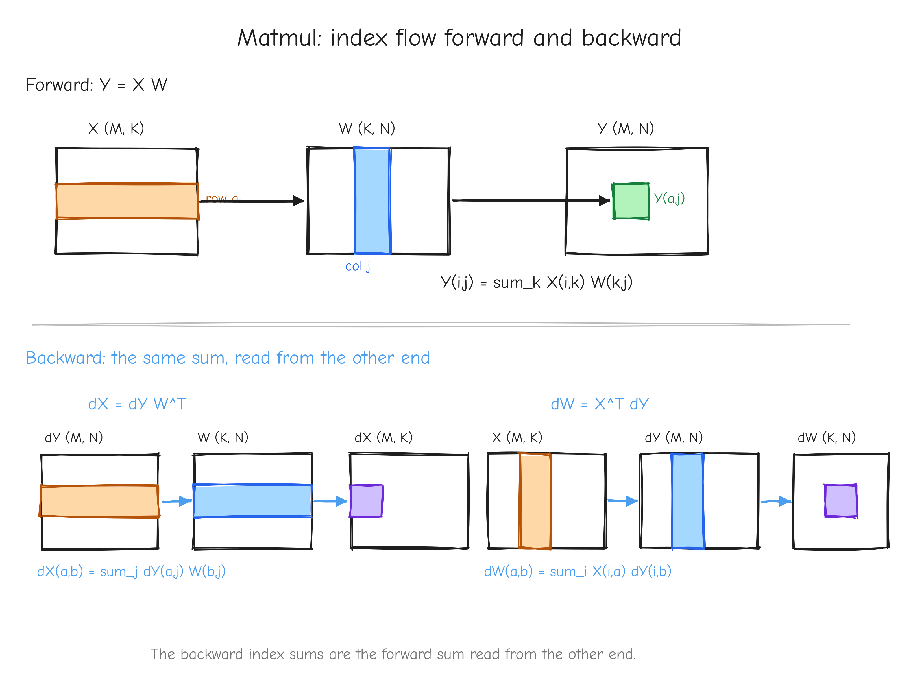
X (M,K), W (K,N), Y (M,N). Top half, forward: highlight row a of X and column j of W flowing into entry Y_{aj}, labeled Y_{ij} = sum_k X_{ik} W_{kj}. Bottom half, backward: highlight how dY and W^T combine into dX (row a of dY dotted against row b of W), and X^T and dY combine into dW. Annotate each arrow with the index-sum it represents. The takeaway: the backward index sums are the forward sum read from the other end.The affine form. Y = X W + b with b of shape (N,) broadcast over the M rows is just matmul followed by the bias-add case from the addition op. The matmul node gives dX and dW as above; the add node passes dY straight through to the matmul output and sums dY over the broadcast row axis for the bias. So dX = dY W^T, dW = X^T dY, db = dY.sum(axis=0).
The 3-D batched case. In the model X is usually (B, T, K), not (M, K). The forward X @ W broadcasts the matmul over the leading axes and works unchanged. dX = dY @ W^T also works unchanged. But dW = X^T dY needs care: X now has three axes, and you must contract over both the batch and the time axis, not just one. The fix is to flatten the leading axes first, X.reshape(-1, K), so the contraction is again a clean 2-D matrix product. This flattening is easy to get subtly wrong, and Part 14 covers a roadblock that came from exactly this.
Vectorized form. From tests/ops.py, the matmul op already handles the batched case by flattening:
def matmul(x, W):
Y = x @ W
K, N = W.shape
def bwd(dY):
dx = dY @ W.T
dW = x.reshape(-1, K).T @ dY.reshape(-1, N)
return {'x': dx, 'W': dW}
return Y, bwd
and the affine version adds the bias gradient:
def linear(x, W, b):
Y = x @ W + b
K = W.shape[0]
N = W.shape[1]
def bwd(dY):
dx = dY @ W.T
dW = x.reshape(-1, K).T @ dY.reshape(-1, N)
db = dY.reshape(-1, N).sum(axis=0)
return {'x': dx, 'W': dW, 'b': db}
return Y, bwd
x.reshape(-1, K) flattens every leading axis into one, so x.reshape(-1, K).T @ dY.reshape(-1, N) is the clean 2-D X^T dY regardless of how many batch axes there were. For 2-D input reshape(-1, K) is a no-op and this reduces to the plain X.T @ dY.
Shape check. dx: (M, N) @ (N, K) -> (M, K), the shape of x (or with batch axes, (B, T, N) @ (N, K) -> (B, T, K)). dW: (K, M) @ (M, N) -> (K, N), the shape of W. db: (M, N) summed over axis=0 gives (N,), the shape of b.
Sanity case. Let X = [[1, 2], [3, 4]] and W = [[1, 0], [0, 1]] (the identity). Forward: Y = X W = X = [[1, 2], [3, 4]]. Take dY = [[1, 0], [0, 1]].
dX = dY W^T = dY I = [[1, 0], [0, 1]].
dW = X^T dY = [[1, 3], [2, 4]] [[1, 0], [0, 1]] = [[1, 3], [2, 4]].
Check dW_{00} directly. W_{00} enters Y_{i0} = X_{i0} W_{00} + X_{i1} W_{10}, so partial Y_{i0} / partial W_{00} = X_{i0} and all other partials are 0. Then dW_{00} = sum_i dY_{i0} X_{i0} = dY_{00} X_{00} + dY_{10} X_{10} = 1*1 + 0*3 = 1, matching. Check dX_{00}: X_{00} enters Y_{0j} = X_{00} W_{0j} + X_{01} W_{1j}, so partial Y_{0j} / partial X_{00} = W_{0j}, and dX_{00} = sum_j dY_{0j} W_{0j} = 1*1 + 0*0 = 1, matching dY W^T. Affine spot-check: with the same dY, db = dY.sum(axis=0) = [1, 1], shape (2,) = (N,).
Sum and mean reductions
Forward. Y = X.sum(axis) or Y = X.mean(axis). Take a row sum over the last axis as the concrete case: X is (M, N), Y is (M,) with Y_i = sum_n X_{in}. Mean is the same with a 1/N factor, Y_i = (1/N) sum_n X_{in}, where N is the number of elements reduced over.
Given. Upstream gradient dY, one number per surviving position.
Derive. For the sum, partial Y_i / partial X_{ab} = sum_n delta_{ia} delta_{nb} = delta_{ia}, independent of the column b: every element of row a contributed equally. The VJP gives dX_{ab} = sum_i dY_i delta_{ia} = dY_a. So dX is dY broadcast back over the axis that was summed away. Mean is 1/N times sum, so its gradient is the same broadcast divided by N: dX = broadcast(dY) / N. Both reductions show up inside LayerNorm, where the mean and the variance reduce over the feature axis, so these broadcast-back rules are reused there.
Vectorized form. From tests/ops.py, for the last-axis sum and mean:
def sum_lastaxis(x):
Y = x.sum(axis=-1)
def bwd(dY):
return {'x': np.broadcast_to(dY[..., None], x.shape).copy()}
return Y, bwd
def mean_lastaxis(x):
N = x.shape[-1]
Y = x.mean(axis=-1)
def bwd(dY):
return {'x': np.broadcast_to(dY[..., None], x.shape).copy() / N}
return Y, bwd
dY[..., None] inserts the size-1 axis where the reduction happened, then np.broadcast_to(..., x.shape) stretches it back to x's shape; .copy() is there because broadcast_to returns a read-only view. The full reduction sum_all, used to form the scalar loss in the autograd tests, fills x's shape with the single upstream value:
def sum_all(x):
Y = np.asarray(x, dtype=np.float64).sum()
def bwd(dY):
return {'x': np.full(np.shape(x), dY, dtype=np.float64)}
return Y, bwd
Shape check. dY[..., None] is (M, 1), broadcast to (M, N) = x.shape. Dividing by the scalar N leaves the shape unchanged. sum_all returns np.full(x.shape, dY), exactly x.shape.
Sanity case. Let X = [[1, 2, 3], [4, 5, 6]], reduce over the last axis, N = 3. Sum: Y = [6, 15]; with dY = [1, 10], dX = [[1, 1, 1], [10, 10, 10]]. Bumping X_{00} by epsilon raises Y_0 by epsilon, so L by 1 * epsilon, giving dX_{00} = 1. Mean: Y = [2, 5]; with the same dY, dX = [[1/3, 1/3, 1/3], [10/3, 10/3, 10/3]]. Bumping X_{10} by epsilon raises Y_1 by epsilon/3, so L by 10 * epsilon / 3, giving dX_{10} = 3.3333.
Transpose
Forward. Y = X^T. X is (M, N), Y is (N, M), with Y_{ij} = X_{ji}.
Given. Upstream gradient dY, shape (N, M).
Derive. partial Y_{ij} / partial X_{ab} = partial X_{ji} / partial X_{ab} = delta_{ja} delta_{ib}, so the VJP gives dX_{ab} = sum_{ij} dY_{ij} delta_{ja} delta_{ib} = dY_{ba} = (dY^T)_{ab}. Transpose is its own inverse, so its backward is again a transpose: dX = dY^T. No gradient values change, only the layout.
Vectorized form. From tests/ops.py:
def transpose2d(x):
Y = x.T
def bwd(dY):
return {'x': dY.T}
return Y, bwd
Shape check. dY is (N, M), so dY.T is (M, N), the shape of X.
Sanity case. X = [[1, 2, 3], [4, 5, 6]] (2x3) gives Y = X^T = [[1, 4], [2, 5], [3, 6]] (3x2). Take dY = [[10, 40], [20, 50], [30, 60]]. Then dX = dY^T = [[10, 20, 30], [40, 50, 60]] (2x3). Check: X_{01} = 2 lands at Y_{10}, so bumping X_{01} by epsilon raises Y_{10} by epsilon, changing L by dY_{10} * epsilon = 20 * epsilon, giving dX_{01} = 20.
Reshape
Forward. Y = reshape(X, new_shape). Y holds exactly the same elements as X in the same flat row-major order; only the index layout changes. There is a fixed bijection between an X index and a Y index with derivative 1 along that pairing and 0 everywhere else.
Given. Upstream gradient dY, shape new_shape.
Derive. The VJP routes each upstream entry back to the input position it came from, which is exactly reshaping dY back to X's shape: dX = reshape(dY, X.shape). The gradient values are untouched, only the layout is reverted. This is the head-split in attention: the forward reshapes (B, T, D) toward (B, T, H, d), and the backward reshapes the gradient back.
Vectorized form. From tests/ops.py:
def reshape_op(x, newshape):
Y = x.reshape(newshape)
def bwd(dY):
return {'x': dY.reshape(x.shape)}
return Y, bwd
Shape check. dY.reshape(x.shape) has shape x.shape by construction, valid because reshape preserves the total element count.
Sanity case. X = [1, 2, 3, 4] (shape (4,)) reshaped to Y = [[1, 2], [3, 4]] (shape (2, 2)). Take dY = [[7, 8], [9, 10]]. Then dX = reshape(dY, (4,)) = [7, 8, 9, 10]. Check: X_2 = 3 maps to Y_{10}; bumping X_2 by epsilon raises Y_{10} by epsilon, changing L by dY_{10} * epsilon = 9 * epsilon, giving dX_2 = 9.
Multi-axis permute
Forward. Y = transpose(X, p) for a permutation p of the axes. The attention head-split uses p = (0, 2, 1, 3), swapping the head axis and the time axis of a (B, H, T, d)-style tensor.
Given. Upstream gradient dY, shape p applied to X's shape.
Derive. Same reasoning as transpose: each output index is a relabeling of an input index, so the VJP relabels the gradient back. The backward applies the inverse permutation, dX = transpose(dY, p_inv), where p_inv[p[i]] = i. For p = (0, 2, 1, 3) the permutation is its own inverse, so the backward uses the same (0, 2, 1, 3).
Vectorized form. From tests/ops.py, the specific attention permutation:
def permute_bhtd(x):
Y = x.transpose(0, 2, 1, 3)
def bwd(dY):
return {'x': dY.transpose(0, 2, 1, 3)}
return Y, bwd
For a general p the backward is np.transpose(dY, np.argsort(p)), since np.argsort(p) produces p_inv.
Shape check. Applying p_inv to dY's shape, which is p applied to X's shape, recovers X's shape. For the involution (0, 2, 1, 3), applying it twice returns the original.
Sanity case. Take X of shape (1, 2, 3, 4). The forward gives Y of shape (1, 3, 2, 4): axes 1 and 2 swapped. A dY of shape (1, 3, 2, 4) goes back through dY.transpose(0, 2, 1, 3) to shape (1, 2, 3, 4), matching X. The value at dX[b, h, t, e] is dY[b, t, h, e]: the same number, moved back to the position it came from.
Your turn
Part 4: Derivations Tier 3, the loss layer
Tiers 1 and 2 built the muscle: element-wise ops, matmul, reductions. This tier is shorter, but it is where the backward pass actually begins. The loss is a single scalar at the very top of the model. Backpropagation starts there and flows down. So the gradient this tier produces, the partial of L with respect to the logits, is the seed: every other gradient in GPT-2 is a consequence of it.
Three operations get us there. Softmax turns logits into a probability distribution. Cross-entropy turns that distribution plus a target into a scalar loss. Then we fuse the two, and the fused form collapses to one of the cleanest results in the whole course: dx = p - y.
We derive softmax and cross-entropy as standalone ops first, because we need the standalone softmax again later inside attention. Then we compose them and watch the algebra simplify.
Softmax
Forward. For a single logit vector x of shape (V,):
The output p has shape (V,), every p_i > 0, and the entries sum to 1. In practice softmax is applied row-wise to a (B, T, V) tensor of logits, or to attention scores of shape (..., T), always over the last axis.
One detail before the derivation: numerical stability. Computing exp(x_i) directly overflows when x_i is large. The fix is to subtract the row max m = max_k x_k before exponentiating:
The e^{-m} factors cancel top and bottom. The output p is identical, so the gradient is identical too. Treat m as a constant when differentiating: since the function value is unchanged, the shift contributes nothing to the derivative.
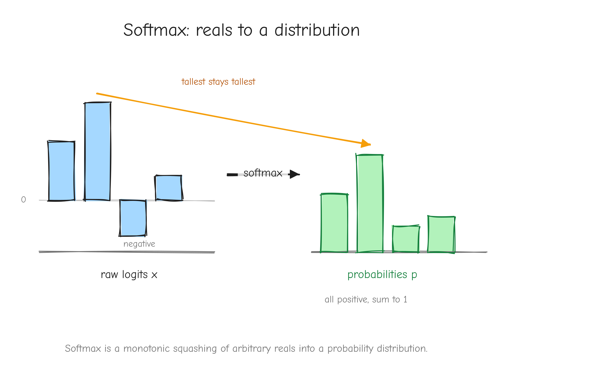
x. An arrow labeled "softmax" pointing to a bar chart on the right where all bars are positive, sum to 1, and the tallest input logit became the tallest probability. Label the right chart p. Takeaway: softmax is a monotonic squashing of arbitrary reals into a distribution.Given. Upstream gradient dp of shape (V,), the same shape as p.
Derive. This is a deep op. We do it in two steps: first the full Jacobian partial p_i / partial x_j, then the vector-Jacobian product that contracts it against dp.
Step 1, the Jacobian. Write S = sum_k exp(x_k) so that p_i = exp(x_i) / S. Note that S depends on every input, so partial S / partial x_j = exp(x_j). There are two cases.
Case i = j. Both the numerator exp(x_i) and the denominator S depend on x_i, so we use the quotient rule:
Case i != j. The numerator exp(x_i) does not depend on x_j, only the denominator does:
Both cases fold into one formula using the Kronecker delta:
Check it. Set i = j: you get p_i(1 - p_i). Set i != j: you get p_i(0 - p_j) = -p_i p_j. Both match.
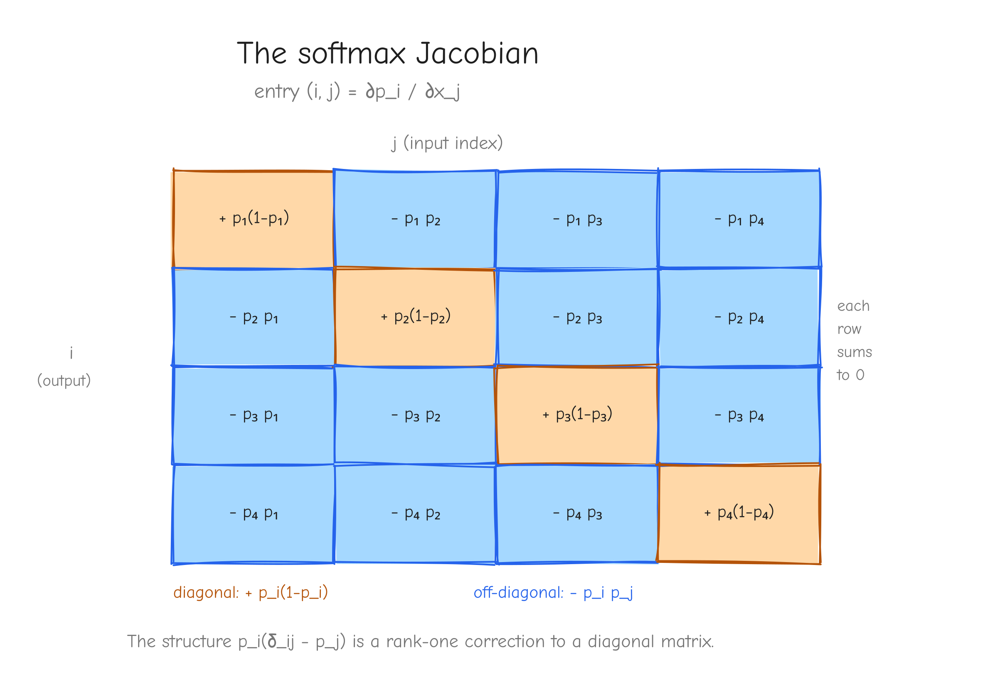
V x V grid (use V = 4) showing the Jacobian matrix partial p_i / partial x_j. Color the diagonal cells one color labeled p_i(1 - p_i) with a "+" sign, and the off-diagonal cells another color labeled -p_i p_j with a "-" sign. Annotate that every row sums to zero (raising one logit and the redistribution cancel). Takeaway: the structure p_i(delta_ij - p_j) is a rank-one correction to a diagonal.Step 2, the vector-Jacobian product. We never want the full V x V Jacobian as a materialized matrix. We want dx, and the chain rule gives it by contracting dp against the Jacobian. Output index j depends on input index i through partial p_j / partial x_i = p_j(delta_ji - p_i):
The first sum collapses: delta_ji is nonzero only when j = i, so it picks out the single term dp_i p_i. In the second sum, p_i does not depend on the summation index j, so factor it out: p_i sum_j dp_j p_j = p_i (dp . p), where dp . p is a single scalar, the dot product of the upstream gradient with the probability vector. Putting the two together:
In vector form:
This is the standalone softmax backward. The factor dp . p is a scalar per row, computed from whatever upstream gradient happens to arrive. We need this exact form again in Part 6, Attention and composition: the softmax inside attention receives its upstream gradient from the weights @ V matmul, not from cross-entropy. There is no shortcut there. Do not assume dp is anything special.
Vectorized form. Copied from tests/ops.py, softmax_op:
def softmax_op(x):
"""Item 8. p = softmax(x) over the last axis (numerically stable).
dx = p (.) (dp - (dp . p)), the per-row dot taken over the last axis."""
z = x - x.max(axis=-1, keepdims=True)
with np.errstate(under='ignore'):
e = np.exp(z)
p = e / e.sum(axis=-1, keepdims=True)
def bwd(dp):
dx = p * (dp - np.sum(dp * p, axis=-1, keepdims=True))
return {'x': dx}
return p, bwd
The keepdims=True on the sum is what makes dp . p broadcast back correctly: it stays shape (..., 1) so it subtracts from every column of dp.
Shape check. p and dp are both (V,) (or (..., V) batched). The term np.sum(dp * p, axis=-1, keepdims=True) is (..., 1), a scalar per row. Subtracting it from dp broadcasts to (..., V), and the element-wise product with p keeps (..., V), the shape of x. Correct.
Sanity case. Let x = [0, ln 2], length 2. Then exp(x) = [1, 2], S = 3, so p = [1/3, 2/3]. Take upstream dp = [1, 0].
dp . p = 1 * 1/3 + 0 * 2/3 = 1/3.dx_1 = p_1(dp_1 - dp.p) = 1/3 (1 - 1/3) = 1/3 * 2/3 = 2/9.dx_2 = p_2(dp_2 - dp.p) = 2/3 (0 - 1/3) = -2/9.
So dx = [2/9, -2/9]. Cross-check against the explicit Jacobian: partial p_1 / partial x_1 = p_1(1 - p_1) = 1/3 * 2/3 = 2/9, and partial p_1 / partial x_2 = -p_1 p_2 = -2/9. With dp = [1, 0], dx_1 = dp_1 (partial p_1 / partial x_1) + dp_2 (partial p_2 / partial x_1) = 1 * 2/9 + 0 = 2/9, and dx_2 = 1 * (-2/9) + 0 = -2/9. The VJP formula and the explicit Jacobian agree.
Cross-entropy from probabilities
Forward. Given a probability vector p and a target y, both shape (V,):
p has p_i > 0 and sums to 1. y is the target: a one-hot vector in the usual case, or more generally any distribution that sums to 1 (label smoothing, distillation). L is a scalar.
Given. The loss is the scalar output, so the upstream gradient is dL = partial L / partial L = 1.
Derive. This one is short. Differentiate L with respect to each p_i. Only the i-th term of the sum contains p_i:
So dp_i = -y_i / p_i. The target y is a constant, not a variable we differentiate.
One-hot special case. If y is one-hot at the true class c (so y_c = 1 and y_i = 0 otherwise), then:
Only the true-class probability gets a nonzero gradient, and L itself reduces to -log p_c.
Vectorized form. Copied from tests/ops.py, cross_entropy_from_probs:
def cross_entropy_from_probs(p, y):
"""Item 9. L = -sum_i y_i log(p_i) (summed over all elements).
dp = -y / p. y (the target) is treated as a constant."""
L = -np.sum(y * np.log(p))
def bwd(dL):
return {'p': (-y / p) * dL}
return L, bwd
Shape check. y and p are both (V,), so -y / p is (V,), the shape of p. Correct.
Sanity case. Take p = [1/3, 2/3] and one-hot target y = [1, 0], true class c = 1.
L = -(1 * log(1/3) + 0 * log(2/3)) = -log(1/3) = log 3 ~ 1.0986.dp_1 = -y_1 / p_1 = -1 / (1/3) = -3.dp_2 = -y_2 / p_2 = 0.
So dp = [-3, 0]. This matches the one-hot rule: -1/p_c = -3 at the true class, zero elsewhere.
Fused softmax plus cross-entropy
This is the payoff. The two ops above are almost never used separately for the loss. They are composed: logits go in, a scalar loss comes out, and the gradient that comes back is p - y. We derive it two ways, because seeing both is the point.
Forward. Compose softmax then cross-entropy, for a single token with logit vector x of shape (V,):
Input is logits x, target y is one-hot (or a distribution summing to 1), output L is a scalar.
Given. dL = 1. The scalar loss is the root of the backward pass; nothing is upstream of it.
Derive. Method A, substitute and expand the log. Use log p_i = x_i - log sum_k exp(x_k):
Since y sums to 1, the second term is just log sum_k exp(x_k). So L = -sum_i y_i x_i + log sum_k exp(x_k). Differentiate with respect to x_j. The first term contributes -y_j. The second term is the log-sum-exp, whose derivative is exactly softmax:
Method B, chain through the two ops and watch the fractions cancel. From cross-entropy, the upstream into softmax is dp_i = -y_i / p_i. Feed that into the standalone softmax VJP dx_j = p_j(dp_j - sum_i dp_i p_i):
Look at the two pieces inside the parentheses after multiplying by p_j. The first: p_j * (-y_j / p_j) = -y_j. The p_j cancels the 1/p_j from cross-entropy exactly. The second: p_j * sum_i y_i = p_j * 1 = p_j. So dx_j = -y_j + p_j = p_j - y_j. Same answer.
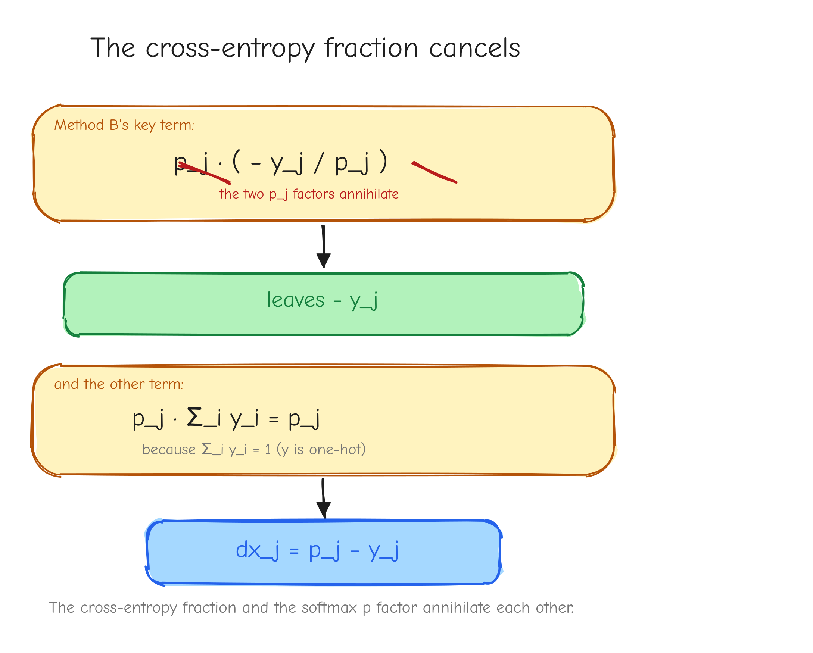
p_j multiplying (-y_j / p_j). Strike through the two p_j factors with a diagonal line, leaving -y_j. Below it, show p_j * sum_i y_i collapsing to p_j because sum y_i = 1. Final line: dx_j = p_j - y_j. Takeaway: the messy cross-entropy fraction and the softmax p factor annihilate each other.Batch and averaging, the 1/N factor. In GPT-2 training the reported loss is the mean over all predicted tokens, not a single token. This introduces a factor that is easy to drop and expensive to drop. Derive it explicitly.
Let there be N tokens, indexed by n. Each has its own logit vector x^(n) of shape (V,), its own probabilities p^(n) = softmax(x^(n)), and its own one-hot target y^(n). The total loss is the mean of the per-token losses:
The logits of token n affect only L_n. There is no cross-token coupling in the loss layer (the coupling happens earlier, inside attention; here each token's logits are independent). So when we differentiate L with respect to one token's logits, only that token's term survives, and it carries the 1/N from the mean:
The subtraction and division are per token. N is the number of tokens averaged over, typically N = B * T, every position in every sequence. If some positions are masked or ignored (padding, ignore_index), N is the count of non-ignored tokens, and the ignored rows of dlogits are set to zero.
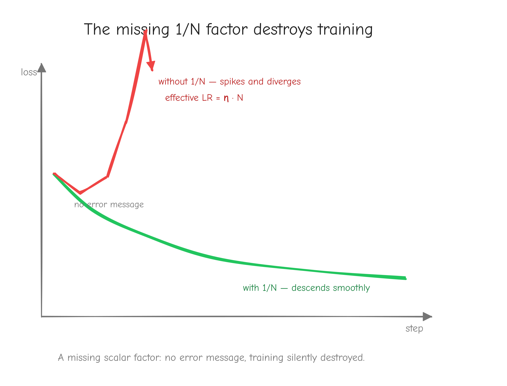
This dlogits, shape (B, T, V) or (N, V) flattened, is the seed gradient that kicks off the entire backward pass through GPT-2.
Vectorized form. Copied from tests/ops.py, softmax_ce_fused:
def softmax_ce_fused(logits, targets):
"""Item 10. Fused softmax + cross-entropy, mean-reduced over all B*T tokens.
L = mean_n CE(softmax(logits_n), onehot(targets_n)).
dlogits = (p - onehot) / N, N = B*T."""
B, T, V = logits.shape
N = B * T
flat = logits.reshape(N, V)
tgt = targets.reshape(N)
z = flat - flat.max(axis=-1, keepdims=True)
with np.errstate(under='ignore'):
e = np.exp(z)
p = e / e.sum(axis=-1, keepdims=True) # (N, V)
rows = np.arange(N)
L = -np.mean(np.log(p[rows, tgt]))
def bwd(dL):
dflat = p.copy()
dflat[rows, tgt] -= 1.0
dflat = dflat / N * dL
return {'logits': dflat.reshape(B, T, V)}
return L, bwd
Note how the backward builds p - y_onehot without ever materializing the one-hot matrix: it copies p, then subtracts 1 only at the true-class column of each row. That is p - y for one-hot y. Then / N, then * dL.
Shape check. logits is (B, T, V), flattened to (N, V). p is (N, V). Subtracting 1 in place at the target columns keeps (N, V). Dividing by the scalar N keeps (N, V). Reshaping back gives (B, T, V), the shape of logits. Correct.
Sanity case. Single token: x = [0, ln 2], so p = [1/3, 2/3]. One-hot target y = [1, 0], true class 1.
dx = p - y = [1/3 - 1, 2/3 - 0] = [-2/3, 2/3].
Cross-check via Method B: dp = -y / p = [-3, 0]. Softmax VJP: dp . p = -3 * 1/3 + 0 * 2/3 = -1. Then dx_1 = p_1(dp_1 - dp.p) = 1/3(-3 - (-1)) = 1/3(-2) = -2/3, and dx_2 = p_2(dp_2 - dp.p) = 2/3(0 - (-1)) = 2/3. Both routes agree, and a finite-difference check on L = -log p_{class 1} gives dx ~ [-0.6667, 0.6667], matching.
Now put this token in a batch of N = 2 averaged tokens:
Exactly half the single-example gradient. That is the 1/N factor in action.
Your turn
Part 5: Derivations Tier 4 to 5, normalization, embeddings, weight tying
Four operations here, and they split cleanly by difficulty. LayerNorm is the hardest derivation in the course so far: one input feeds the output through three channels at once, and the work is keeping those channels straight without dropping a term. Then come the embeddings, which are not hard calculus but hide two of the most common silent bugs in a from-scratch GPT: the np.add.at trap and the weight-tying accumulation. Get those wrong and nothing crashes. The model just trains worse and you never know why.
We keep the same discipline: forward equation with shapes, the upstream gradient we are handed, the derivation in index notation, the vectorized form copied from tests/ops.py, a shape check, and a worked number.
Tier 4: normalization
LayerNorm
Forward. LayerNorm normalizes over the last dimension. For one feature vector (the operation is applied independently to every position of a tensor):
The variance is the biased one (divide by , not ). The parameters are learnable and shared across all positions: the same vector is broadcast everywhere. Per position, and are scalars. Write for the normalizing standard deviation, so .
Given. Upstream gradient , same shape as : , or for a single position.
Derive. We do the easy parameters first, then spend the rest of the section on .
The easy params: and . For a single position, . The partials are immediate: and . The VJP for one position:
But and are shared across every position. The same vector was broadcast up to in the forward pass, so by the broadcasting backward rule (a tensor broadcast to a larger shape gets its gradient summed back over the broadcast axes) we sum the per-position contributions over batch and sequence:
Each is shape . That is the whole story for the parameters.
The hard part: . This is where LayerNorm earns its reputation. We build it in three moves.
Move 0, peel off . Since and does not depend on , we have , so
Now we need from , which means the Jacobian . Here is why it is hard: and are both averages over the whole vector, so every moves every . There is no clean per-component story. One input nudges the output through three separate channels.
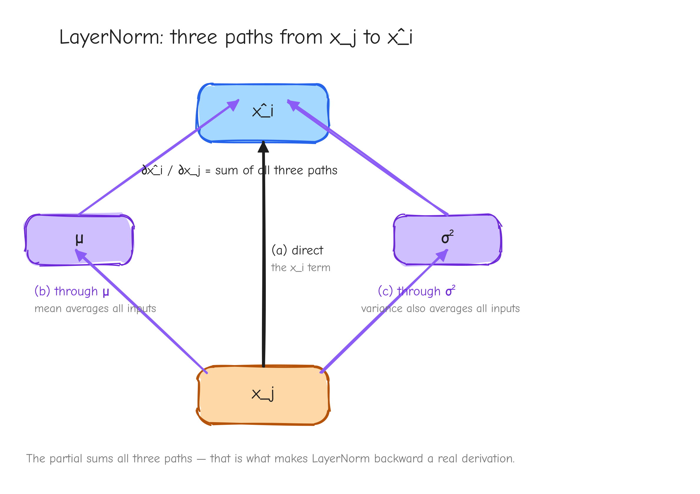
Move 1, the ingredients. We need how and depend on a single . The mean is easy:
The variance takes care, because and itself depends on :
Split the sum. The first piece, . The second piece, , because by the definition of . So
Then , so by the chain rule
Move 2, the three contributions to . Write and apply the product rule over the two -dependent factors:
The first piece: . That single expression already holds two of the three channels:
The second piece: , so
Putting all three together:
Term (c) cleans up. Since , the product , so (c) .
Move 3, stitch the VJP. The chain rule gives . Use the Jacobian formula with output index and input index , so :
Distribute the sum into three pieces and simplify each:
Piece 1: the collapses the sum to the single term . Piece 2: nothing inside depends on , it is one scalar subtracted from every component. Piece 3: and come out of the -sum, leaving the scalar .
Factor out of all three (for piece 1, rewrite ):
Both sums run over the normalized (last) dim only. For a batched tensor they are sum(..., axis=-1, keepdims=True), and each position is handled independently.
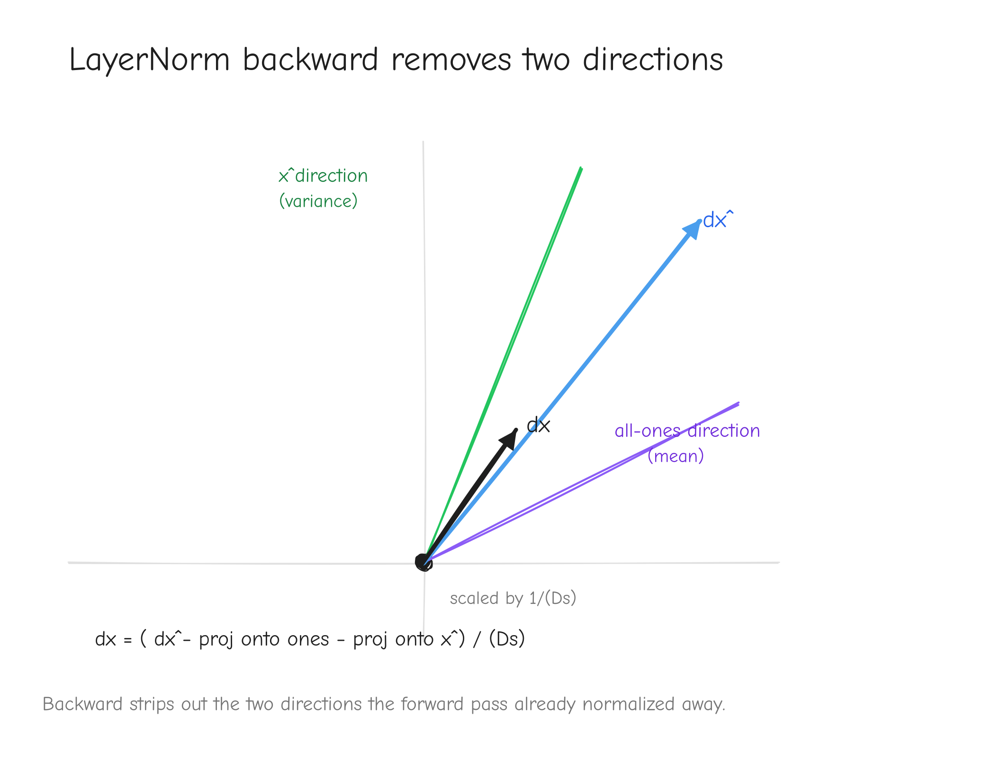
Vectorized form (full tensor , sums over the last axis), copied from tests/ops.py:
def layernorm(x, gamma, beta, eps):
D = x.shape[-1]
mu = x.mean(axis=-1, keepdims=True)
xc = x - mu
var = np.mean(xc * xc, axis=-1, keepdims=True)
s = np.sqrt(var + eps)
xhat = xc / s
y = gamma * xhat + beta
lead = tuple(range(x.ndim - 1))
def bwd(dy):
dgamma = np.sum(dy * xhat, axis=lead)
dbeta = np.sum(dy, axis=lead)
dxhat = gamma * dy
sum_dxhat = np.sum(dxhat, axis=-1, keepdims=True)
sum_dxhat_xhat = np.sum(dxhat * xhat, axis=-1, keepdims=True)
dx = (1.0 / (D * s)) * (D * dxhat - sum_dxhat - xhat * sum_dxhat_xhat)
return {'x': dx, 'gamma': dgamma, 'beta': dbeta}
return y, bwd
Here lead is (0, 1) for a (B,T,D) input: the batch and sequence axes that and were broadcast over. var keeps its trailing dim, shape , so s broadcasts cleanly against the tensors.
Shape check.
- : is broadcast over , is , so is .
- : sum of over axes gives , the shape of .
- : same, , the shape of .
- : is ;
sum_dxhatis and broadcasts; is ; the per-position prefactor times gives , the shape of .
Sanity case. Single position, . Take
The is chosen so is a perfect square and the arithmetic stays exact. The derivation holds for any .
Forward.
- .
- deviations ; .
- , so .
- .
- .
Backward. Take upstream .
- .
- .
- .
- .
- .
- prefactor .
Apply the compact form, :
- .
- .
- .
So . The check: , as it must be. LayerNorm output is invariant to adding a constant to every input, so the gradient has no all-ones component. Finite-difference gradient checking returns , matching exactly.
To see the compact form was not a lucky shortcut, evaluate straight from the raw three-term Jacobian with , , , , :
| (a) | (b) | (c) | (a)+(b)+(c) | sum | |
|---|---|---|---|---|---|
| 1 | |||||
| 2 | |||||
| 3 |
Sum: . The raw sum and the compact form agree.
Tier 5: embeddings and weight tying
These three operations are calculus-light. The work is not the derivative; it is the NumPy.
Embedding lookup
Forward.
- , the embedding table (parameter).
- , integer token ids in (constant, not differentiated).
- , the gathered embeddings.
This is a pure gather: row of is copied into output slot .
Given. Upstream gradient .
Derive. Since is not differentiable, the only gradient is , shape . Write the forward with an explicit selector. For one output element:
The partial of one output with respect to one table entry:
The VJP sums the upstream gradient against this Jacobian over all output indices :
The collapses the -sum to :
The backward of a gather is a scatter-add. Row of fed the output at every position whose id equals , so its gradient is the sum of all those upstream slices. Rows for tokens absent from the batch get zero, so is mostly zeros, nonzero only on the (at most ) distinct ids that appeared.
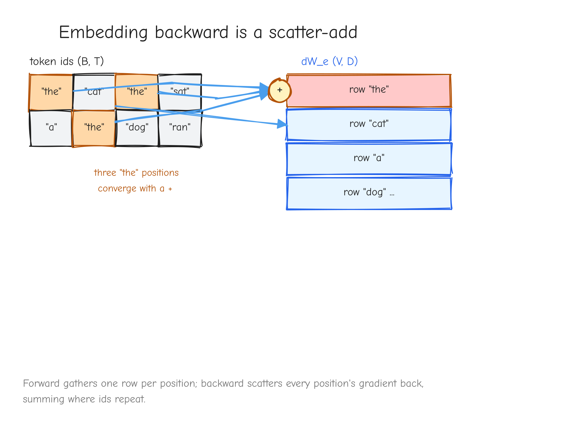
Vectorized form, copied from tests/ops.py:
def embedding(W_e, ids):
Y = W_e[ids]
def bwd(dY):
dW_e = np.zeros_like(W_e)
np.add.at(dW_e, ids, dY)
return {'W_e': dW_e}
return Y, bwd
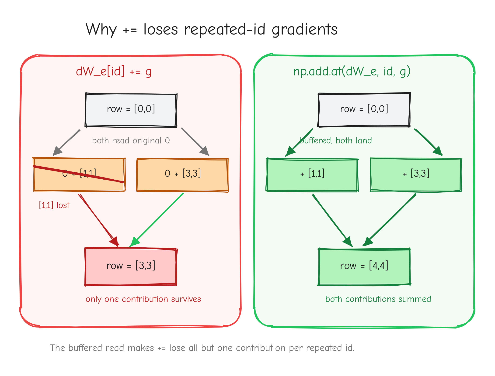
+=: two arrows both reading the original value 0, computing and independently, then only written back, shown crossed out. Right, np.add.at: both contributions land and the row holds . Caption: the buffered read makes += lose all but one contribution per repeated id.Shape check. has shape , the shape of . No gradient for the integer ids.
Sanity case. , , , . Let , so token 0 appears twice.
Forward gather: , , . Take upstream , , . Scatter-add:
- Row 0 receives from and : .
- Row 1 appears nowhere: .
- Row 2 receives from : .
The wrong way, dW_e[ids] += dY, would compute row-0 candidates and , then write back only the last, , dropping the . The correct row 0 is .
Positional embedding
Forward.
- , the positional table; only the first rows are used.
- .
This is the embedding lookup with the index array fixed to , broadcast over the batch. Each position is used exactly once per sequence and times across the batch.
Given. Upstream gradient .
Derive. Specialize the embedding result with . The scatter-add over positions with becomes the set of all with , which is just the sum over the batch axis:
There are no index repeats within a sequence (each is unique), so the only accumulation is the deterministic sum over . That is exactly the broadcast-backward rule: the forward broadcast across the batch, so the backward sums over the batch.
Vectorized form, copied from tests/ops.py:
def positional_embedding(W_p, T, B):
Y = np.broadcast_to(W_p[:T], (B, T, W_p.shape[1])).copy()
def bwd(dY):
dW_p = np.zeros_like(W_p)
dW_p[:T] = dY.sum(axis=0)
return {'W_p': dW_p}
return Y, bwd
Shape check. has shape , the shape of , with rows left zero.
Sanity case. , , , . Suppose
Sum over the batch: , , (position 2 unused).
Weight-tied output projection (lm_head)
Forward.
- , the output of the final LayerNorm.
- , the same matrix as the token embedding table (this is weight tying).
- .
There is no separate projection weight and no bias in the nanoGPT lm_head. The projection weight is literally .
Given. Upstream gradient , coming from the fused softmax plus cross-entropy backward (Part 4, the loss layer).
Derive. The lm_head is a matmul with weight , so the mechanics are the matmul rule from Part 3. The new content is what happens because is shared. We derive the head's two gradients first, then handle the tie.
Gradient into . Differentiate one logit with respect to one entry:
VJP:
that is, . The transpose in the forward () un-transposes in the backward.
Gradient into from the head. Differentiate one logit with respect to one table entry:
VJP, summed over all output indices :
This is a sum of outer products, one per token, each shaped . Folding the axes into one axis of size , with reshapes and :
The tie. Here is the part that is specific to weight tying. is one parameter buffer used in two distinct places in the forward pass: the token embedding lookup, and this lm_head projection. The multivariate chain rule says that when one parameter feeds multiple sub-computations, its total gradient is the sum of the gradient from each use. Treat as two logical copies (embedding) and (head) constrained equal, then
is the scatter-add from the embedding lookup. is the outer-product sum just derived. Both must land in the same buffer.
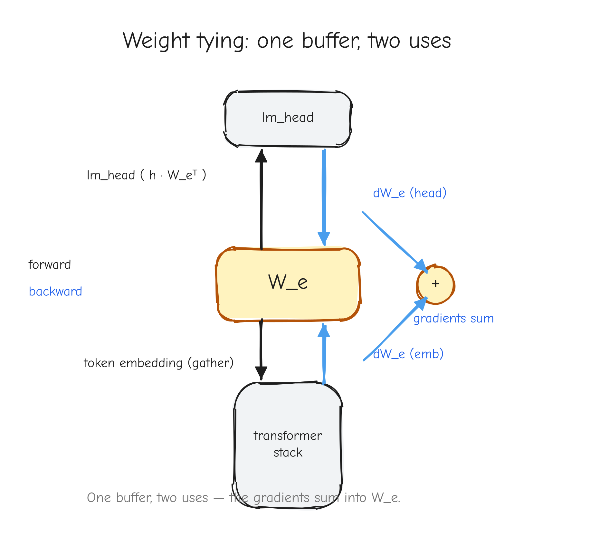
Vectorized form, copied from tests/ops.py. The lm_head op by itself:
def lm_head(h, W_e):
logits = h @ W_e.T
D = h.shape[-1]
V = W_e.shape[0]
def bwd(dlogits):
dh = dlogits @ W_e
dW_e = dlogits.reshape(-1, V).T @ h.reshape(-1, D)
return {'h': dh, 'W_e': dW_e}
return logits, bwd
In the full model (tiny_gpt in tests/ops.py), the two contributions are wired together in execution order. The lm_head runs first, near the output, and initializes the buffer; the embedding backward runs last, near the input, and accumulates into it:
# during lm_head backward (runs early):
dxf = dlogits @ W_e
dW_e = dlogits.reshape(-1, V).T @ xf.reshape(-1, D) # weight-tie #1: initialize
# ... later, during token-embedding backward (runs last):
np.add.at(dW_e, ids, de_tok) # weight-tie #2: accumulate
Shape check. is , the shape of . Each of , , and the total is , the shape of .
Sanity case. , , , . Token ids .
Forward : , . Take upstream , .
Head contribution. , . And
Embedding contribution. Suppose the embedding-side upstream (the that reached the token-embedding output, summed back from the residual stream) is , . Ids , no repeats, so the scatter-add gives
Total.
Overwriting instead of accumulating would leave either or , both wrong.
Your turn
Part 6: Derivations Tier 6 to 7, attention and composition
Attention is the final boss. It is not one operation, it is a pipeline: project, split into heads, score, mask, normalize, mix, merge, project again. If you try to derive the whole thing as one monolithic block you will get lost in the indices. So we do not. We derive it in pieces, each piece a small op we already know how to handle (matmul, scale, add, softmax, reshape, transpose), then we chain the pieces in reverse for the backward pass. The only genuinely new skill in this part is bookkeeping: keeping track of which axis is which through a four-dimensional (B, H, T, d) tensor.
Notation for the whole part: B is batch, H is the number of heads, T is sequence length, d = D/H is the per-head dimension, D = n_embd is the full embedding dimension. Every batched matmul and every transpose in this part acts on the last two axes. The leading axes, (B, H) or (B,), are carried along unchanged. As always, dX has the same shape as X.
Tier 7 has no new math at all. The transformer block and the full model are pure composition: every gradient is something we already derived. But composition has one trap, the residual connection, and we spend real time on it because it is where people lose a factor.
16a. Q, K, V projections and head split
Q, K, V projections and head split
Forward. One fused matmul produces all of Q, K, and V at once, then we slice it into three and reshape each into heads.
Shapes: x is (B, T, D), W_attn is (D, 3D), b_attn is (3D,) broadcast over (B, T), and qkv is (B, T, 3D). Slice the last axis into three contiguous D-wide blocks:
each (B, T, D). Then split each one into heads. The head split is a reshape followed by a transpose:
The reshape just reinterprets the D axis as (H, d) with no data movement. The transpose swaps axes 1 and 2 so the head axis sits next to the batch axis, which is what the batched matmuls in the next step want. The full forward shape map:
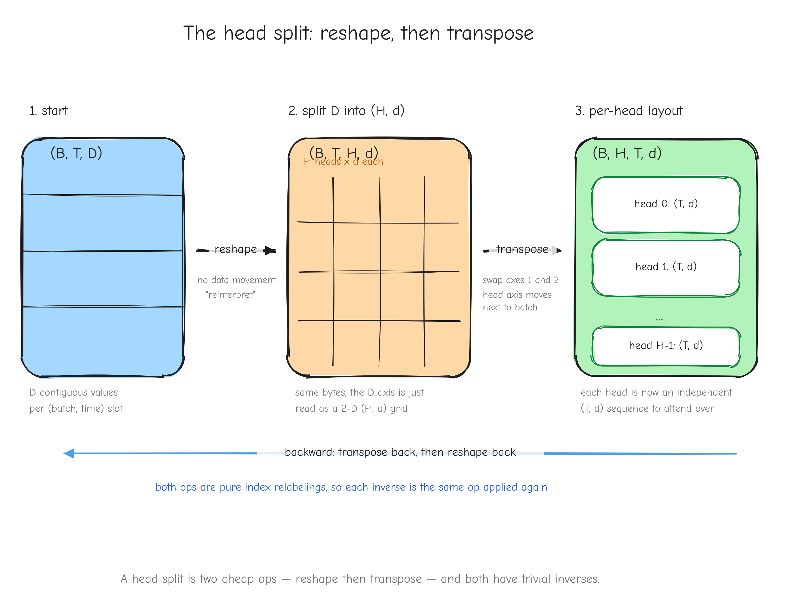
(B, T, D) block, show the D axis splitting into an (H, d) grid (reshape, no data movement, label it "reinterpret"), then show axes 1 and 2 swapping so the result is (B, H, T, d) (transpose, label it "head axis moves next to batch"). The takeaway: a head split is two cheap ops, and both have trivial inverses.Given. Upstream gradients dQ, dK, dV, each (B, H, T, d).
Derive. Three steps, each the backward of an op we already have.
Step A, undo the head split. The head split was reshape then transpose (0, 2, 1, 3). Run it backward: transpose (0, 2, 1, 3) again (this permutation swaps axes 1 and 2, so it is its own inverse), then reshape (H, d) back to D. For each of Q, K, V this gives dQ_flat, dK_flat, dV_flat, each (B, T, D).
Step B, undo the slice. The forward slice cut qkv into three disjoint blocks that together cover all 3D columns. Its backward is concatenation along the last axis, no overlap-summing needed:
Step C, undo the affine projection. This is the affine matmul from Part 3, with the leading (B, T) axes flattened to a single row index of size BT:
Vectorized form.
def mha(x, W_attn, b_attn, W_proj, b_proj, H):
B, T, D = x.shape
d = D // H
qkv = x @ W_attn + b_attn # (B,T,3D)
Qf, Kf, Vf = np.split(qkv, 3, axis=-1) # each (B,T,D)
def split_heads(z): # (B,T,D) -> (B,H,T,d)
return z.reshape(B, T, H, d).transpose(0, 2, 1, 3)
Q, K, V = split_heads(Qf), split_heads(Kf), split_heads(Vf)
# ... sdpa_causal, head merge, output projection ...
def bwd(dY):
# ... output projection and sdpa backward produce g = {'Q','K','V'} ...
def merge_heads(t): # (B,H,T,d) -> (B,T,D)
return t.transpose(0, 2, 1, 3).reshape(B, T, D)
dqkv = np.concatenate([merge_heads(g['Q']),
merge_heads(g['K']),
merge_heads(g['V'])], axis=-1) # (B,T,3D)
dx = dqkv @ W_attn.T
dW_attn = x.reshape(-1, D).T @ dqkv.reshape(-1, 3 * D)
db_attn = dqkv.reshape(-1, 3 * D).sum(axis=0)
return {'x': dx, 'W_attn': dW_attn, 'b_attn': db_attn, ...}
The function merge_heads is exactly Step A followed by Step B, written as one helper because the head split is identical for Q, K, and V.
Shape check. dx is (B,T,3D) @ (3D,D) = (B,T,D), matches x. dW_attn is (D,BT) @ (BT,3D) = (D,3D), matches W_attn. db_attn is (B,T,3D) summed over (B,T) to (3D,), matches b_attn.
Sanity case. B=1, T=1, D=2, H=1, d=2, one token. Let x = [[[1, 2]]] and
Forward: qkv = x @ W_attn = [1, 2, 2, 1, 1, 2], so Q_flat = [1,2], K_flat = [2,1], V_flat = [1,2]. With H=1 the head split changes shape but not data.
Backward: suppose dQ = [[[[1,0]]]], dK = [[[[0,1]]]], dV = [[[[1,1]]]]. The head un-split is a no-op here, so dqkv = [1,0, 0,1, 1,1]. Then dx = dqkv @ W_attn.T. The rows of W_attn.T are [1,0],[0,1],[0,1],[1,0],[1,0],[0,1], giving dx_0 = 1+0+0+1+1+0 = 3 and dx_1 = 0+0+0+0+0+1 = 1, so dx = [[[3, 1]]]. Cross-check dx_0 directly: qkv_j = sum_i x_i W_ij, so dx_0 = sum_j dqkv_j W_{0j} = 1(1)+0(0)+0(0)+1(1)+1(1)+1(0) = 3. Correct.
16b. Attention scores
Attention scores: S = Q K^T / sqrt(d)
Forward. A batched matmul of Q against K transposed, then a scalar scale.
Q and K are both (B, H, T, d). K^T means transpose of the last two axes of K, giving (B, H, d, T). So S_unscaled = Q @ K^T is (B, H, T, T), and S is the same shape. Fix one (b, h) slice and write t for the query index, tau for the key index, e for the head-dim index:
Both Q and K are indexed [., e]. The contraction runs over the head dim e, which is the last axis of each. That is exactly Q @ K^T.
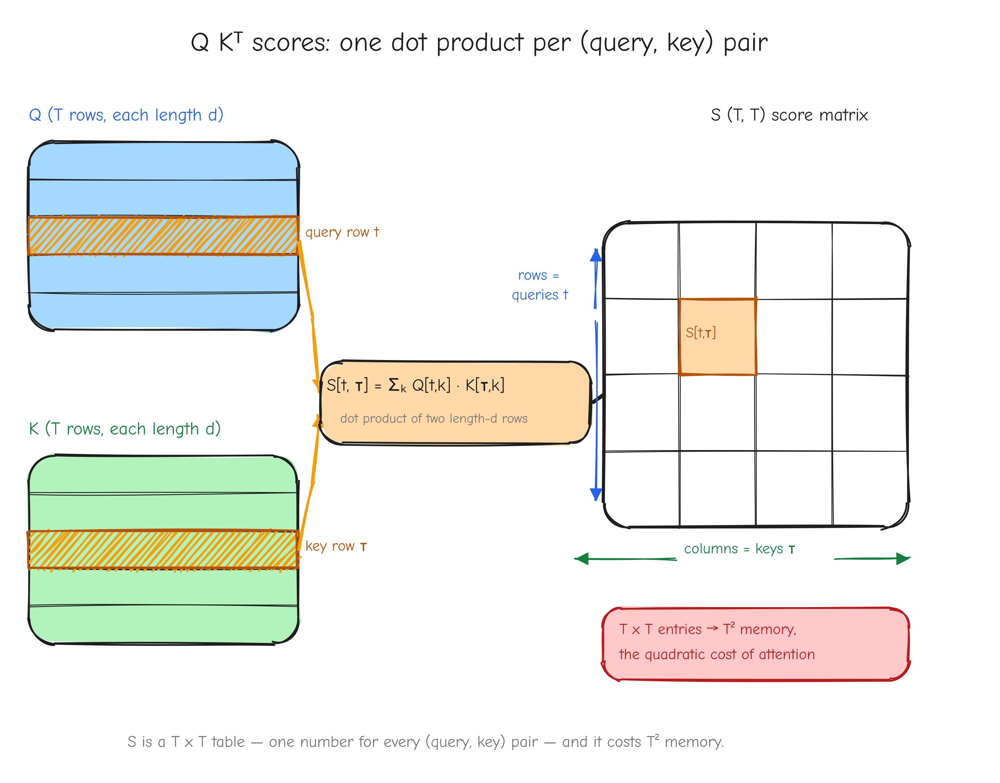
Q as T rows of length d and K as T rows of length d. Show S[t, tau] as the dot product of query row t with key row tau, landing in a T x T grid. Label the rows of S "queries" and the columns "keys". The takeaway: S is a T x T table, one number per (query, key) pair, and it costs T^2 memory.Given. Upstream gradient dS, shape (B, H, T, T).
Derive. Two steps: undo the scale, then undo the matmul.
Step 1, undo the scale. S = (1/sqrt(d)) * S_unscaled is a scalar scale with c = 1/sqrt(d). From Part 3, the backward of a scale multiplies the upstream by the same constant:
Step 2, derive dQ. Work in one (b, h) slice. By the chain rule,
Since S_unscaled[t, tau] = sum_{e'} Q[t, e'] K[tau, e'], the derivative of S_unscaled[t, tau] with respect to Q[a, e] is delta_{ta} K[tau, e]: the entry only depends on Q[a, e] when its query index t equals a. So
The free indices are a (query, axis -2) and e (head dim, axis -1). The summed index tau is the last axis of dS' and the second-to-last axis of K. That is the matmul dS' @ K:
Step 3, derive dK. Same move. The derivative of S_unscaled[t, tau] with respect to K[a, e] is delta_{tau a} Q[t, e], so
Now the summed index is t, and it sits at axis -2 of dS', not axis -1. A matmul contracts the last axis of its left operand. So we must transpose the last two axes of dS' first. Write dS'^T for that, with dS'^T[a, t] = dS'[t, a]. Then
Vectorized form. Copied from tests/ops.py, attention_scores:
def attention_scores(Q, K):
"""Item 16. S = Q K^T / sqrt(d), Q,K (B,H,T,d).
dS' = dS / sqrt(d) ; dQ = dS' @ K ; dK = dS'^T @ Q (transpose last two axes)."""
d = Q.shape[-1]
scale_c = 1.0 / np.sqrt(d)
S = (Q @ K.transpose(0, 1, 3, 2)) * scale_c
def bwd(dS):
dSp = dS * scale_c
dQ = dSp @ K
dK = dSp.transpose(0, 1, 3, 2) @ Q
return {'Q': dQ, 'K': dK}
return S, bwd
Shape check. dSp is (B,H,T,T), same as S. dQ = dSp @ K is (B,H,T,T) @ (B,H,T,d) = (B,H,T,d), matches Q. dK = dSp^T @ Q is (B,H,T,T) @ (B,H,T,d) = (B,H,T,d), matches K.
Sanity case. B=1, H=1, T=2, d=2, suppress b, h. Let
Forward: K^T = [[1,3],[2,4]], S_unscaled = Q @ K^T = [[1,3],[2,4]], S = (1/sqrt2) [[1,3],[2,4]]. Check S_unscaled[0,1] = Q[0,:] . K[1,:] = 1*3 + 0*4 = 3. Correct.
Backward: let dS = [[1,0],[0,1]], so dS' = (1/sqrt2) [[1,0],[0,1]]. Then dQ = dS' @ K = (1/sqrt2) [[1,2],[3,4]] and dK = dS'^T @ Q = (1/sqrt2) [[1,0],[0,1]]. Direct check of dK[0,0]: from dK[a,e] = sum_t dS'[t,a] Q[t,e] with a=0, e=0, that is dS'[0,0] Q[0,0] + dS'[1,0] Q[1,0] = (1/sqrt2)(1) + 0 = 1/sqrt2. Correct.
16c. Causal mask
Causal mask: S_masked = S + mask
Forward. Add a constant mask matrix that is zero on and below the diagonal and -inf above it:
In practice -inf is a large negative constant such as -1e9. M is a fixed constant, not a parameter, broadcast over (B, H). The entry M[t, tau] = -inf for tau > t says query t is not allowed to attend to a key in its future.
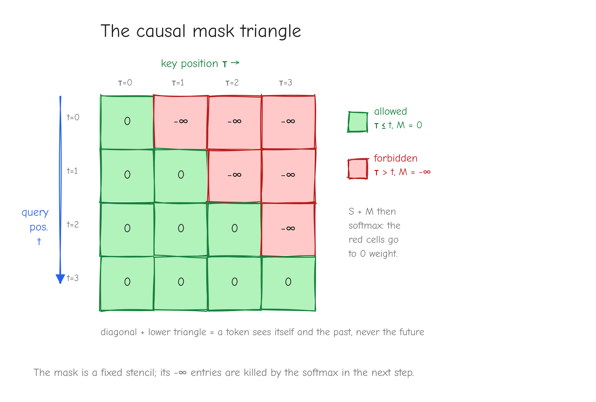
T x T grid. Shade the lower triangle and diagonal green (allowed, M = 0), shade the strict upper triangle red (forbidden, M = -inf). Label rows "query position t", columns "key position tau". The takeaway: the mask is a fixed stencil, and the red entries get killed by the softmax in the next step.Given. Upstream gradient dS_masked, shape (B, H, T, T).
Derive. S_masked = S + M with M constant. Addition of a constant has derivative 1 with respect to S, so the gradient passes straight through:
M is constant, so it has no gradient. The backward is the identity.
That is the mechanical answer, but it raises a fair question: if dS = dS_masked everywhere, what stops a nonzero gradient from flowing into a forbidden (t, tau) position? Nothing, at this op. The masked entries get zero gradient, but the zeroing happens one step downstream, in the softmax, not here. Here is why, plainly. Take a future position (t, tau) with tau > t. After adding M[t, tau] = -inf, the softmax probability there is P[t, tau] = exp(-inf) / (...) = 0. The softmax VJP (item 8 from Part 4, applied per query row) is
The whole expression is multiplied by P[t, tau], which is 0 at every future position. So dS_masked[t, tau] = 0 there, no matter what garbage value dP carries. Then dS = dS_masked carries that exact zero back to S. The + M term has derivative 1 and does nothing; the softmax Jacobian is what kills the future entries. Net effect: in the backward pass the causal mask is a no-op, and the upper-triangular entries of dS are already zero as a consequence, with no special-casing needed.
Vectorized form. Copied from tests/ops.py, causal_mask:
def causal_mask(S, fill):
"""Item 17. S_masked = S + M, M[t,tau] = fill for tau > t (future), else 0.
Backward is the identity: dS = dS_masked."""
T = S.shape[-1]
M = np.triu(np.full((T, T), fill, dtype=np.float64), k=1)
S_masked = S + M
def bwd(dS_masked):
return {'S': dS_masked.copy()}
return S_masked, bwd
Shape check. dS has shape (B, H, T, T), the shape of S. Correct.
Sanity case. T=2, one (T, T) slice. S = [[0.5, 1.2], [0.3, 0.7]], mask M = [[0, -inf], [0, 0]], so S_masked = [[0.5, -inf], [0.3, 0.7]]. Row 0 softmax: P[0,:] = softmax([0.5, -inf]) = [1, 0]. Suppose downstream hands back dP = [[2, 5], [1, 1]], where the 5 at the masked spot [0,1] is arbitrary. Row 0 VJP: dP[0,:] . P[0,:] = 2*1 + 5*0 = 2. Then dS_masked[0,0] = P[0,0](dP[0,0] - 2) = 1*(2-2) = 0 and dS_masked[0,1] = P[0,1](dP[0,1] - 2) = 0*(5-2) = 0. The masked entry is 0 regardless of the garbage 5. Then dS = dS_masked, so dS[0,1] = 0 automatically.
16d. Softmax along the key dim
Softmax along the key dim
Forward. Apply softmax along the last axis, the key axis, independently for each (b, h, t) slice. Each slice is one query row of length T:
S_masked is (B, H, T, T), P is (B, H, T, T), and each row P[b, h, t, :] sums to 1.
Given. Upstream gradient dP, shape (B, H, T, T).
Derive. Nothing new. This is the standalone softmax VJP from Part 4, the loss layer, applied per row over the last axis. From Part 4, for p = softmax(x), the backward is dx = p ⊙ (dp - (dp . p)) where dp . p is the per-row sum. With the softmax axis being the last axis:
The keepdims sum produces (B, H, T, 1), which broadcasts back against (B, H, T, T): the same scalar is subtracted from every key entry of a given query row.
Vectorized form. Copied from tests/ops.py, softmax_op, which sdpa_causal reuses for this step:
def softmax_op(x):
"""Item 8. p = softmax(x) over the last axis (numerically stable).
dx = p (.) (dp - (dp . p)), the per-row dot taken over the last axis."""
z = x - x.max(axis=-1, keepdims=True)
with np.errstate(under='ignore'):
e = np.exp(z)
p = e / e.sum(axis=-1, keepdims=True)
def bwd(dp):
dx = p * (dp - np.sum(dp * p, axis=-1, keepdims=True))
return {'x': dx}
return p, bwd
Shape check. P is (B,H,T,T), the keepdims sum is (B,H,T,1), broadcast subtract gives (B,H,T,T), element-wise multiply by P gives (B,H,T,T), the shape of S_masked. Correct.
Sanity case. Worked in full in Part 4, the loss layer. The one thing to confirm here is that nothing changes when the softmax lives inside a four-dimensional tensor: the op acts on the last axis only, the leading (B, H, T) are independent rows, and the per-row VJP from Part 4 applies unchanged to each.
16e. Attention output
Attention output: O = P V
Forward. A batched matmul mixing the value vectors by the attention weights:
P is (B, H, T, T) with query axis -2 and key axis -1. V is (B, H, T, d) with key axis -2 and head-dim axis -1. So O = P @ V is (B, H, T, d). In one (b, h) slice, with t query, tau key, e head dim:
The contraction is over the key index tau, the last axis of P and the second-to-last axis of V. That is P @ V.
Given. Upstream gradient dO, shape (B, H, T, d).
Derive. Same matmul-backward pattern as item 16b.
dP. The derivative of O[t, e] with respect to P[a, c] is delta_{ta} V[c, e], so
Free indices a (query) and c (key). The summed index e is the last axis of both dO and V. It is already last in dO, so dO is the left operand untouched; V must be transposed on its last two axes so e becomes a row, V^T[e, c] = V[c, e], shape (B, H, d, T). Then
dV. The derivative of O[t, e] with respect to V[a, c] is delta_{ec} P[t, a], so
Free indices a (key) and c (head dim). The summed index t is axis -2 of both P and dO. To make P the left operand we transpose its last two axes, P^T[a, t] = P[t, a]. Then
This is the mirror image of item 16b: dP transposes V, dV transposes P.
Vectorized form. Copied from tests/ops.py, attention_output:
def attention_output(P, V):
"""Item 19. O = P V, P (B,H,T,T), V (B,H,T,d).
dP = dO @ V^T ; dV = P^T @ dO (transpose last two axes)."""
O = P @ V
def bwd(dO):
dP = dO @ V.transpose(0, 1, 3, 2)
dV = P.transpose(0, 1, 3, 2) @ dO
return {'P': dP, 'V': dV}
return O, bwd
Shape check. dP = dO @ V^T is (B,H,T,d) @ (B,H,d,T) = (B,H,T,T), matches P. dV = P^T @ dO is (B,H,T,T) @ (B,H,T,d) = (B,H,T,d), matches V.
Sanity case. T=2, d=2, suppress b, h. P = [[1, 0], [0.4, 0.6]], V = [[2, 1], [0, 3]]. Forward: O[0,:] = 1*[2,1] + 0*[0,3] = [2,1], O[1,:] = 0.4*[2,1] + 0.6*[0,3] = [0.8, 2.2]. Backward with dO = [[1,2],[3,4]]: dP = dO @ V^T with V^T = [[2,0],[1,3]] gives dP = [[4,6],[10,12]]. Direct check dP[1,0] = sum_e dO[1,e] V[0,e] = 3*2 + 4*1 = 10. Correct. dV = P^T @ dO with P^T = [[1, 0.4],[0, 0.6]] gives dV = [[2.2, 3.6],[1.8, 2.4]]. Direct check dV[0,0] = sum_t P[t,0] dO[t,0] = 1*1 + 0.4*3 = 2.2. Correct.
16f. Attention end to end
This is the page you stare at when attention backward is wrong. It chains items 16a through 16e (plus item 16g, the output projection) in forward order, then runs the whole thing in reverse with the shape at every arrow. Nothing here is new math; the value is the order and the shapes.
The forward pipeline, top to bottom:
| step | operation | output shape |
|---|---|---|
| 15a | qkv = x @ W_attn + b_attn |
(B,T,3D) |
| 15b | split last axis into thirds | Q_flat, K_flat, V_flat each (B,T,D) |
| 15c | reshape D -> (H,d) |
(B,T,H,d) |
| 15d | transpose (0,2,1,3) |
Q, K, V each (B,H,T,d) |
| 16a | S_unscaled = Q @ K^T |
(B,H,T,T) |
| 16b | scale S = S_unscaled / sqrt(d) |
(B,H,T,T) |
| 17 | S_masked = S + M |
(B,H,T,T) |
| 18 | P = softmax(S_masked) along axis -1 |
(B,H,T,T) |
| 19 | O = P @ V |
(B,H,T,d) |
| 21a | transpose (0,2,1,3) |
(B,T,H,d) |
| 21b | reshape (H,d) -> D |
O_merged (B,T,D) |
| 21c | Y = O_merged @ W_proj + b_proj |
(B,T,D) |
The backward pipeline, bottom to top, starting from dY of shape (B,T,D):
| step | operation | output grad shape |
|---|---|---|
| 21c inv | dO_merged = dY @ W_proj^T; dW_proj = O_merged^T dY; db_proj = sum_{B,T} dY |
dO_merged (B,T,D) |
| 21b inv | reshape D -> (H,d) |
(B,T,H,d) |
| 21a inv | transpose (0,2,1,3) |
dO (B,H,T,d) |
| 19 inv | dP = dO @ V^T; dV = P^T @ dO |
dP (B,H,T,T), dV (B,H,T,d) |
| 18 inv | dS_masked = P ⊙ (dP - sum(dP⊙P, axis=-1, keepdims)) |
dS_masked (B,H,T,T) |
| 17 inv | dS = dS_masked (identity, future entries already 0) |
dS (B,H,T,T) |
| 16b inv | dS' = dS / sqrt(d) |
dS' (B,H,T,T) |
| 16a inv | dQ = dS' @ K; dK = dS'^T @ Q |
dQ, dK each (B,H,T,d) |
| 15d inv | transpose (0,2,1,3) each of dQ, dK, dV |
each (B,T,H,d) |
| 15c inv | reshape (H,d) -> D each |
dQ_flat, dK_flat, dV_flat each (B,T,D) |
| 15b inv | concat along last axis | dqkv (B,T,3D) |
| 15a inv | dx = dqkv @ W_attn^T; dW_attn = x^T dqkv; db_attn = sum_{B,T} dqkv |
dx (B,T,D) |
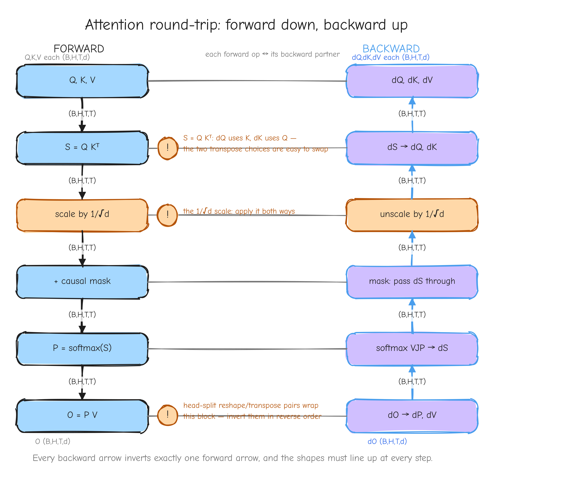
1/sqrt(d) scale (undone at 16b inv, between mask and matmul), the two transpose choices at 16a inv and 19 inv, and the head-split reshape/transpose pairs. The takeaway: every backward arrow is the inverse of exactly one forward arrow, and the shapes must line up at every step.Four placement notes that catch people:
-
The
1/sqrt(d)scale. Forward, the scale is applied afterQ @ K^Tand before the mask. Backward, therefore, the scale is undone after the mask backward and before theQ @ K^Tbackward:dS' = dS / sqrt(d), thendQ = dS' @ K,dK = dS'^T @ Q. The factor hits bothdQanddKautomatically because both are built fromdS'. Forgetting it is a common bug. -
The transpose choices. In each backward matmul, exactly one operand is transposed on its last two axes. At 16a inv:
dQ = dS' @ K(no transpose),dK = dS'^T @ Q(transposedS'). At 19 inv:dP = dO @ V^T(transposeV),dV = P^T @ dO(transposeP). Get these backward and the shapes still sometimes match, which is why this is a real trap. -
The reshape/transpose pairs are exact inverses. Head split is reshape then transpose
(0,2,1,3); its backward is transpose(0,2,1,3)then reshape back. The permutation(0,2,1,3)swaps axes 1 and 2, so it is its own inverse. -
Q, K, V all come from the same
x. Their gradientsdQ_flat, dK_flat, dV_flatare concatenated, not summed, intodqkv. The summation back intodxhappens implicitly inside the single matmuldqkv @ W_attn^T, becauseW_attn^Tmixes all3Dcolumns back down toD.
Vectorized form. The composition is sdpa_causal plus mha, copied from tests/ops.py:
def sdpa_causal(Q, K, V):
"""Item 20. Scaled dot-product causal self-attention core, composed from
the four verified primitives."""
S, bw_scores = attention_scores(Q, K)
Sm, bw_mask = causal_mask(S, fill=-1e9)
P, bw_softmax = softmax_op(Sm)
O, bw_out = attention_output(P, V)
def bwd(dO):
g_out = bw_out(dO) # {'P', 'V'}
g_sm = bw_softmax(g_out['P']) # {'x': dSm}
g_mask = bw_mask(g_sm['x']) # {'S': dS}
g_sc = bw_scores(g_mask['S']) # {'Q', 'K'}
return {'Q': g_sc['Q'], 'K': g_sc['K'], 'V': g_out['V']}
return O, bwd
The bwd here is the right column of the table, lines 19 inv through 16a inv, written as four function calls in reverse order. Each call is one verified primitive. That is the whole point of building attention from pieces: once each piece is gradient-checked, the composition is correct by construction, and you only have to get the call order right.
Shape check. Every row of the backward table lists its output shape. The end-to-end invariant: dx is (B,T,D), the shape of x, and the five parameter gradients dW_attn (D,3D), db_attn (3D,), dW_proj (D,D), db_proj (D,) each match their parameter.
Sanity case. Attention end to end is gradient-checked numerically in Part 7, Verifying the math, with T=4, H=2, d=8. The per-piece sanity cases are in items 16a, 16b, 16e above; the composition does not introduce new arithmetic to check by hand, only new ordering, which the table above pins down.
16g. Output projection and merge heads
Output projection and merge heads
Forward. The inverse of the head split, then one more affine matmul.
W_proj is (D, D), b_proj is (D,), Y is (B, T, D).
Given. Upstream gradient dY, shape (B, T, D).
Derive. Two steps, both already known.
Step A, undo the affine projection. The affine matmul backward from Part 3, leading (B, T) flattened:
Step B, undo the head merge. The merge was transpose (0,2,1,3) then reshape (H,d) -> D. Reverse it: reshape D -> (H,d), then transpose (0,2,1,3).
Vectorized form. From tests/ops.py, mha, the output-projection half of bwd:
dO_merged = dY @ W_proj.T # (B,T,D)
dW_proj = O_merged.reshape(-1, D).T @ dY.reshape(-1, D) # (D,D)
db_proj = dY.reshape(-1, D).sum(axis=0) # (D,)
dO = dO_merged.reshape(B, T, H, d).transpose(0, 2, 1, 3) # (B,H,T,d)
Shape check. dO_merged is (B,T,D) @ (D,D) = (B,T,D), matches O_merged. dW_proj is (D,BT) @ (BT,D) = (D,D), matches W_proj. db_proj is (D,), matches b_proj. dO is reshape then transpose to (B,H,T,d), matches O.
Sanity case. B=1, T=1, D=2, H=2, d=1. Let O = [head0=5, head1=7], so O_merged = [[[5, 7]]]. W_proj = [[1,2],[3,4]], b_proj = [0,0]. Forward: Y = [5,7] @ W_proj = [26, 38]. Backward with dY = [[[1,1]]]: dO_merged = dY @ W_proj^T = [1,1] @ [[1,3],[2,4]] = [3, 7]. Un-merge routes 3 back to head 0 and 7 to head 1, matching the forward layout. dW_proj = O_merged^T @ dY = [[5,5],[7,7]]. Cross-check dO_merged[0] = sum_j dY_j W_{0j} = 1*1 + 1*2 = 3. Correct.
22. Transformer block
Transformer block (pre-LN)
Forward. The nanoGPT pre-LayerNorm block. Input x of shape (B, T, D):
Every line is an op we already derived. LN_1 and LN_2 are LayerNorm (Part 5, normalization). Attn is the whole of Tier 6 above. MLP(c) = Linear_2(GeLU(Linear_1(c))) with Linear_1: D -> F, Linear_2: F -> D, F = 4D, all from Part 3. The block has no new math. It has one new structure: the residual connection, and that is where people lose a factor.
The residual rule. Consider y = x + f(x), where f is any sub-network. Both branches depend on the same x. By the multivariate chain rule, treat the two occurrences of x as two variables, x_skip (the identity path) and x_fn (the input to f), constrained equal. A variable used in two places gets two gradients that add:
For the skip path, y = x_skip + f(.), the derivative of y with respect to x_skip is the identity, so the first term is just dy. For the function path, the second term is f.backward(dy), the same dy pushed through f's backward.
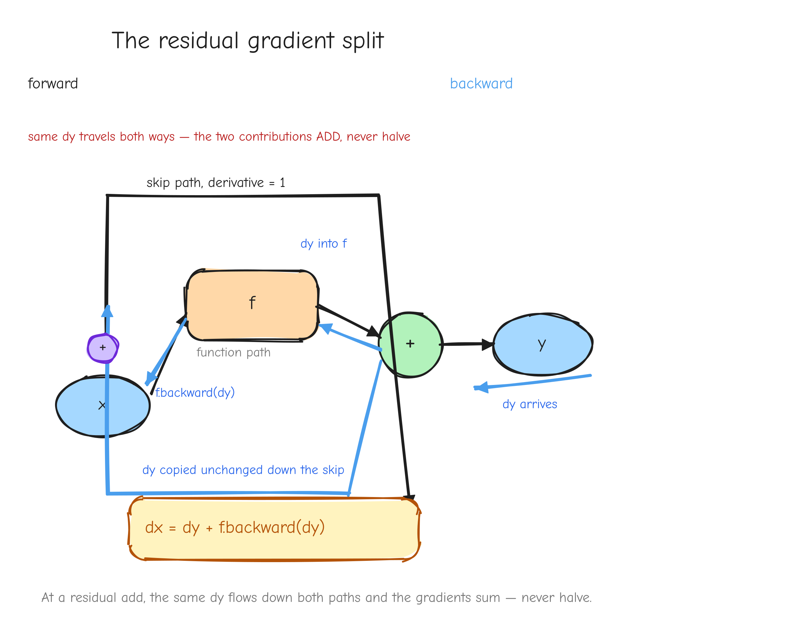
x fanning out into two arrows: one going straight up and over to a + node (label "skip, derivative 1"), one going into a box f (label "function path"). The output y comes out of the +. Then draw the backward pass in a contrasting color: dy arriving at +, copying unchanged down both arrows, dy going straight back to x, and f.backward(dy) coming out of the f box back to x. Show the two arrowheads meeting at x with a + between them: dx = dy + f.backward(dy). The takeaway: same dy both ways, gradients add, never halve.Backward, ordered call sequence for one block. Given upstream dy of shape (B, T, D):
- Residual 2 (
y = r + m): the gradient copies to both addends. Setdm := dyanddr := dy. Thedrhere is a running accumulator; more is added in step 4. - MLP branch (
m = MLP(c)), backward in reverse of the forwardLinear_1 -> GeLU -> Linear_2:Linear_2backward: fromdm, produced(GeLU out)of shape(B,T,F), plusdW_2,db_2.GeLUbackward: fromd(GeLU out), produced(Linear_1 out)of shape(B,T,F), element-wise.Linear_1backward: fromd(Linear_1 out), producedcof shape(B,T,D), plusdW_1,db_1.
- LN2 backward: from
dc, producedr_from_LN2of shape(B,T,D), plusdgamma_2,dbeta_2. - Accumulate into
r:dr += dr_from_LN2. Nowdrholds the full gradient with respect tor: the skip term from step 1 plus the MLP-branch term. - Residual 1 (
r = x + u): copydrto both addends. Setdu := dranddx := dr. Thedxhere is a running accumulator. - Attn branch (
u = Attn(a)): the whole Tier 6 backward fromdu, producingdaof shape(B,T,D), plus all attention parameter grads. - LN1 backward: from
da, producedx_from_LN1of shape(B,T,D), plusdgamma_1,dbeta_1. - Accumulate into
x:dx += dx_from_LN1. The finaldxof shape(B,T,D)is the block's input gradient.
The two accumulation points are steps 4 and 8. Each is a residual junction: initialize the accumulator (dr, dx) from the skip copy before running the branch backward, then += the branch result.
Vectorized form. Copied from tests/ops.py, transformer_block:
def transformer_block(x, ln1_g, ln1_b, W_attn, b_attn, W_proj, b_proj,
ln2_g, ln2_b, W1, mlp_b1, W2, mlp_b2, H, eps=1e-5):
a, bw_ln1 = layernorm(x, ln1_g, ln1_b, eps)
u, bw_mha = mha(a, W_attn, b_attn, W_proj, b_proj, H)
r = x + u
c, bw_ln2 = layernorm(r, ln2_g, ln2_b, eps)
h1, bw_lin1 = linear(c, W1, mlp_b1)
h2, bw_gelu = gelu(h1)
m, bw_lin2 = linear(h2, W2, mlp_b2)
y = r + m
def bwd(dy):
# residual 2: y = r + m -> dm = dy, and dy also skips around to r
g_lin2 = bw_lin2(dy) # {'x': dh2, 'W': dW2, 'b': dmlp_b2}
g_gelu = bw_gelu(g_lin2['x']) # {'x': dh1}
g_lin1 = bw_lin1(g_gelu['x']) # {'x': dc, 'W': dW1, 'b': dmlp_b1}
g_ln2 = bw_ln2(g_lin1['x']) # {'x','gamma','beta'}
dr = dy + g_ln2['x'] # residual-2 skip + MLP branch
# residual 1: r = x + u -> du = dr, and dr also skips around to x
g_mha = bw_mha(dr) # {'x': da, 'W_attn',...}
g_ln1 = bw_ln1(g_mha['x']) # {'x','gamma','beta'}
dx = dr + g_ln1['x'] # residual-1 skip + attention branch
return {'x': dx,
'ln1_g': g_ln1['gamma'], 'ln1_b': g_ln1['beta'],
'W_attn': g_mha['W_attn'], 'b_attn': g_mha['b_attn'],
'W_proj': g_mha['W_proj'], 'b_proj': g_mha['b_proj'],
'ln2_g': g_ln2['gamma'], 'ln2_b': g_ln2['beta'],
'W1': g_lin1['W'], 'mlp_b1': g_lin1['b'],
'W2': g_lin2['W'], 'mlp_b2': g_lin2['b']}
return y, bwd
The two lines dr = dy + g_ln2['x'] and dx = dr + g_ln1['x'] are the residual rule, twice. The dy + and dr + are the skip terms. Drop either + and the block backward is wrong.
Shape check. dx is (B,T,D), matches x. The twelve parameter gradients each match their parameter: ln1_g, ln1_b, ln2_g, ln2_b are (D,), W_attn is (D,3D), b_attn is (3D,), W_proj is (D,D), b_proj is (D,), W1 is (D,F), mlp_b1 is (F,), W2 is (F,D), mlp_b2 is (D,).
Sanity case. The block introduces no new arithmetic, only the residual structure. The cleanest hand-check of that structure: y = x + x (so f is the identity). Then dy flows around the skip as dy and through f as dy, and dx = dy + dy = 2 dy. The project's accumulation tests confirm exactly this: y = x + x gives dx = 2 (see tests/step2_results.md). The full transformer block is gradient-checked as a composite in Part 7.
23. Full model backward, top to bottom
Full model backward (implementation blueprint)
This is the blueprint Part 10, Assembling GPT-2, implements against. It is one ordered list of backward calls for the whole model. No new math; the value is the order and the two weight-tying accumulation points.
Forward pass. Input token ids of shape (B, T):
Backward pass, reverse order. Maintain a grads dict. The buffer dW_e is touched twice, the two weight-tying accumulation points.
- Fused softmax plus cross-entropy (Part 4). No incoming grad,
Lis the loss.dlogits = (softmax(logits) - onehot(targets)) / (B*T), shape(B,T,V). The1/(BT)matches the mean reduction in the forward. - Unembedding backward (Part 5, weight tying). From
dlogits:dx_f = dlogits @ W_eof shape(B,T,D), anddW_e = dlogits_flat^T @ x_f_flatof shape(V,D). Weight-tying accumulation point 1: initialize thedW_ebuffer here. - Final LayerNorm backward (Part 5). From
dx_f:dx_N = LN_final.backward(dx_f)of shape(B,T,D), plusdgamma_f,dbeta_fof shape(D,). - Transformer blocks, reversed.
for l in [N, N-1, ..., 1]:calldx_{l-1} = Block_l.backward(dx_l), each the full item-22 sequence, plus that block's parameter grads. After the loop,dx_0is the gradient with respect to the embedding sum. - Split the embedding-sum gradient.
x_0 = e_tok + e_pos, an element-wise add, so the gradient copies to both:de_tok = dx_0andde_pos = dx_0, each(B,T,D). - Positional embedding backward (Part 5). From
de_pos, sum over the batch into the used rows:dW_p[0:T] = de_pos.sum(axis=0), rows>= Tstay zero. - Token embedding backward (Part 5). From
de_tok, scatter-add into the existingdW_ebuffer:np.add.at(dW_e, ids, de_tok). Weight-tying accumulation point 2: this must+=into the buffer from step 2, never re-allocate. FinaldW_e = dW_e_head + dW_e_emb.
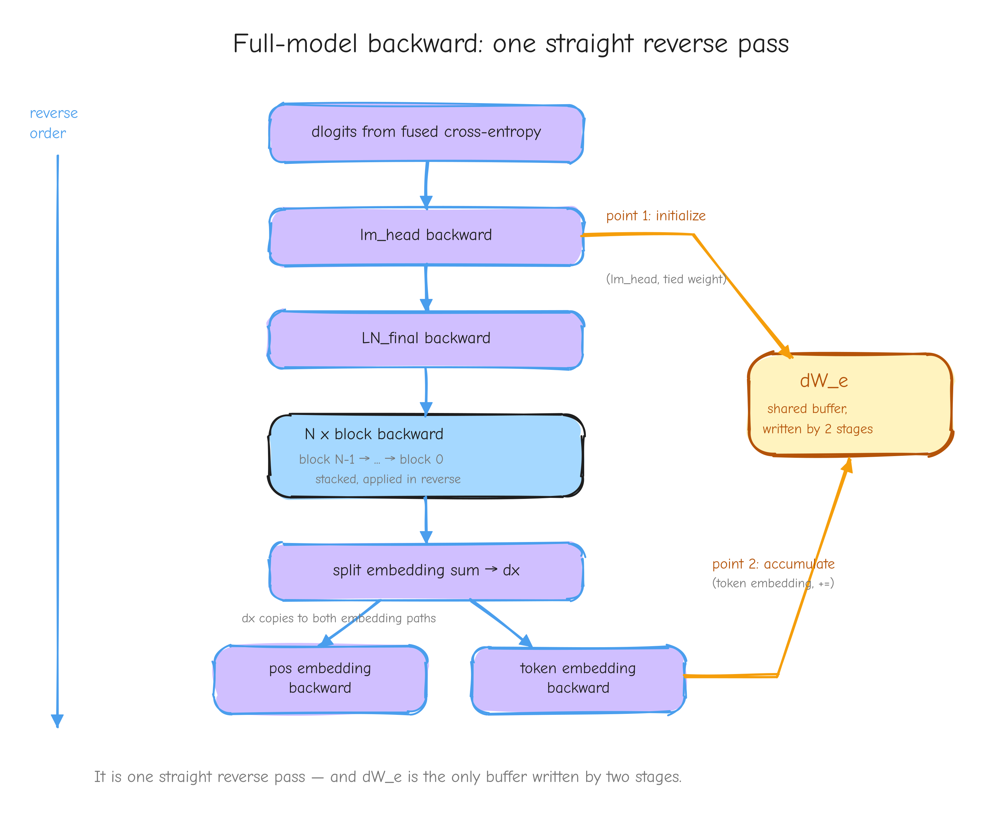
dlogits from fused CE, lm_head backward, LN_final backward, then a stack of N block-backward boxes, then split embedding sum, then two parallel boxes pos embedding backward and token embedding backward. Draw the dW_e buffer as a node on the side, with two arrows into it: one from lm_head backward labeled "initialize, point 1", one from token embedding backward labeled "accumulate, point 2". The takeaway: it is one straight reverse pass, and dW_e is the only buffer written by two different stages.Vectorized form. Copied from tests/ops.py, tiny_gpt, the bwd function:
def bwd(dL):
g_ce = bw_ce(dL)
dlogits = g_ce['logits'] # (B,T,V)
# tied lm_head backward -- INITIALISE dW_e here
dxf = dlogits @ W_e
dW_e = dlogits.reshape(-1, V).T @ xf.reshape(-1, D) # weight-tie #1
g_lnf = bw_lnf(dxf)
dx = g_lnf['x']
grads = {'lnf_g': g_lnf['gamma'], 'lnf_b': g_lnf['beta']}
for i in reversed(range(n_blocks)):
g_block = block_bwds[i](dx)
dx = g_block['x']
for pn in BLOCK_PARAMS:
grads[f'b{i}_{pn}'] = g_block[pn]
# embedding sum: x = e_tok + e_pos -> gradient copies to both
de_tok = dx
de_pos = dx
dW_p = np.zeros_like(W_p)
dW_p[:T] = de_pos.sum(axis=0)
# token-embedding scatter-add -- ACCUMULATE into the same dW_e buffer
np.add.at(dW_e, ids, de_tok) # weight-tie #2
grads['W_e'] = dW_e
grads['W_p'] = dW_p
return grads
Shape check. The output is the grads dict: dW_e is (V,D), dW_p is (T_max,D), dgamma_f and dbeta_f are (D,), and each block contributes its twelve parameter grads. The internal dx carries (B,T,D) from the loss all the way down to the embedding sum.
Sanity case. No new arithmetic to hand-check; this is the assembly of verified pieces. The full assembled model is what Part 10 verifies against PyTorch.
Your turn
Part 7: Verifying the math, numerical gradient checking
We have derived 24 operations by hand across Parts 3 to 6. Each derivation produced a vectorized NumPy formula for the backward pass. A hand derivation can be wrong: a dropped factor, a transposed axis, a sum over the wrong dimension. Before we build an autograd engine, layers, and a full model on top of these formulas, we prove each one is correct. The tool is a numerical gradient check: compare every analytic gradient against a finite-difference approximation of the same derivative. This part shows how the check works, what it catches, and the discipline that makes it useful.
The idea of a finite-difference check
A derivative is the limit of a difference quotient. For a scalar function ,
We cannot take the limit on a computer, but we can pick a small and evaluate the quotient. That gives a number we can compare against the analytic formula. If the two agree, the formula is almost certainly right. If they disagree by a wide margin, the formula is wrong.
There are two ways to form the quotient. The forward difference uses and . The central difference uses and :
The central difference is more accurate. Expand as a Taylor series around :
Subtract the second from the first. The terms cancel, and so do the terms, because they have the same sign in both expansions. What survives is . Divide by :
The error is order . For the forward difference the term does not cancel, so its error is order . With , an order error is around while an order error is around . The central difference costs one extra function evaluation per element and buys six orders of magnitude of accuracy.
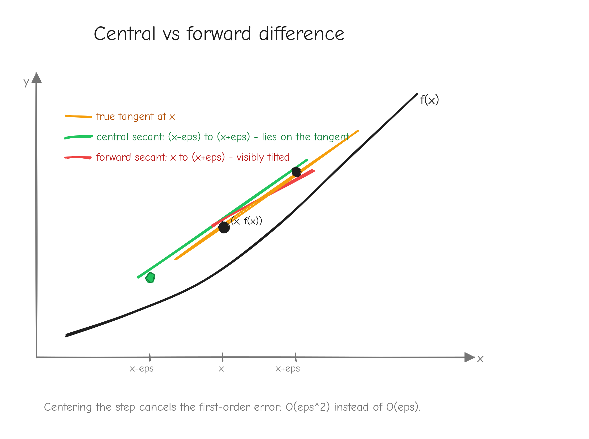
There is a floor on how small can be. Floating point arithmetic has finite precision, so and are each computed with a rounding error of about relative to their magnitude. When you subtract two nearly equal numbers, those rounding errors do not shrink, but the difference does, so the relative error of the difference blows up. Shrinking reduces the truncation error (the term) but amplifies this cancellation error. The harness uses , which sits near the sweet spot, and does every computation in float64 so the rounding error stays at the level instead of the level you would get from float32.
The verification pattern, per op
Each op is a function from inputs to an output. We cannot directly compare a gradient tensor against a finite difference of a tensor-valued function: a finite difference perturbs one scalar at a time and measures the change in one scalar. So we collapse the op's output to a scalar first.
Pick a random tensor upstream the same shape as the output, and define the scalar loss
This is exactly what the op's backward_fn expects: upstream is the gradient flowing in, and backward_fn(upstream) returns the gradient of L with respect to each input. Using a random upstream rather than all ones matters. An all-ones upstream would only test the sum of each gradient row; a random one tests every component independently, because a wrong entry in the analytic gradient would have to be cancelled by a coincidence in upstream to escape detection.
Here is the core of the harness, from tests/gradcheck.py:
def gradcheck_op(name, item, op, inputs, diff_names, eps=EPS):
"""Finite-difference check `op` w.r.t. every input named in `diff_names`."""
out, backward_fn = op(**inputs)
out = np.asarray(out, dtype=np.float64)
if out.ndim == 0:
upstream = np.asarray(np.random.randn(), dtype=np.float64)
else:
upstream = np.random.randn(*out.shape).astype(np.float64)
analytic_grads = backward_fn(upstream)
rows = []
for nm in diff_names:
x = inputs[nm]
if not isinstance(x, np.ndarray) or x.dtype != np.float64:
raise TypeError(f"{name}/{nm}: differentiable input must be a float64 array")
analytic = np.asarray(analytic_grads[nm], dtype=np.float64)
if analytic.shape != x.shape:
raise ValueError(
f"{name}/{nm}: analytic grad shape {analytic.shape} != input shape {x.shape}")
numeric = np.zeros_like(x)
for idx in np.ndindex(*x.shape):
orig = x[idx]
x[idx] = orig + eps
L_plus = float(np.sum(np.asarray(op(**inputs)[0], dtype=np.float64) * upstream))
x[idx] = orig - eps
L_minus = float(np.sum(np.asarray(op(**inputs)[0], dtype=np.float64) * upstream))
x[idx] = orig
numeric[idx] = (L_plus - L_minus) / (2.0 * eps)
abs_err, rel_err, passed = _compare(analytic, numeric)
rows.append(dict(name=name, item=item, input=nm, shape=tuple(x.shape),
abs_err=abs_err, rel_err=rel_err, passed=passed))
return rows
Read the inner loop carefully. np.ndindex(*x.shape) walks every element of the input tensor. For each element it saves the original value, bumps it up by eps, runs the forward pass, and forms L_plus. Then it bumps the same element down by eps, runs the forward pass again, and forms L_minus. It restores the original value so the next iteration starts clean. The central-difference quotient (L_plus - L_minus) / (2.0 * eps) is the numeric gradient for that one element. After the loop, numeric is a full tensor the same shape as the input, built one element at a time.
Notice the shape assertion before the loop. If backward_fn returns a gradient whose shape does not match the input, the check stops immediately. Per the notation convention from Part 2, dX always has the same shape as X. A shape mismatch is a bug on its own, and catching it here is cheaper than catching it later inside the autograd graph.
The comparison itself is in _compare:
def _compare(analytic, numeric):
a = np.asarray(analytic, dtype=np.float64)
n = np.asarray(numeric, dtype=np.float64)
diff = np.abs(a - n)
denom = np.maximum(np.abs(a), np.abs(n))
elem_ok = (diff < ATOL) | (diff < RTOL * denom)
passed = bool(np.all(elem_ok))
max_abs = float(diff.max())
big = denom > _REL_FLOOR
max_rel = float((diff[big] / denom[big]).max()) if np.any(big) else 0.0
return max_abs, max_rel, passed
Each element passes if it agrees either absolutely or relatively: |a - n| < ATOL or |a - n| / max(|a|, |n|) < RTOL. The harness uses RTOL = 1e-5 and ATOL = 1e-7. The relative gate is the one that matters for normal gradients. The absolute gate exists because some gradients are exactly zero or sit below the finite-difference noise floor of about 2e-8 for these ops. For a gradient that is genuinely zero, a relative error divides noise by noise and means nothing, so the absolute gate catches it instead. This is the same combined criterion np.allclose and torch.autograd.gradcheck use.
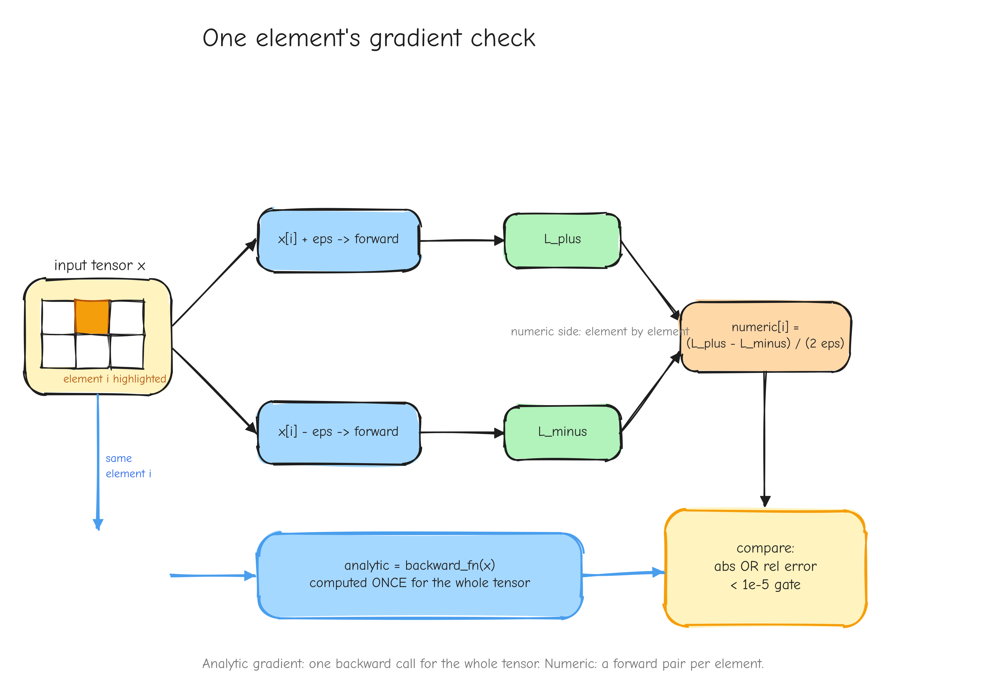
x[i] + eps and x[i] - eps, each running through the forward pass to produce L_plus and L_minus. Box 3: combine into numeric[i] = (L_plus - L_minus) / (2 eps). Box 4: the analytic gradient from backward_fn, with the same element highlighted. Box 5: compare the two with the combined abs-or-rel criterion. The reader should see that the analytic side is computed once for the whole tensor while the numeric side is computed element by element.The (output, backward_fn) op structure
Every op in tests/ops.py follows one signature: forward(*inputs) -> (output, backward_fn). The forward computes the output and also returns a closure that, given the upstream gradient, computes the gradient with respect to each input. The closure captures whatever forward-pass values the backward pass needs. This (output, backward_fn) pair is the unit the harness tests.
Here is relu, the simplest case:
def relu(x):
"""Item 4a. Y = max(0, X). dX = 1[X > 0] (.) dY."""
Y = np.maximum(0.0, x)
mask = (x > 0.0)
def bwd(dY):
return {'x': mask * dY}
return Y, bwd
The forward computes Y and the boolean mask. The closure bwd captures mask and uses it: wherever the input was positive the gradient passes through, elsewhere it is zeroed. bwd returns a dict whose keys are exactly the differentiable input names, here just 'x', and whose values are the gradients, each the same shape as the corresponding input.
A larger op follows the identical pattern. Here is layernorm:
def layernorm(x, gamma, beta, eps):
D = x.shape[-1]
mu = x.mean(axis=-1, keepdims=True)
xc = x - mu
var = np.mean(xc * xc, axis=-1, keepdims=True)
s = np.sqrt(var + eps)
xhat = xc / s
y = gamma * xhat + beta
lead = tuple(range(x.ndim - 1))
def bwd(dy):
dgamma = np.sum(dy * xhat, axis=lead)
dbeta = np.sum(dy, axis=lead)
dxhat = gamma * dy
sum_dxhat = np.sum(dxhat, axis=-1, keepdims=True)
sum_dxhat_xhat = np.sum(dxhat * xhat, axis=-1, keepdims=True)
dx = (1.0 / (D * s)) * (D * dxhat - sum_dxhat - xhat * sum_dxhat_xhat)
return {'x': dx, 'gamma': dgamma, 'beta': dbeta}
return y, bwd
Same shape. The forward computes y and keeps the intermediate values xhat and s alive in the closure. bwd returns a dict with one entry per differentiable input: 'x', 'gamma', 'beta'. The harness does not care that the math inside bwd is more involved. It calls bwd(upstream), reads the three gradients, and finite-difference checks each one.
Because every op exposes the same interface, ops compose. sdpa_causal chains four primitives and its bwd runs their four closures in reverse. tiny_gpt composes the whole stack. The harness checks each composite the same way it checks relu, which is the point: if the primitives are verified and the composition rule is verified, the whole model is verified.
The gate
The discipline is stated in one rule: every op must pass the gradient check before anything is built on it. Do not proceed past a failing gate.
This is not bureaucracy. A wrong gradient does not announce itself. The forward pass still runs, the loss still goes down sometimes, the model still produces output. The bug shows up as training that is slightly worse than it should be, or unstable in a way you cannot trace, weeks after you wrote the broken line. By then the error is buried under a thousand other lines. Catching it the moment the op is written, against a finite-difference oracle that does not depend on your derivation being correct, is the only cheap time to catch it.
The harness writes its results to tests/gradcheck_results.md and exits zero only if every check passes. The result: 92 out of 92 gradient checks pass. That covers 25 standalone ops plus their per-input checks, from the warm-up primitives through the composites: scaled dot-product attention at T=4, H=2, d=8, the full multi-head attention module, a pre-LN transformer block, and a tiny GPT with weight tying. The largest relative error anywhere in the table is 1.07e-05 on a deep MLP weight inside the transformer block, still under the 1e-5 gate, and most entries are far smaller, in the 1e-9 to 1e-7 range.
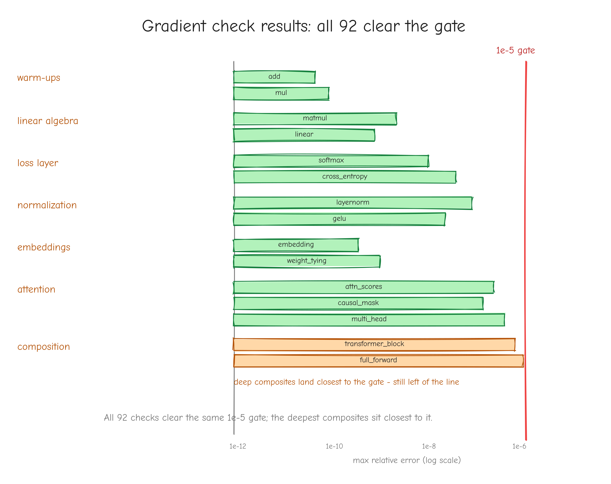
tests/gradcheck_results.md. Rows grouped by tier: warm-ups, linear algebra, loss layer, normalization, embeddings, attention, composition. Each row shows the op name and its max relative error as a small horizontal bar on a log scale, with the 1e-5 gate drawn as a vertical line. Every bar sits left of the line. The reader should see all 92 checks clearing the same gate, with the deep composites closest to it.The negative control
A check that always passes proves nothing. Maybe it has no teeth. Maybe the comparison is too loose, or the loss collapse hides the error, or the harness has a bug of its own. The way to prove the check works is to feed it something you know is broken and confirm it fails.
That broken thing is embedding_buggy. The correct embedding backward scatters the upstream gradient into a zero buffer with np.add.at:
def embedding(W_e, ids):
Y = W_e[ids]
def bwd(dY):
dW_e = np.zeros_like(W_e)
np.add.at(dW_e, ids, dY)
return {'W_e': dW_e}
return Y, bwd
The buggy version changes one line:
def embedding_buggy(W_e, ids):
"""Item 12 - NEGATIVE CONTROL. Identical forward, but the backward uses
`dW_e[ids] += dY`, which silently drops gradient when an id repeats."""
Y = W_e[ids]
def bwd(dY):
dW_e = np.zeros_like(W_e)
dW_e[ids] += dY # BUG: no accumulation on repeated ids
return {'W_e': dW_e}
return Y, bwd
The bug is dW_e[ids] += dY instead of np.add.at(dW_e, ids, dY). When ids contains a repeated token, fancy-indexed += does not accumulate. NumPy evaluates it as a read of dW_e[ids], an add, and a single write back, so the last occurrence of a repeated id wins and the earlier contributions are lost. If token 0 appears three times in a sequence, its gradient should be the sum of three upstream rows; the buggy version writes only one of them.
The test input for the embedding check is deliberately built so token 0 appears three times and token 2 appears twice:
def b_embedding_buggy():
return ops.embedding_buggy, {'W_e': np.random.randn(6, 4),
'ids': np.array([[0, 2, 0], [2, 1, 0]])}, ['W_e']
Run the check on embedding_buggy and it fails, with a max absolute error of 2.49 and a max relative error of 1.19 (tests/gradcheck_results.md). The correct embedding op, run on the same ids, passes with a max absolute error of 1.98e-10. The gap between 2.49 and 1.98e-10 is the whole point. A wrong formula misses by an order-one amount; a correct formula misses only by finite-difference noise. There is no ambiguity about which is which.
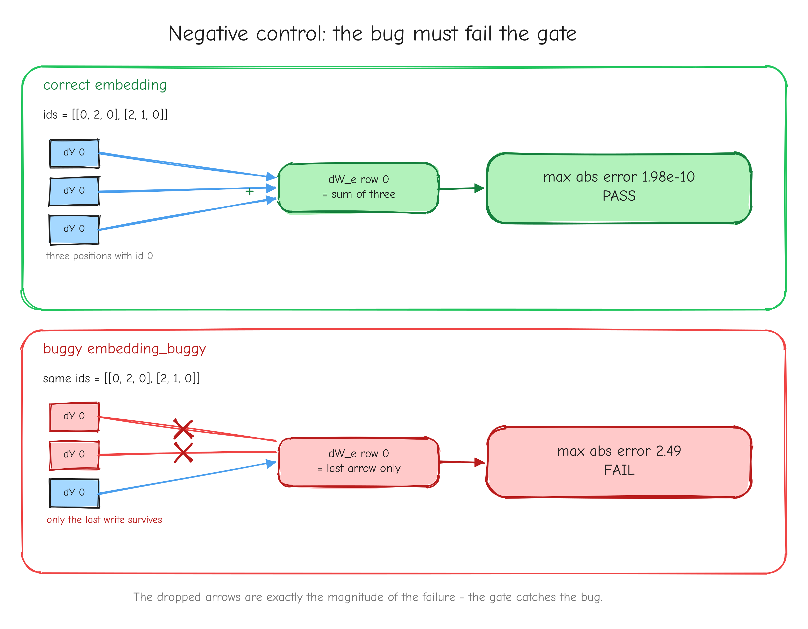
embedding: the ids array [[0,2,0],[2,1,0]] with arrows scatter-adding upstream rows into dW_e, token 0 receiving three arrows that sum. Result: max abs error 1.98e-10, marked PASS in green. Bottom row, embedding_buggy: the same scatter but token 0 receives only its last arrow, the other two crossed out. Result: max abs error 2.49, marked FAIL in red. The reader should see that the dropped arrows are exactly the magnitude of the failure.Op-specific notes
Most ops are checked the same way, but a few need care.
The fused softmax plus cross-entropy is checked two ways. The finite-difference check confirms the analytic dlogits = (p - onehot) / N matches the numeric gradient. A second check, special_fused_vs_composed in the harness, confirms the fused op also matches the unfused composition: run softmax_op then cross-entropy as two separate ops and compose their backward passes by hand. The two agree to a forward difference of 2.22e-16 and a gradient difference of 6.94e-18 (tests/gradcheck_results.md), which is float64 round-off. The fused op is an optimization, collapsing softmax then log then a per-row gather into one expression. This cross-check proves the optimization did not change the math.
LayerNorm is the op most likely to fail. Its backward, dx = 1/(D s) * (D dxhat - sum_dxhat - xhat * sum_dxhat_xhat), has three terms that nearly cancel, because normalizing removes the mean and the scale, so the gradient must remove them too. A sign error or a missing term in any of the three produces a gradient that is plausible in magnitude but wrong, exactly the kind of bug that survives a glance and is hard to spot by eye. The finite-difference check does not care how the terms cancel; it compares the final dx against the numeric truth. In the results, layernorm passes with max relative errors of 3.17e-09 for x, 3.22e-09 for gamma, and 2.01e-10 for beta.
The embedding check must include a repeated token id. This is the same point as the negative control, applied to the correct op. The builder b_embedding uses ids = [[0, 2, 0], [2, 1, 0]] so token 0 appears three times and token 2 twice. If the test ids were all distinct, dW_e[ids] += dY and np.add.at would produce identical results, the buggy op would pass, and the check would be worthless on exactly the case it exists to catch. The repeated id is what exercises the accumulation path.
Attention is checked with small but realistic shapes. The scaled dot-product attention check uses B=2, H=2, T=4, d=8. These are small enough that the element-by-element finite difference runs in a reasonable time, the whole suite finishes in 1.6 seconds, but the shapes are structurally real: more than one batch element, more than one head, a sequence long enough that the causal mask actually masks something, and a per-head dimension that exercises the 1/sqrt(d) scaling. dQ, dK, and dV are checked separately, since a bug could be in any one of the three. The causal mask itself is checked with a moderate fill of -30.0 rather than the realistic -1e9, because subtracting two values near -1e9 in the finite difference would lose all precision to cancellation. The realistic -1e9 fill is still exercised, cleanly, inside sdpa and mha, where it underflows through exp to exactly zero.
Your turn
Part 8: Building the autograd engine, the Tensor class
In Part 7 we proved all 24 derivations correct: each hand-rolled backward_fn in ops.py matched a finite-difference estimate, 92/92 gradient checks passed. Those are 24 separate functions, each producing one gradient. To train a model we need to chain them: a forward pass builds a graph of hundreds of ops, and one call to .backward() must walk that graph and apply every derivation in the right order, accumulating gradients where a value is used more than once.
That machine is the Tensor class. It is small. The whole engine is about 200 lines, and most of the work was already done in Part 7. The new pieces are three: a topological walk, gradient accumulation, and a wrapper that turns a verified ops.py closure into a graph node. We build them one at a time and end with a gate that rebuilds every Part 7 op end to end and checks the result is bit-identical to the hand-rolled backward.
The minimal Tensor
A Tensor wraps a NumPy array and remembers how it was made. Start with the fields and nothing else.
# new in this section
import numpy as np
class Tensor:
def __init__(self, data, requires_grad=False):
self.data = np.asarray(data, dtype=np.float64)
self.grad = None # dL/d(self), same shape as data
self.requires_grad = bool(requires_grad)
self._backward = lambda grad: None # set by the op that produced this tensor
self._parents = () # tensors this one was computed from
Five fields, each with a job:
data: the actual values, a NumPy array. Forced tofloat64so every op runs in one dtype and the bit-exact comparison in the gate is meaningful.grad: the gradientdLof the scalar loss with respect to this tensor, same shape asdata. It isNoneuntil a backward pass fills it in.requires_grad: whether this tensor needs a gradient. Model parameters set it toTrue. A constant input (token ids, a fixed mask) leaves itFalse, and the graph walk skips it._backward: a closure. Given this tensor's gradient, it pushes contributions to the tensor's parents. It starts as a no-op and is replaced by the op that produces the tensor. Its exact signature is the subject of the next section._parents: the tensors this one was computed from. A leaf (a parameter, an input) has no parents, so the default is the empty tuple.
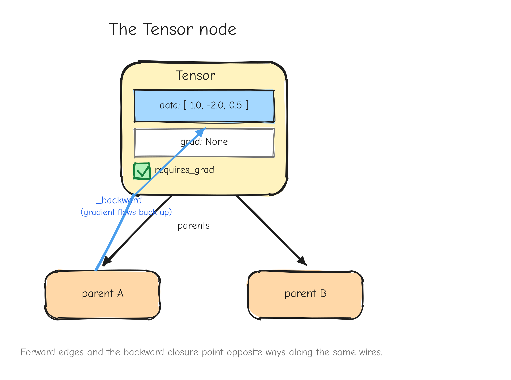
Tensor drawn as a labelled box. Inside: data (a small array), grad (shown as None), requires_grad (a checkbox). Two arrows leave the bottom of the box pointing to two parent boxes, labelled _parents. A loop-back arrow labelled _backward shows gradient flowing the opposite direction of the parent arrows. The takeaway: forward edges and the backward closure point opposite ways along the same wires.The _backward closure design
Look again at the signature: self._backward = lambda grad: None. It takes grad as an argument. It does not read self.grad. This is a deliberate choice and it is worth slowing down on, because the obvious alternative leaks memory.
The obvious design is a closure that captures the tensor it belongs to and reads self.grad when called. That works, but it creates a reference cycle: the tensor holds _backward, and _backward holds the tensor. Python's reference counting cannot free either one. They only get collected by the cyclic garbage collector, which runs on its own schedule.
For a small graph that is harmless. For a GPT-2 forward pass it is not. A 50k-vocab model builds a forward graph with hundreds of intermediate tensors, and the logits alone are shape (B, T, V). The captured intermediates of one forward pass run to hundreds of megabytes. If every node is part of a reference cycle, that memory is not freed when the loss tensor goes out of scope. It sits there until the cyclic GC decides to run, and across a training loop the graphs pile up.
The fix: _backward takes grad as an argument and never closes over its own tensor. The caller (backward(), in the next section) reads t.grad and passes it in. Now the tensor points at _backward, but _backward does not point back. The graph is a pure DAG with no cycles, and reference counting frees the entire thing the instant the loss tensor is dropped.
# the closure takes grad as an argument; it does NOT close over its own tensor.
# tensor -> _backward is a one-way edge, so the graph is a pure DAG and
# reference counting frees it the moment the loss is dropped. closing over
# `self` instead would make tensor <-> _backward a cycle, freeable only by the
# cyclic GC, and a ~700MB forward graph would linger every step.
self._backward = lambda grad: None
backward()
A forward pass leaves us with a graph: the loss tensor at the bottom, parameters and inputs at the top, intermediates in between. backward() has to visit every node exactly once, and it has to visit a node only after all of its children have pushed their gradients into it. That ordering is a reverse topological sort.
Build the topological order first, then walk it in reverse.
# new in this section
def backward(self, grad=None):
"""Reverse-mode backward pass over self and all its ancestors.
With no argument this is only valid on a scalar output (the loss),
seeded with dL/dL = 1. An explicit `grad` (same shape as data) may be
passed for non-scalar outputs.
"""
# topological order: a node appears after all of its parents
topo, visited = [], set()
def build(t):
if id(t) in visited:
return
visited.add(id(t))
for p in t._parents:
build(p)
if t.requires_grad: # only schedule nodes that need a grad
topo.append(t)
build(self)
if grad is None:
if self.data.size != 1:
raise RuntimeError(
"backward() without an explicit gradient is only valid on a "
f"scalar output; this tensor has shape {self.data.shape}")
self.grad = np.ones_like(self.data)
else:
self.grad = np.asarray(grad, dtype=np.float64)
for t in reversed(topo): # children before parents
t._backward(t.grad) # pass the grad in - no cycle (see __init__)
Three steps:
-
builddoes a post-order depth-first traversal. It recurses into a node's parents first, then appends the node. The result is that every node lands intopoafter all of its parents. Nodes withrequires_grad=Falseare visited (so the traversal reaches their ancestors if any) but not appended, so the backward walk never wastes time on them.visitedkeys onid(t)because a tensor is not hashable by value and the same object can be reached by many paths. -
Seed the output. Called with no argument,
backward()is only valid on a scalar: the loss. We seedself.gradwithdL/dL = 1. Called with an explicitgradof matching shape, it seeds with that instead, which the gate uses to backprop a non-scalar op output. -
Walk
reversed(topo). Becausetopohas parents before children, the reverse has children before parents. For each node we callt._backward(t.grad), passing the gradient in as an argument. By the time we reach a node, every child below it has already run and pushed its contribution intot.grad, sot.gradis complete.
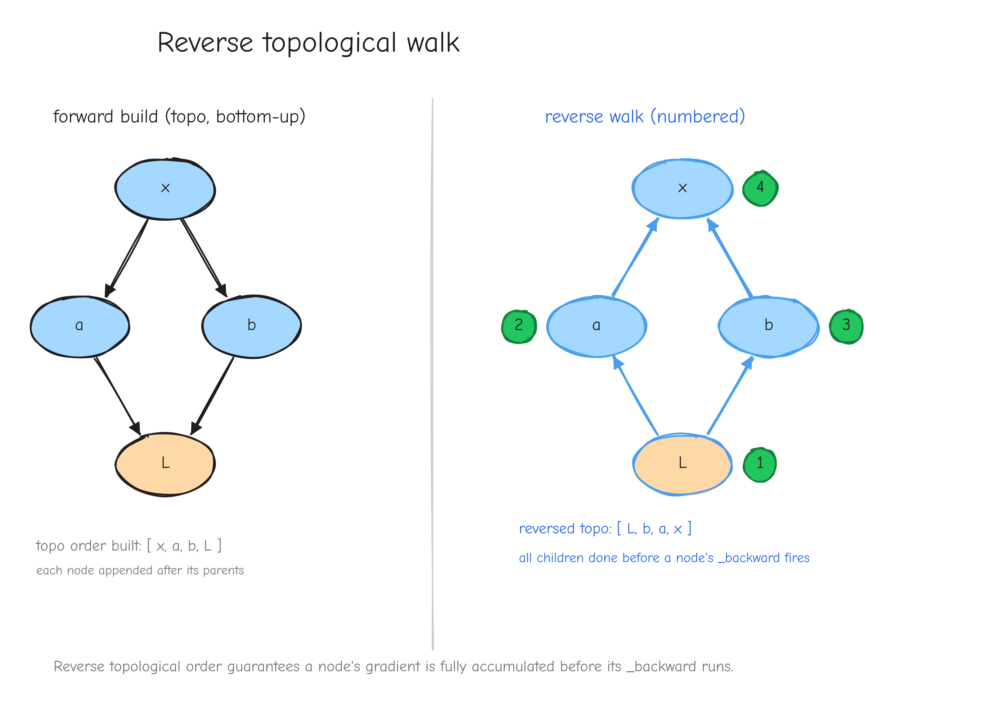
x at top, a and b in the middle, L at the bottom. Two columns side by side. Left column: the forward build order with topo filling bottom-up (x, a, b, L). Right column: the reverse walk, numbered 1 to 4, starting at L and ending at x, with a note at each node "all children done before this runs". Takeaway: reverse topological order guarantees a node's gradient is fully accumulated before its _backward fires.zero_grad() is the mirror image: walk the same graph and clear .grad on every node, ready for the next forward and backward.
# new in this section
def zero_grad(self):
"""Clear `.grad` on self and every ancestor, ready for a fresh backward."""
visited = set()
def clear(t):
if id(t) in visited:
return
visited.add(id(t))
t.grad = None
for p in t._parents:
clear(p)
clear(self)
_accum() and gradient accumulation
This is the one piece of genuinely new machinery, and it is the piece that quietly breaks everything if you get it wrong.
In a plain feed-forward chain every tensor is used exactly once: it has one consumer, that consumer pushes one gradient, done. But real graphs are not chains. A residual connection r = x + u uses x in the add and again as the skip path. Weight tying uses the embedding matrix W_e in the token lookup and again in the output projection (we derived both in Part 5, Normalization, embeddings, weight tying). Even y = x * x uses x twice in a single op.
When a tensor is used in k places, k different _backward closures will each push a gradient into it. Those k contributions must be summed. This is not a convention, it is the multivariable chain rule: if L depends on x through several paths, dL/dx is the sum of the per-path derivatives. Overwrite instead of add, and every path but the last is silently discarded.
_accum is the rule:
# new in this section
def _accum(self, grad):
"""Accumulate `grad` into self.grad. THE rule that keeps multi-use
tensors correct: a tensor used in k places receives k contributions
and they sum. First contribution initialises; the rest add."""
if not self.requires_grad:
return
if self.grad is None:
self.grad = np.array(grad, dtype=np.float64) # copy on first write
else:
self.grad = self.grad + grad # accumulate
The first contribution finds self.grad is None and initialises it (with a copy, so a later + cannot mutate someone else's array). Every contribution after that adds. A tensor used once gets exactly one _accum call and behaves like a plain assignment, so the single-use case costs nothing.
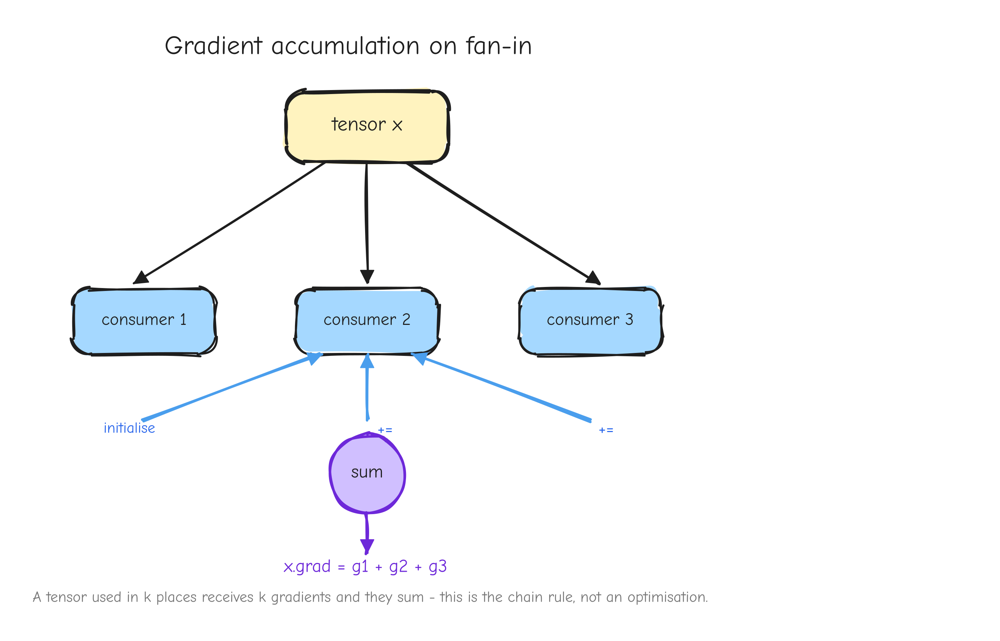
x at the top with three arrows fanning down to three different consumer ops. Backward: three gradient arrows fanning back up into x, meeting at a summation symbol that writes x.grad. Annotate the first arrow "initialise" and the next two "+=". Caption: a tensor used in k places receives k gradients and they sum; this is the chain rule, not an optimisation.The _apply() op wrapper
We have a node type and a backward walk. The last piece connects them to Part 7. Every op is a thin wrapper around a verified ops.py function, and _apply is the wrapper factory.
An ops.py function takes raw NumPy arrays and returns (output, backward_fn): the forward result and the exact closure Part 7 finite-difference checked. _apply runs that function, wraps the output in a Tensor, records the parents, and installs a _backward that calls the same backward_fn.
# new in this section
def _apply(fn, tensor_inputs, const_inputs=None):
"""Build a Tensor op from a verified ops.py function.
fn : an ops.py function returning (output, backward_fn)
tensor_inputs : {ops_param_name: Tensor} - the differentiable inputs. The
grad-dict key returned by `backward_fn` equals the param
name, so the same dict drives both forward and backward.
If one Tensor is passed under two names (e.g. mul(x, x)),
`.items()` visits it twice and `_accum` adds both - which
is exactly the gradient-accumulation behaviour we want.
const_inputs : {ops_param_name: value} - non-differentiable args (ints,
integer id arrays, eps, ...).
"""
const_inputs = const_inputs or {}
raw = {name: t.data for name, t in tensor_inputs.items()}
out_data, bwd = fn(**raw, **const_inputs)
if _NO_GRAD: # eval mode: skip the graph entirely
return Tensor(out_data, requires_grad=False)
out = Tensor(out_data, requires_grad=any(t.requires_grad
for t in tensor_inputs.values()))
out._parents = tuple(tensor_inputs.values())
def _backward(out_grad): # takes the grad as an arg - does NOT
if out_grad is None: # close over `out` (avoids a ref cycle)
return
grads = bwd(out_grad) # the SAME closure Step 1 checked
for name, t in tensor_inputs.items():
t._accum(grads[name])
out._backward = _backward
return out
Read the flow:
- Unwrap every input
Tensorto its raw array, callfn. This is the forward pass and it returnsout_dataandbwd, the verified backward closure. - Wrap
out_datain a newTensor. Itrequires_gradif any input did. - Record
_parentsso the topological walk can reach the inputs. - Build
_backward. It takesout_gradas an argument (no cycle, per the closure-design section), callsbwd(out_grad)to get a dict of input gradients, and_accums each one into the matching parent.
The dict returned by bwd is keyed by the same parameter names used in tensor_inputs, so the one dict drives both directions. And note the comment on tensor_inputs: if the same Tensor is passed under two names, as in mul(x, x) where x is both 'a' and 'b', then .items() visits it twice and _accum adds both contributions. Gradient accumulation for repeated inputs falls out of the loop for free.
The payoff is the claim we can now make precisely: the gradient _apply produces is bit-identical to the hand-rolled formula from Part 7, not merely close to it. The Tensor op calls the exact same bwd closure that gradcheck.py finite-difference verified. The only code between the verified closure and x.grad is the topological walk and _accum, and for a tensor used once _accum is a plain assignment that changes no floating-point bits. Same code path, same bits.
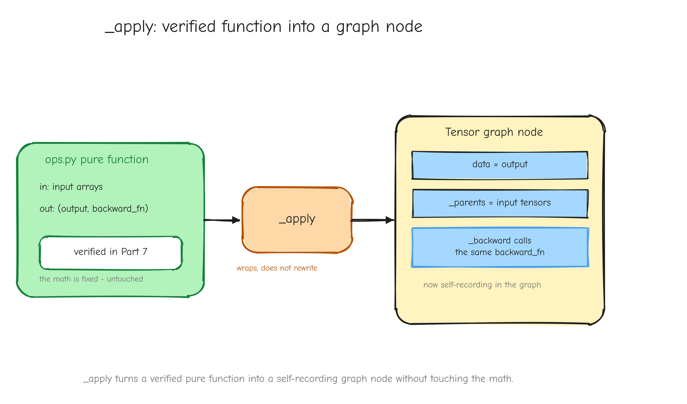
ops.py function box, input arrays in, (output, backward_fn) out, stamped "verified in Part 7". An arrow through a box labelled _apply. Right: a Tensor graph node with data, _parents wired to the input tensors, and _backward shown calling the same backward_fn from the left. Caption: _apply turns a verified pure function into a self-recording graph node without touching the math.Operator overloads and no_grad()
With _apply in place, the operator overloads are one-liners. __add__, __mul__, __matmul__, __sub__, __neg__, and the reflected versions all route through _apply to the matching ops.py primitive. _as_tensor wraps a raw scalar or array so x + 2.0 works.
# new in this section
def __add__(self, other): return _add(self, _as_tensor(other))
def __radd__(self, other): return _add(_as_tensor(other), self)
def __mul__(self, other): return _mul(self, _as_tensor(other))
def __rmul__(self, other): return _mul(_as_tensor(other), self)
def __neg__(self): return _mul(self, Tensor(-1.0))
def __sub__(self, other): return _add(self, -_as_tensor(other))
def __rsub__(self, other): return _add(_as_tensor(other), -self)
def __matmul__(self, other): return matmul(self, _as_tensor(other))
def sum(self):
return _sum(self)
no_grad() is the other convenience. During evaluation (perplexity, benchmarks) we run the forward pass but never call backward(), so building the graph is wasted work and wasted memory: every intermediate array would be captured and held. no_grad() is a context manager that flips a global switch; inside it, _apply checks _NO_GRAD, computes only the forward, and returns a plain Tensor with no _parents and no _backward.
# new in this section
_NO_GRAD = False
class no_grad:
"""Context manager that disables autograd recording (PyTorch-style)."""
def __enter__(self):
global _NO_GRAD
self._prev = _NO_GRAD
_NO_GRAD = True
return self
def __exit__(self, *exc):
global _NO_GRAD
_NO_GRAD = self._prev
return False
The check is the one line if _NO_GRAD: return Tensor(out_data, requires_grad=False) near the top of _apply, already shown in the previous section.
The smoke tests
tensor.py ships its own __main__: a smoke test that targets gradient accumulation directly, because that is the one place the engine can be subtly wrong while still looking like it works. Four cases, each a known closed-form answer.
# new in this section
def _smoke_test():
print("tensor.py smoke test - gradient accumulation")
print("=" * 60)
rng = np.random.RandomState(0)
ok = True
def check(name, got, want):
nonlocal ok
exact = np.array_equal(got, want)
ok &= exact
print(f" {'PASS' if exact else 'FAIL'} {name:<34} "
f"max|diff|={np.abs(got - want).max():.1e}")
# y = x * x -> dx = 2x (x used twice in one op)
x = Tensor(rng.randn(3, 4), requires_grad=True)
(x * x).sum().backward()
check("y = x*x -> dx = 2x", x.grad, 2.0 * x.data)
# y = x + x -> dx = 2 (the residual-halving trap)
x = Tensor(rng.randn(3, 4), requires_grad=True)
(x + x).sum().backward()
check("y = x+x -> dx = 2", x.grad, np.full((3, 4), 2.0))
# diamond: a = 2x, b = 3x, y = a + b -> dx = 5 (x used in two ops)
x = Tensor(rng.randn(3, 4), requires_grad=True)
a, b = x * 2.0, x * 3.0
(a + b).sum().backward()
check("diamond a+b -> dx = 5", x.grad, np.full((3, 4), 5.0))
# x^3 via x*x*x -> dx = 3x^2
x = Tensor(rng.randn(3, 4), requires_grad=True)
(x * x * x).sum().backward()
check("y = x*x*x -> dx = 3x^2", x.grad, 3.0 * x.data ** 2)
Why these four:
y = x*xgivesdx = 2x.xis used twice inside one op. Backward ofmulsendsxto one input andxto the other;_accumadds them:dx = x + x = 2x.y = x+xgivesdx = 2. The residual-halving trap from the_accumsection, made into a test. Both inputs of the add arex, each gets the upstream1, they sum to2.- the diamond
a = 2x; b = 3x; y = a + bgivesdx = 5. Herexis used in two separate ops, not twice in one. The gradient flows back througha(scaled by 2) and throughb(scaled by 3), and_accumonxsums them:2 + 3 = 5. y = x*x*xgivesdx = 3x^2. A three-deep chain with the same tensor reused, checking that accumulation composes correctly through depth.
The test also checks that zero_grad() clears .grad to None and that a second backward() reproduces the first result exactly. Run it and every line is max|diff| = 0.0: the accumulation tests are bit-exact.
The verification gate
The smoke test checks accumulation on toy graphs. The real gate, tests/test_tensor.py and tests/test_tensor_composites.py, rebuilds every Part 7 op end to end with the Tensor class and compares the result against the Part 7 hand-rolled backward.
The harness is mechanical. For each op it builds the same inputs Part 7 used (reusing gradcheck.py's builders and seeds), runs the Part 7 reference out, bwd = ops.<op>(...) then ref = bwd(upstream), then runs the Tensor graph: wire the op with Tensor operations, form L = (out_tensor * upstream).sum(), call L.backward(), and assert x.grad equals ref. The bar is np.array_equal: bit-for-bit, zero diff, not "within tolerance". That bar is reachable precisely because the Tensor op calls the same verified closure, as argued in the _apply section.
The result, from tests/step2_results.md:
- 89/90 gradient checks bit-exact. Every primitive op (41
(op, input)pairs) is bit-identical to the Part 7 backward. Three of the four composites (scaled dot-product attention, multi-head attention, the pre-LN transformer block, 21 checks) are bit-exact too, including the block'sr = x + uresidual whereris used twice and the graph accumulates both contributions in the same order Part 7 did. - The one remaining check matches to
3.47e-18, about one unit in the last place. It istiny_gpt'sdW_e, the weight-tied embedding matrix.W_efeeds both the token embedding and the lm_head, so its gradient is the sum of two contributions. Part 7 accumulates them in place withnp.add.at; the autograd graph accumulates them separately then adds. For a row hit by a repeated token that is(H + a) + bversusH + (a + b), and floating-point addition is not associative, so the last bit can differ. Both orderings are equally correct. It is arithmetic, not a bug, and3e-18is about a hundred million times below the1e-5gate Part 7's gradient check uses. - The accumulation tests are bit-exact:
y = x+xgivesdx = 2, the diamond givesdx = 5, allmax|diff| = 0.0.
Your turn
Part 9: Neural network layers
With the Tensor engine from Part 8, Building the autograd engine, a layer is no longer a special object. It is a small class that stores its parameters as Tensors with requires_grad=True and, in its forward, composes Tensor ops. The graph builds itself as the forward runs, so calling .backward() on any downstream scalar fills in every parameter's .grad. No layer needs its own backward method. That was the whole point of Part 8.
This part builds the eight layers of GPT-2, in dependency order: a base class, then the three primitives (Linear, LayerNorm, Embedding), then the two composites (MLP, MultiHeadAttention), then the block that stacks them (TransformerBlock). Each layer is short. The work is making sure each one matches PyTorch exactly before the next is built on top of it.
All code here is copied from layers.py. The structure mirrors nanoGPT's model.py.
The Module base class
Every layer inherits from Module. It carries two responsibilities and nothing else.
class Module:
"""Minimal base: a parameter dict and a graph-free way to clear gradients."""
def parameters(self):
return {}
def zero_grad(self):
for p in self.parameters().values():
p.grad = None
def __call__(self, *args, **kwargs):
raise NotImplementedError
parameters() returns a flat dict from string name to Tensor. Flat is the key word. A TransformerBlock contains an MLP, which contains two Linear layers, each with a W and a b. That is a tree. But the optimizer (Part 11, The optimizer: AdamW) does not want a tree. It wants to loop over every trainable Tensor once, read its .grad, and update its .data. A flat dict gives it exactly that:
for name, p in model.parameters().items():
# one update rule, applied to every parameter, no recursion
...
The names are namespaced by path, so a parameter deep in the tree still has a unique key: attn.c_attn.W, mlp.c_proj.b, ln_1.gamma. The flattening is done by a one-line helper that prefixes a sub-module's dict:
def _prefixed(prefix, params):
"""Namespace a sub-module's parameter dict, e.g. {'W': ...} -> {'c_fc.W': ...}."""
return {f"{prefix}.{k}": v for k, v in params.items()}
zero_grad() walks that same flat dict and sets every .grad back to None. It has to run between training steps: gradients accumulate by addition (the _accum rule from Part 8), so without a reset, step two's gradients would pile on top of step one's.
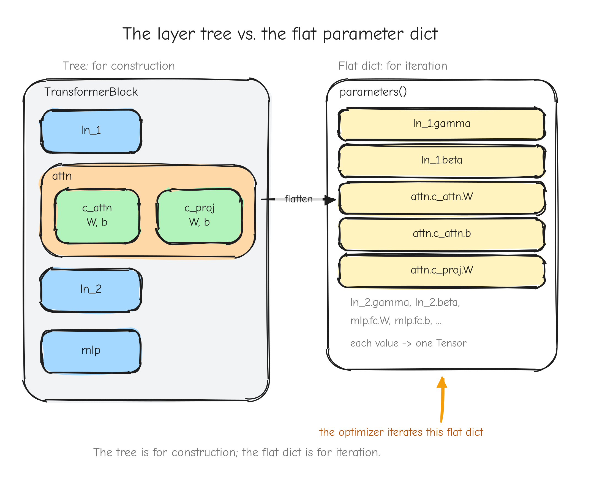
TransformerBlock box containing ln_1, attn, ln_2, mlp boxes, with attn expanded to show c_attn and c_proj, each holding W and b. On the right, the flat dict that parameters() returns: rows of ln_1.gamma, ln_1.beta, attn.c_attn.W, attn.c_attn.b, attn.c_proj.W, ... each pointing at one Tensor. An arrow labeled "the optimizer iterates this" points at the flat dict. Takeaway: the tree is for construction, the flat dict is for iteration.Linear
Linear is the affine map y = x @ W + b.
class Linear(Module):
"""y = x @ W + b. W is (n_in, n_out); b is (n_out,) or None."""
def __init__(self, n_in, n_out, bias=True):
self.W = Tensor(np.random.randn(n_in, n_out) * 0.02, requires_grad=True)
self.b = Tensor(np.zeros(n_out), requires_grad=True) if bias else None
def __call__(self, x):
if self.b is None:
return T.matmul(x, self.W)
return T.linear(x, self.W, self.b)
def parameters(self):
return {'W': self.W} if self.b is None else {'W': self.W, 'b': self.b}
The weight is stored as (n_in, n_out). This is the math convention: x has its features in the last axis of size n_in, and x @ W contracts that axis against the first axis of W, leaving n_out. Read y = x @ W + b and the shapes line up left to right with no transpose.
PyTorch does the opposite. nn.Linear stores its weight as (n_out, n_in) and computes x @ W.T + b. Neither convention is more correct; they are mirror images. What matters is that the two never get confused. In this codebase the rule is: a Linear weight is always (in, out). The parity test handles the bridge: when it copies weights into the PyTorch reference, it transposes W, and when it reads gradients back out, it transposes again. You will see that transpose in the verification section. It lives in exactly one place, the test harness, and nowhere else.
The forward has two branches because the bias is optional. With a bias, it calls T.linear, the fused op derived in Part 3. Without one, it calls T.matmul directly. GPT-2 with bias=False uses the second branch in every projection. parameters() returns {'W': self.W} in the no-bias case so the optimizer never sees a None.
The initializer scales the weight by 0.02, the nanoGPT initialization, and starts the bias at zero. Both Tensors are created with requires_grad=True, which is what puts them into the autograd graph when the forward runs.
LayerNorm
LayerNorm normalizes each vector over its last axis, then applies a learned scale and shift.
class LayerNorm(Module):
"""y = gamma * normalize(x) + beta over the last axis. eps = 1e-5 (nanoGPT).
Biased variance (divisor D), matching torch.nn.LayerNorm and derivation.md item 11."""
def __init__(self, n_dim, bias=True, eps=1e-5):
self.gamma = Tensor(np.ones(n_dim), requires_grad=True)
self.beta = Tensor(np.zeros(n_dim), requires_grad=True) if bias else None
# ops.layernorm always takes a beta; with bias=False we feed a fixed zero
# (requires_grad=False, so it contributes nothing and collects no grad).
self._zero_beta = None if bias else Tensor(np.zeros(n_dim))
self.eps = eps
def __call__(self, x):
beta = self.beta if self.beta is not None else self._zero_beta
return T.layernorm(x, self.gamma, beta, self.eps)
def parameters(self):
if self.beta is None:
return {'gamma': self.gamma}
return {'gamma': self.gamma, 'beta': self.beta}
gamma starts at all ones and beta at all zeros, so a freshly initialized LayerNorm is the identity on the normalized input. Both have shape (n_dim,) and broadcast over the leading B and T axes.
The math, the divisor, and the eps placement were all derived in Part 5, Normalization, embeddings, weight tying. Two facts carry forward. First, the variance is biased: divide by D, not D - 1. That is what torch.nn.LayerNorm does, so matching it is required for parity. Second, eps = 1e-5, the nanoGPT value, added inside the square root for numerical stability.
The no-bias case has one wrinkle worth a look. The underlying T.layernorm op always takes a beta argument; it has no no-bias branch. So when bias=False, LayerNorm builds a fixed _zero_beta Tensor of zeros with requires_grad=False. The forward feeds it in like any other beta. Because it does not require a gradient, it adds zero to the output, the autograd engine never schedules it in the backward pass, and it collects no .grad. It is a placeholder that satisfies the op's signature without becoming a parameter. parameters() correctly leaves it out.
Embedding
Embedding is a lookup table. Given integer ids, it returns the rows of a weight matrix.
class Embedding(Module):
"""Lookup table, W is (n_vocab, n_dim). __call__(ids) gathers W[ids].
Works for token embeddings (ids shape (B,T) -> (B,T,D)) and position
embeddings (ids = arange(T), shape (T,) -> (T,D))."""
def __init__(self, n_vocab, n_dim):
# named `weight` (not `W`) to distinguish a lookup table from a Linear
# weight: a Linear weight is stored transposed vs torch, a table is not.
self.weight = Tensor(np.random.randn(n_vocab, n_dim) * 0.02, requires_grad=True)
def __call__(self, ids):
return T.embedding(self.weight, ids)
def parameters(self):
return {'weight': self.weight}
The table is (n_vocab, n_dim): one row per vocabulary entry, each row a D-dimensional vector. The forward gathers weight[ids]. The ids array can be any shape; the output is that shape with a D axis appended. Token ids of shape (B, T) produce (B, T, D). A position vector arange(T) of shape (T,) produces (T, D). The same layer serves both the token embedding and the position embedding in GPT-2.
The parameter is named weight, not W, and the comment in the code says why. A Linear weight is stored transposed relative to PyTorch; an Embedding table is stored the same as PyTorch. The differing names are the signal that tells the weight-loading code which one needs a transpose. This is the other half of the Gotcha from the Linear section.
The ids are integers, so they are not differentiable. They flow into the op as a constant, not as a Tensor in the graph. The backward of embedding scatters the upstream gradient back into the rows that were looked up, using np.add.at so that a token id appearing twice in a batch receives both contributions. That mechanism, and the np.add.at versus += trap, was the subject of Part 5 and the negative control in Part 7, Verifying the math.
MLP
MLP is the position-wise feed-forward network: expand to 4D, apply GeLU, contract back to D.
class MLP(Module):
"""nanoGPT MLP: c_fc (n_embd -> 4*n_embd) -> GeLU -> c_proj (4*n_embd -> n_embd)."""
def __init__(self, n_embd, n_hidden=None, bias=True):
n_hidden = 4 * n_embd if n_hidden is None else n_hidden
self.c_fc = Linear(n_embd, n_hidden, bias=bias)
self.c_proj = Linear(n_hidden, n_embd, bias=bias)
def __call__(self, x):
return self.c_proj(T.gelu(self.c_fc(x)))
def parameters(self):
return {**_prefixed('c_fc', self.c_fc.parameters()),
**_prefixed('c_proj', self.c_proj.parameters())}
Two Linear layers with a GeLU between them. c_fc maps D to 4D, c_proj maps 4D back to D. The hidden width 4D is the standard GPT-2 ratio. The names c_fc and c_proj mirror nanoGPT so that loading the real checkpoint later is a direct name match.
The forward is one line, read inside out: c_fc(x), then T.gelu(...), then c_proj(...). The GeLU is the exact erf version, derived in Part 3. Because MLP is built from Linear layers that already store their parameters as Tensors, MLP itself stores no Tensors directly. Its parameters() only has to collect its children's dicts and prefix them: c_fc.W, c_fc.b, c_proj.W, c_proj.b. This is the recursive pattern every composite layer uses.
MultiHeadAttention
MultiHeadAttention is causal self-attention with a fused QKV projection. It is the longest layer because of the shape bookkeeping: the data goes from (B, T, D) to a four-axis head layout, through the attention math, and back. Every line is worth reading slowly.
class MultiHeadAttention(Module):
"""Causal multi-head self-attention (nanoGPT CausalSelfAttention).
Fused QKV projection `c_attn` (n_embd -> 3*n_embd), split into Q,K,V and into
`n_head` heads; scaled dot-product attention with a causal mask; heads merged
and run through the output projection `c_proj` (n_embd -> n_embd).
"""
def __init__(self, n_embd, n_head, bias=True):
assert n_embd % n_head == 0, "n_embd must be divisible by n_head"
self.n_head = n_head
self.c_attn = Linear(n_embd, 3 * n_embd, bias=bias)
self.c_proj = Linear(n_embd, n_embd, bias=bias)
Two Linear layers. c_attn is the fused query, key, and value projection: one matmul produces all three at once by mapping D to 3D. c_proj is the output projection, D to D. The assert guards the head split: D must divide evenly into n_head heads of size d = D / H.
Now the forward, walked one block at a time.
def __call__(self, x):
B, Tn, D = x.shape
H = self.n_head
d = D // H
qkv = self.c_attn(x) # (B, T, 3D)
Qf, Kf, Vf = T.split3(qkv) # each (B, T, D)
x enters as (B, T, D). The fused projection produces qkv of shape (B, T, 3D). T.split3 cuts it along the last axis into three equal (B, T, D) pieces: the flat query, key, and value. As Part 8 noted, split3 is just three slices, and each slice scatters its gradient back into disjoint columns of qkv, so _accum reassembles the full gradient automatically.
def heads(z): # (B,T,D) -> (B,H,T,d)
return T.permute_heads(T.reshape(z, (B, Tn, H, d)))
Q, K, V = heads(Qf), heads(Kf), heads(Vf)
Each flat (B, T, D) tensor becomes a per-head (B, H, T, d) tensor in two steps. First reshape splits the last axis D into (H, d), giving (B, T, H, d): the D features are now grouped into H blocks of d. Then permute_heads swaps the T and H axes to (B, H, T, d), so each head is a contiguous (T, d) matrix and the attention math can run on all heads in parallel over the leading (B, H) axes.
S = T.attention_scores(Q, K) # (B,H,T,T), already / sqrt(d)
P = T.softmax(T.causal_mask(S)) # causal mask -> softmax
O = T.attention_output(P, V) # (B,H,T,d)
attention_scores computes Q @ K^T over the last two axes and divides by sqrt(d), all inside the op, producing scores S of shape (B, H, T, T): for each head, a T by T matrix of how much every query position attends to every key position. causal_mask sets the entries above the diagonal to a large negative number, so a position cannot attend to the future. softmax over the last axis turns each row into a probability distribution P. attention_output computes P @ V, the probability-weighted sum of value vectors, giving O of shape (B, H, T, d). All four of these ops, and their gradients, were derived end to end in Part 6, Attention and composition.
O_merged = T.reshape(T.permute_heads(O), (B, Tn, D)) # (B,T,D)
return self.c_proj(O_merged)
The head split is now undone. permute_heads swaps H and T back, giving (B, T, H, d), and reshape collapses (H, d) into D, giving (B, T, D) again. The output projection c_proj mixes the merged heads and returns (B, T, D), the same shape attention received.
def parameters(self):
return {**_prefixed('c_attn', self.c_attn.parameters()),
**_prefixed('c_proj', self.c_proj.parameters())}
Same recursive pattern as MLP: collect the two Linear dicts, prefix them.
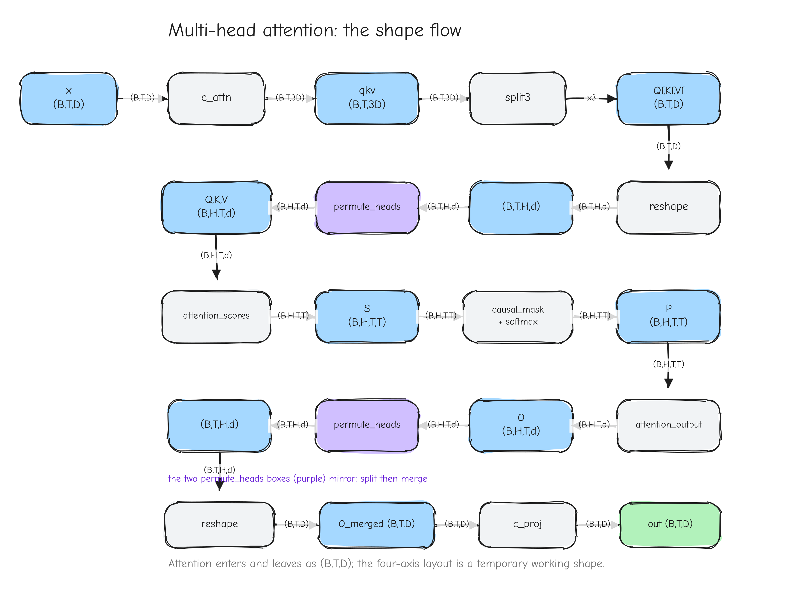
x (B,T,D) -> c_attn -> qkv (B,T,3D) -> split3 -> three boxes Qf,Kf,Vf (B,T,D) -> reshape -> (B,T,H,d) -> permute_heads -> Q,K,V (B,H,T,d) -> attention_scores -> S (B,H,T,T) -> causal_mask -> softmax -> P (B,H,T,T) -> attention_output -> O (B,H,T,d) -> permute_heads -> (B,T,H,d) -> reshape -> O_merged (B,T,D) -> c_proj -> out (B,T,D). Color the two permute_heads boxes the same to show the split and merge are mirror operations. Takeaway: attention enters and leaves as (B,T,D); the four-axis layout is a temporary working shape.TransformerBlock
TransformerBlock stacks attention and the MLP with pre-LayerNorm and two residual connections.
class TransformerBlock(Module):
"""Pre-LN transformer block (nanoGPT Block):
x = x + attn(ln_1(x))
x = x + mlp(ln_2(x))
"""
def __init__(self, n_embd, n_head, bias=True, eps=1e-5):
self.ln_1 = LayerNorm(n_embd, bias=bias, eps=eps)
self.attn = MultiHeadAttention(n_embd, n_head, bias=bias)
self.ln_2 = LayerNorm(n_embd, bias=bias, eps=eps)
self.mlp = MLP(n_embd, bias=bias)
def __call__(self, x):
x = x + self.attn(self.ln_1(x))
x = x + self.mlp(self.ln_2(x))
return x
def parameters(self):
p = {}
p.update(_prefixed('ln_1', self.ln_1.parameters()))
p.update(_prefixed('attn', self.attn.parameters()))
p.update(_prefixed('ln_2', self.ln_2.parameters()))
p.update(_prefixed('mlp', self.mlp.parameters()))
return p
Four children: two LayerNorms, one MultiHeadAttention, one MLP. The forward is two lines that follow the same shape. Normalize, run a sublayer, add the result back to the input that went in.
This is pre-LN: the LayerNorm is applied to the input of the sublayer, ln_1(x), not to its output. The residual path, the bare x in x + ..., carries the unnormalized signal straight through. The alternative, post-LN, normalizes after the addition and is harder to train deep; nanoGPT and GPT-2 use pre-LN.
The two x + ... expressions are the two residual connections, and they are the reason this part connects back to Part 6. In the forward, x appears on both sides of x = x + self.attn(self.ln_1(x)): it feeds the sublayer through ln_1, and it is also added directly. A Tensor used in two places is a Tensor that receives two gradient contributions in the backward pass, and the _accum rule from Part 8 sums them. Part 6 derived this composition and identified these exact spots as the gradient accumulation points. The code does not implement that accumulation. The autograd engine does it for free, precisely because x is reused. The factor-of-two trap (a residual where the gradient should add but instead overwrites) was the smoke test at the bottom of tensor.py.
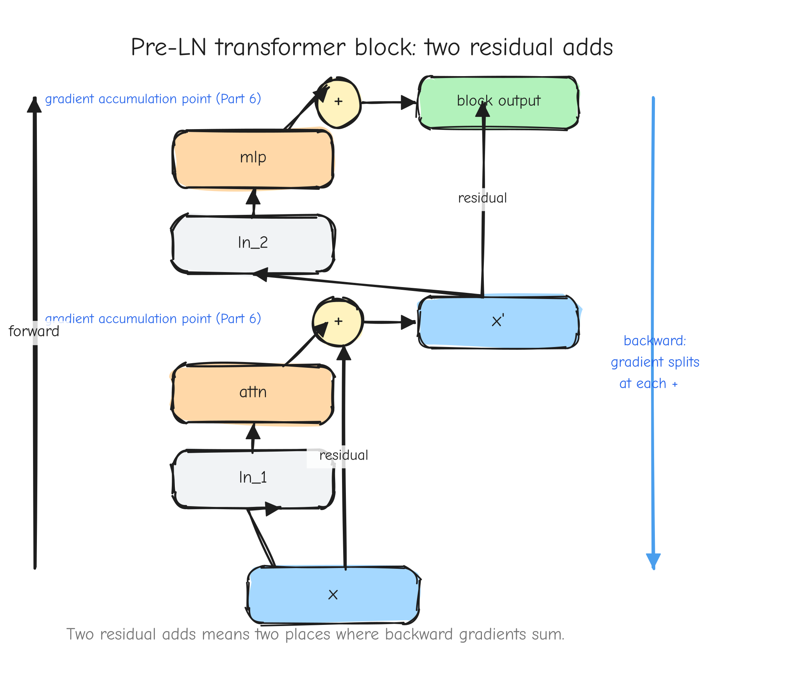
x enters at the bottom. It forks: one branch goes up through ln_1 -> attn, the other branch (the residual) goes straight up. The two branches meet at a + node, output called x'. Then x' forks again: one branch through ln_2 -> mlp, the other straight up, meeting at a second +. Mark each + node with a small label "gradient accumulation point (Part 6)". An upward arrow on the left labeled "forward", a downward arrow on the right labeled "backward: gradient splits at each +". Takeaway: two residual adds means two places where backward gradients sum.The verification gate: layer-by-layer parity against PyTorch
Eight layers are built. Before assembling them into GPT-2 in Part 10, every one is checked against PyTorch. The gate is tests/test_layer_parity.py, and the discipline behind it is the point of this section.
The test does not build the whole model and compare. It checks one layer at a time. For each layer: build the equivalent PyTorch layer, copy the same weights into it, run the same input through both, run backward with the same upstream gradient, and compare. The reason for layer-by-layer is diagnostic. If you only check the whole model and it fails, you know something is wrong somewhere in twelve layers and forty-something parameter tensors. If you check LayerNorm alone and it fails, the bug is in LayerNorm. The failing row of the results table points straight at the broken layer. Whole-model parity tells you that something broke; layer-by-layer parity tells you what.
Here is the core of the harness, the per-layer routine:
def run_layer(name, my_layer, torch_module, x_np, ids_input=False):
"""Forward + backward parity for one layer. Returns list of result rows."""
sync_weights(my_layer, torch_module)
if ids_input:
my_out = my_layer(x_np) # integer ids
torch_out = torch_module(torch.tensor(x_np, dtype=torch.long))
xt = xt_torch = None
else:
xt = Tensor(x_np, requires_grad=True)
xt_torch = torch.tensor(x_np, requires_grad=True)
my_out = my_layer(xt)
torch_out = torch_module(xt_torch)
rows = []
diff, ok = cmp_forward(my_out.data, torch_out)
rows.append((name, 'forward', 'abs', diff, ok))
# backward with the SAME upstream gradient on both sides
g = np.random.randn(*my_out.shape)
(my_out * Tensor(g)).sum().backward()
(torch_out * torch.tensor(g)).sum().backward()
if not ids_input:
rel, ok = cmp_grad(xt.grad, xt_torch.grad.detach().numpy())
rows.append((name, 'd_input', 'rel', rel, ok))
for my_name, my_t in my_layer.parameters().items():
rel, ok = cmp_grad(my_t.grad, torch_grad_for(torch_module, my_name))
rows.append((name, f'd[{my_name}]', 'rel', rel, ok))
return rows
Four things make this a real test rather than a coincidence:
- Same weights.
sync_weightscopies this code's parameters into the PyTorch module. It transposesLinearweights, because this code stores(in, out)and PyTorch stores(out, in). This is the one place that transpose lives, the bridge promised back in theLinearsection. It is decided by parameter name (Wgets transposed,weightandgammado not), not by shape, because a squareLinearlikec_projhas the same shape both ways and shape alone could not tell you. - Same input, same upstream gradient. Both sides see the identical
x_np, and backward is seeded with the identical randomg. Any difference in the output or the gradients is then attributable to the layer's math, nothing else. - Both in float64. The PyTorch reference runs with
torch.set_default_dtype(torch.float64). PyTorch is the oracle here, not part of the model. Running it at full precision means a mismatch is a real bug, not float32 rounding noise. - Forward and backward. The forward check confirms the layer computes the right thing. The gradient checks (input gradient plus every parameter gradient) confirm the autograd graph the forward built is also correct. Embedding has no input gradient row, because integer ids are not differentiable.
The thresholds: forward outputs must match to 1e-5 absolute, all gradients to 1e-4 relative.
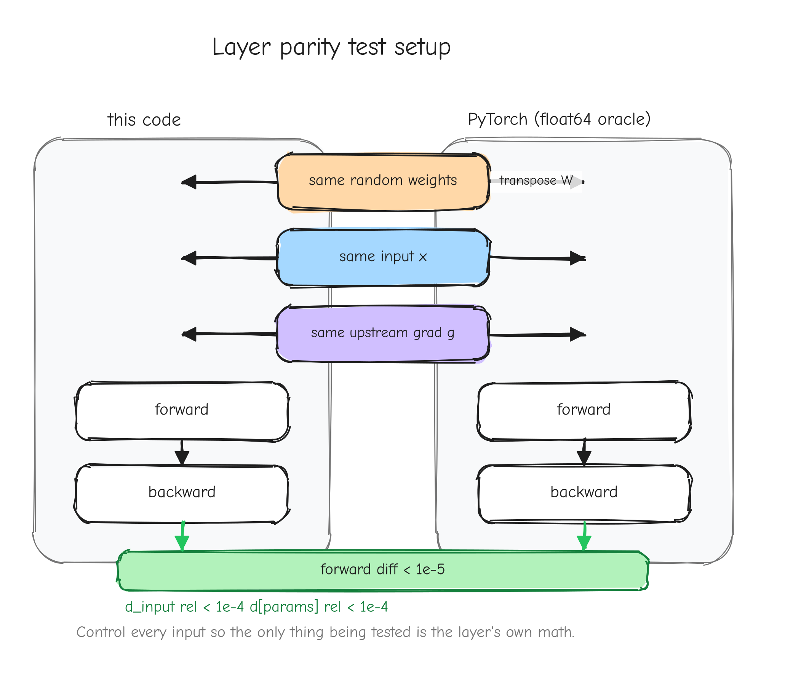
forward then backward (seeded by one shared box "same upstream gradient g"). At the bottom, comparison nodes: forward diff < 1e-5, d_input rel < 1e-4, d[params] rel < 1e-4. Takeaway: control every input so the only thing being tested is the layer's own math.The result. tests/layer_parity.md reports 45 of 45 checks passing across all 8 layers, in the order Linear, Linear (no bias), LayerNorm, Embedding, MLP, Attention (1 head), Attention (4 heads), TransformerBlock. The errors are at the floating-point floor: Linear and Embedding match bit-exactly (0.00e+00), and the deepest layer, TransformerBlock, has a worst-case forward error of 7.11e-15 and a worst-case gradient error of 7.14e-16. Every layer matches PyTorch in both directions. The autograd Tensor, the op library, and the layer assembly are all correct, which is the precondition for assembling the full model in Part 10, Assembling GPT-2.
Your turn
Part 10: Assembling GPT-2
The layers from Part 9 are verified in isolation: Embedding, LayerNorm, the attention block, the MLP, and the full TransformerBlock each match PyTorch to 1e-4 on gradients. Now they compose into the full model. Nothing new is derived here. The forward pass is the full-model blueprint from Part 6, Attention and composition, written out in code, and the backward pass is whatever the Tensor engine from Part 8 produces by replaying the graph. Assembly is its own source of bugs though: weight tying, the embedding sum, positional indexing, the loss reduction. Part 10 builds the model and then runs the gate that proves the assembly is correct.
GPTConfig
The model takes one config object. It is a plain class holding seven fields, matching nanoGPT's GPTConfig so the same checkpoint loads into both.
class GPTConfig:
"""nanoGPT GPTConfig, as a plain class (kwargs match the fixture's model_args)."""
def __init__(self, vocab_size, block_size, n_layer, n_head, n_embd,
bias=True, dropout=0.0):
self.vocab_size = vocab_size
self.block_size = block_size
self.n_layer = n_layer
self.n_head = n_head
self.n_embd = n_embd
self.bias = bias
# `dropout` is stored for fidelity but unused: we run dropout-free, which
# equals nanoGPT at dropout=0.0 - the configuration of the parity fixture.
self.dropout = dropout
vocab_size is V, the number of distinct tokens. block_size is the maximum T the model can see, the context length. n_layer is how many TransformerBlocks stack. n_head is H. n_embd is D. bias toggles bias vectors in the Linear and LayerNorm layers. dropout is stored only so the config round-trips against nanoGPT's; the model runs dropout-free. At dropout=0.0 that is identical to nanoGPT, and the parity fixture uses dropout=0.0, so this costs nothing.
The GPT model structure
The model holds four things: a token embedding, a positional embedding, a list of TransformerBlocks, and a final LayerNorm.
class GPT(Module):
def __init__(self, config):
self.config = config
self.wte = Embedding(config.vocab_size, config.n_embd) # token embedding
self.wpe = Embedding(config.block_size, config.n_embd) # positional embedding
self.h = [TransformerBlock(config.n_embd, config.n_head, bias=config.bias)
for _ in range(config.n_layer)]
self.ln_f = LayerNorm(config.n_embd, bias=config.bias)
# lm_head is weight-tied to wte - NOT a separate parameter (see module docstring).
wte is the token embedding table, shape (V, D): row t is the vector for token id t. wpe is the positional embedding table, shape (block_size, D): row i is the vector added at sequence position i. h is the Python list of n_layer TransformerBlocks, applied in order. ln_f is the final LayerNorm over D, applied once after the last block.
There is no lm_head attribute. The output projection that turns a D-dimensional hidden vector into V logits is not a separate parameter. It reuses wte.weight, the token embedding table, transposed. This is weight tying, derived in Part 5, Normalization, embeddings, weight tying. One matrix, two jobs: it maps token ids to vectors on the way in, and it maps vectors to token scores on the way out.
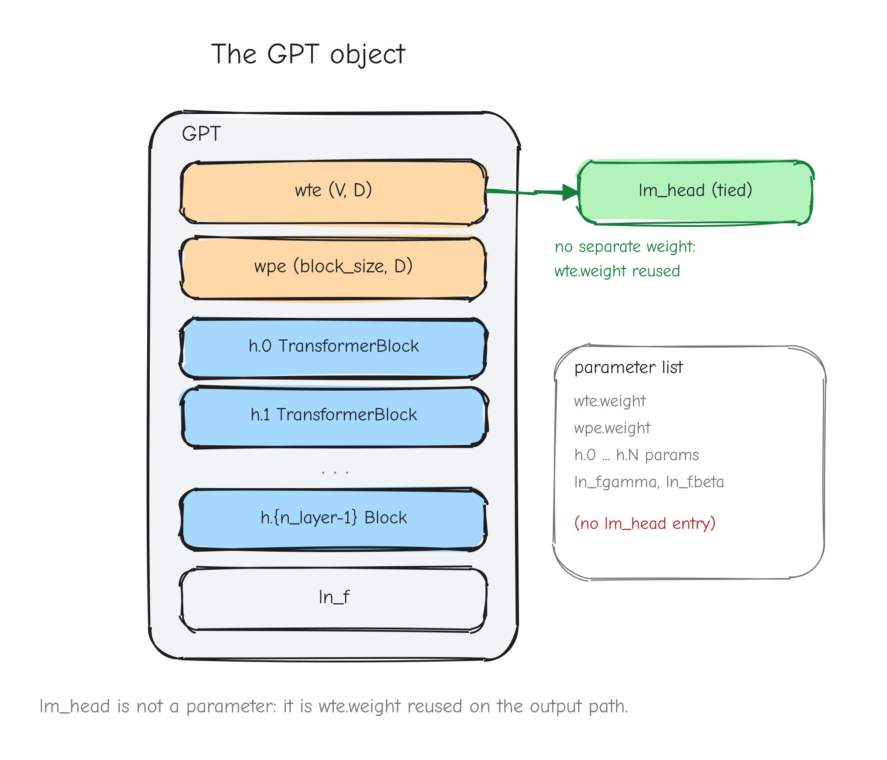
wte (V, D), wpe (block_size, D), a vertical stack of n_layer TransformerBlock boxes labeled h.0 through h.{n_layer-1}, and ln_f. Draw a dashed arrow from wte looping back up to a point labeled "lm_head (tied)" at the top of the output path, with the caption "no separate weight: wte.weight reused". The reader should see that the parameter list has no lm_head entry.The forward pass
__call__ takes idx, an integer array of shape (B, T) holding token ids, and an optional targets of the same shape. It returns (logits, loss), with loss being None when no targets are given.
def __call__(self, idx, targets=None):
"""idx: int array (B, T). Returns (logits, loss); loss is None if targets is None."""
B, Tn = idx.shape
assert Tn <= self.config.block_size, \
f"sequence length {Tn} exceeds block_size {self.config.block_size}"
tok_emb = self.wte(idx) # (B, T, n_embd)
pos_emb = self.wpe(np.arange(Tn)) # (T, n_embd), broadcasts over batch
x = tok_emb + pos_emb
for block in self.h:
x = block(x)
x = self.ln_f(x)
logits = T.lm_head(x, self.wte.weight) # weight tying: wte.weight reused
if targets is None:
return logits, None
loss = T.softmax_cross_entropy(logits, targets)
return logits, loss
Walk the shapes. idx is (B, T). self.wte(idx) looks up one row per token id, producing tok_emb of shape (B, T, D). self.wpe(np.arange(Tn)) looks up rows 0, 1, ..., T-1 of the positional table, producing pos_emb of shape (T, D). The sum tok_emb + pos_emb broadcasts (T, D) across the batch axis, so x is (B, T, D): every sequence gets the same positional offsets added to its token vectors.
The loop runs x through each TransformerBlock in turn. Each block preserves shape, so x stays (B, T, D) the whole way. self.ln_f(x) is a final LayerNorm over the last axis, still (B, T, D).
T.lm_head(x, self.wte.weight) is the output projection. It contracts the D axis of x against the D axis of the (V, D) embedding table, giving logits of shape (B, T, V): for every position in every sequence, a score for each of the V tokens.
If targets is None, the forward stops here and returns the logits. This is the path used at inference time when you only want next-token scores. If targets is given, T.softmax_cross_entropy(logits, targets) is the fused softmax plus cross-entropy from Part 4, Derivations Tier 3: the loss layer. It applies softmax over the V axis, picks out the log-probability of the correct token at each position, and averages over all N = B*T positions. The result is a single scalar Tensor, the loss L.
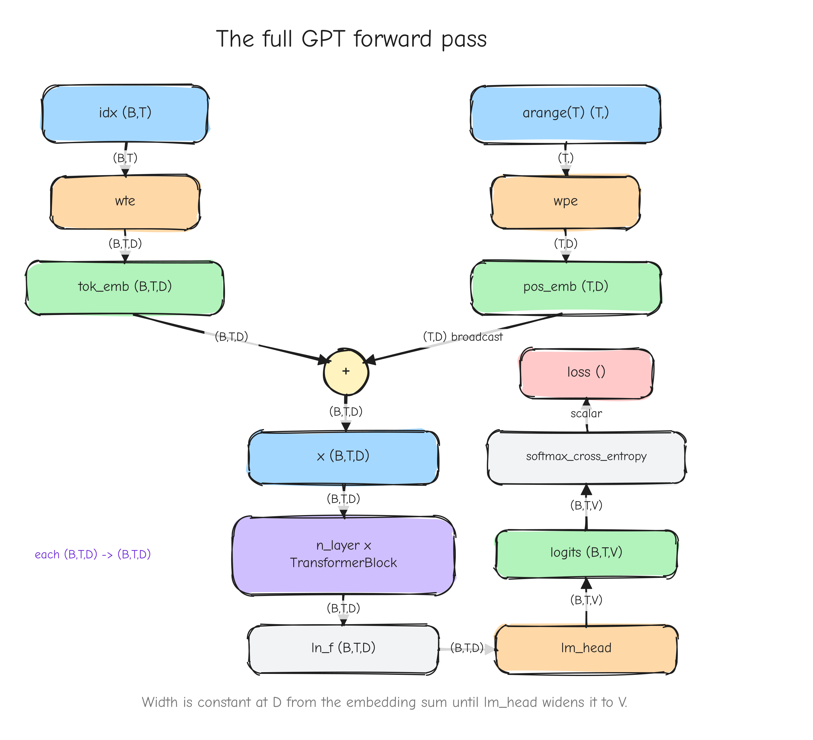
idx (B,T) -> wte -> tok_emb (B,T,D); arange(T) -> wpe -> pos_emb (T,D); the two merging with a + into x (B,T,D); then n_layer stacked TransformerBlock boxes each labeled (B,T,D) -> (B,T,D); then ln_f (B,T,D); then lm_head widening to logits (B,T,V); then softmax_cross_entropy collapsing to loss (). The takeaway: width is constant at D from the embedding sum until lm_head.Weight tying in practice
self.wte.weight is referenced twice in the forward pass. First inside self.wte(idx), the token embedding lookup. Second inside T.lm_head(x, self.wte.weight), the output projection. It is the same Tensor object both times, not a copy.
In Part 5 we derived what this means for the backward pass. The loss depends on wte.weight through two separate paths in the computational graph: the scatter-add of the embedding lookup, and the matmul of the output projection. The total gradient d(wte.weight) is the sum of the gradient from each path. That is not an approximation or a convention; it is the multivariable chain rule applied to a variable that feeds two subgraphs.
You do not write any code to make that sum happen. The Tensor engine from Part 8, Building the autograd engine, already does it. When backward() replays the graph, each op that used wte.weight calls _accum to add its local gradient contribution into wte.weight.grad. The embedding op's _accum runs, then the lm_head op's _accum runs, and because _accum adds rather than overwrites, wte.weight.grad ends up holding the sum. The "diamond" test from Part 8 (tests/step2_results.md: y = x + x gives dx = 2, the diamond gives dx = 5) is exactly this mechanism, exercised on a one-line graph. Weight tying is the same pattern at full scale.
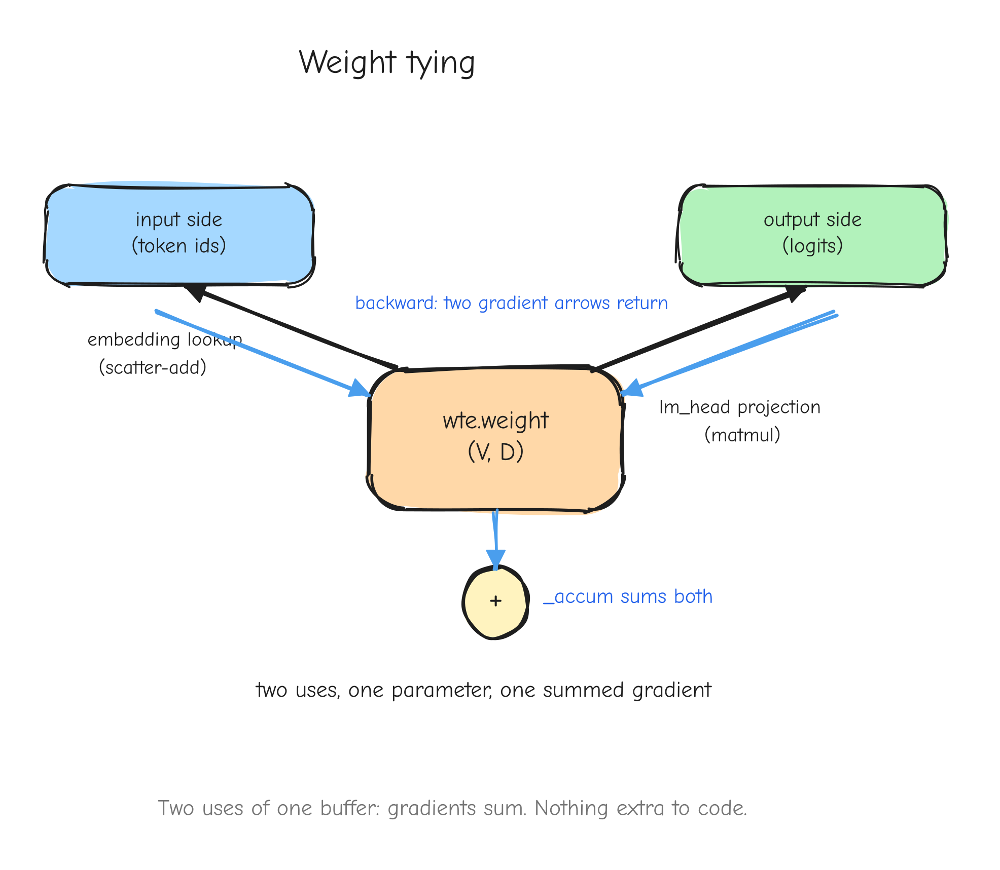
wte.weight (V,D) in the center. Two arrows leave it: one labeled "embedding lookup (scatter-add)" feeding into the input side of the network, one labeled "lm_head projection (matmul)" feeding the output side. On the backward pass, draw two gradient arrows flowing back into the same box, meeting at a + node labeled "_accum sums both". Caption: "two uses, one parameter, one summed gradient. nothing extra to code."parameters()
parameters() returns a flat dict mapping a prefixed string name to the Tensor it names. It walks every submodule and namespaces each one's parameters.
def parameters(self):
p = {}
p.update(_prefixed('wte', self.wte.parameters()))
p.update(_prefixed('wpe', self.wpe.parameters()))
for i, block in enumerate(self.h):
p.update(_prefixed(f'h.{i}', block.parameters()))
p.update(_prefixed('ln_f', self.ln_f.parameters()))
return p
_prefixed from layers.py glues a prefix onto each key: {'weight': ...} from the embedding becomes {'wte.weight': ...}. Because each TransformerBlock also prefixes its own submodules, the keys nest: h.0.ln_1.gamma, h.0.attn.c_attn.W, h.2.mlp.c_fc.W, and so on. The result is one flat dict with names like PyTorch's named_parameters().
Note there is no lm_head key. parameters() lists wte.weight once, and that single entry carries the tied parameter. The optimizer in Part 11 iterates this dict, so weight tying means wte.weight is updated exactly once per step using its summed gradient, which is correct.
Loading PyTorch checkpoints
To run parity, both models must hold the same weights. nanoGPT saves a PyTorch state_dict, a dict of {key: tensor}. load_state_dict translates that into this model's parameter layout.
def load_state_dict(self, sd):
"""Load a nanoGPT PyTorch state_dict ({key: array-like}) into this model.
Handles: the `transformer.` prefix, LayerNorm `weight`/`bias` ->
`gamma`/`beta`, Linear `weight` transpose ((out,in) -> our (in,out)),
and `lm_head.weight` (skipped - weight-tied - after checking it equals
`transformer.wte.weight`)."""
my_params = self.parameters()
loaded = set()
for key, arr in sd.items():
my_name, transpose = _torch_key_to_my(key)
if my_name is None:
continue # lm_head.weight / buffers
arr = np.asarray(arr, dtype=np.float64)
if transpose:
arr = arr.T
if my_name not in my_params:
raise KeyError(f"state_dict key {key!r} -> {my_name!r} is not a model parameter")
want = my_params[my_name].data.shape
if arr.shape != want:
raise ValueError(f"{my_name}: state_dict shape {arr.shape} != model shape {want}")
my_params[my_name].data = np.ascontiguousarray(arr)
loaded.add(my_name)
missing = set(my_params) - loaded
if missing:
raise KeyError(f"parameters not present in state_dict: {sorted(missing)}")
The key-by-key translation lives in _torch_key_to_my:
def _torch_key_to_my(key):
"""Map a nanoGPT state_dict / named_parameter key to (my_param_name, transpose)."""
if key.startswith('lm_head'):
return None, False # weight-tied to wte.weight
if key.endswith('.attn.bias') or key.endswith('.attn.masked_bias'):
return None, False # causal-mask buffer, not a parameter
k = key[len('transformer.'):] if key.startswith('transformer.') else key
parts = k.split('.')
last, module = parts[-1], parts[-2]
if module in ('wte', 'wpe'): # Embedding: weight stays weight
return k, False
if module in ('ln_1', 'ln_2', 'ln_f'): # LayerNorm: weight/bias -> gamma/beta
my_last = 'gamma' if last == 'weight' else 'beta'
return '.'.join(parts[:-1] + [my_last]), False
if module in ('c_attn', 'c_proj', 'c_fc'): # Linear: weight -> W (transposed), bias -> b
my_last = 'W' if last == 'weight' else 'b'
return '.'.join(parts[:-1] + [my_last]), (last == 'weight')
raise ValueError(f"unrecognized nanoGPT state_dict key: {key!r}")
Four transformations happen here. First, nanoGPT wraps its core in a module called transformer, so every key is prefixed transformer.; that prefix is stripped. Second, PyTorch's LayerNorm names its scale and shift weight and bias; this model names them gamma and beta (the notation from Part 5), so those get renamed. Third, PyTorch's Linear stores its weight as (out, in) because it computes x @ W.T; this model's Linear stores (in, out) and computes x @ W, so Linear weights are transposed on load. Fourth, lm_head.weight is skipped entirely: it is weight-tied to wte.weight, which is already loaded under its own key, so loading it again would be redundant. The *.attn.bias keys are skipped too; those are nanoGPT's precomputed causal-mask buffer, not a learned parameter.
After loading, two checks run. Every model parameter must have been filled (the missing set must be empty), and lm_head.weight, if present in the state_dict, must be bit-for-bit equal to transformer.wte.weight:
# explicit weight-tying check: lm_head.weight must equal transformer.wte.weight
if 'lm_head.weight' in sd:
lm = np.asarray(sd['lm_head.weight'], dtype=np.float64)
if not np.array_equal(lm, self.wte.weight.data):
raise ValueError("lm_head.weight != transformer.wte.weight - the state_dict "
"violates the weight-tying assumption")
return self
That second check is not paranoia. Skipping lm_head.weight is only safe if it genuinely equals wte.weight in the checkpoint. If a checkpoint were trained without tying, skipping the key would silently load wrong weights. The assertion makes the assumption fail loud instead of producing a quietly wrong model.
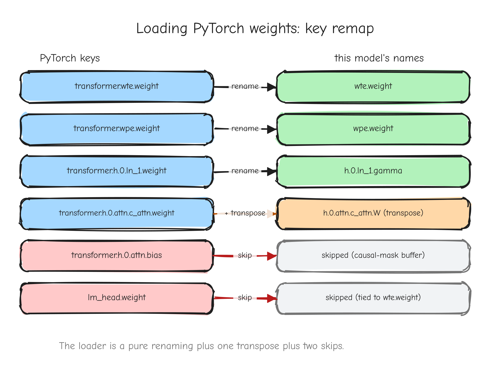
transformer.wte.weight, transformer.wpe.weight, transformer.h.0.ln_1.weight, transformer.h.0.attn.c_attn.weight, transformer.h.0.attn.bias, lm_head.weight. Right column, this model's names: wte.weight, wpe.weight, h.0.ln_1.gamma, h.0.attn.c_attn.W (transposed (out,in)->(in,out)), skipped (causal-mask buffer), skipped (tied to wte.weight). Arrows connect each pair. Caption: "the loader is a pure renaming plus one transpose plus two skips."The verification gate
Per-layer parity in Part 9 proved each layer is correct in isolation. That does not prove the model is correct. The forward pass could wire layers in the wrong order, add positional embeddings at the wrong axis, tie weights incorrectly, or normalize the loss the wrong way, and every per-layer test would still pass. The full-model gate closes that gap.
tests/test_model_parity.py loads nanogpt/fixtures/parity_batch.pt: a real trained checkpoint plus a fixed (12, 64) token batch sampled from validation data. It loads the same float64-widened weights into nanoGPT's PyTorch GPT and into this NumPy GPT, runs forward and backward on the same batch on both, and asserts:
LOGITS_ATOL = 1e-5
LOSS_ATOL = 1e-6
GRAD_ATOL = 1e-4
GRAD_RTOL = 1e-3
Logits must match to 1e-5 absolute, the loss to 1e-6 absolute, and every named parameter gradient to 1e-4 absolute and 1e-3 relative. Both sides run in float64, so the checkpoint's float32 weights widen exactly and there is no float-precision excuse: any mismatch is a real bug.
The discipline here is plain. If this passes, the implementation is provably correct end to end: same logits, same loss, same gradient for every parameter as PyTorch, given identical weights and inputs. If it fails, you are not lost. Per-layer parity from Part 9 already told you each layer is fine, so a failure here is an assembly bug, and the failing row points at it. A wrong grad wte.weight with every other row passing means weight tying. A loss off by a constant factor means cross-entropy normalization. Logits wrong only in later positions means the causal mask is off by one.
The real result: 29/29 checks pass. The config is n_layer=4, n_head=4, n_embd=128, block_size=64, vocab_size=50304. The forward loss is NumPy 7.420869 versus PyTorch 7.420869, equal to all printed digits. Every gradient row, including grad wte.weight, passes with relative error around 1e-15, which is float64 round-off, not algorithmic error (tests/model_parity.md).
The gate guards against a specific set of assembly failure modes, each of which produces a recognizable signature:
- Weight tying not implemented.
grad wte.weightis wrong (roughly half magnitude on used token rows); everything else passes. - Causal mask off by one. Logits and gradients are wrong, but only from a certain sequence position onward.
- LayerNorm epsilon mismatch. Small, uniform errors everywhere; nothing localizes, because every block has a LayerNorm.
- Wrong softmax axis. Logits are badly wrong everywhere; the loss is nonsense.
- GeLU variant mismatch. Errors around
1e-3, which passes1e-5? No: it fails the logits gate. nanoGPT'smodel.pyuses exact erf GeLU, and the checkpoint was trained with it; tanh-approx misses by about1e-3(tests/model_parity.md). - Cross-entropy normalization. The loss is off by a constant factor (
Nversus1, or summing instead of averaging); every gradient is off by the same factor.
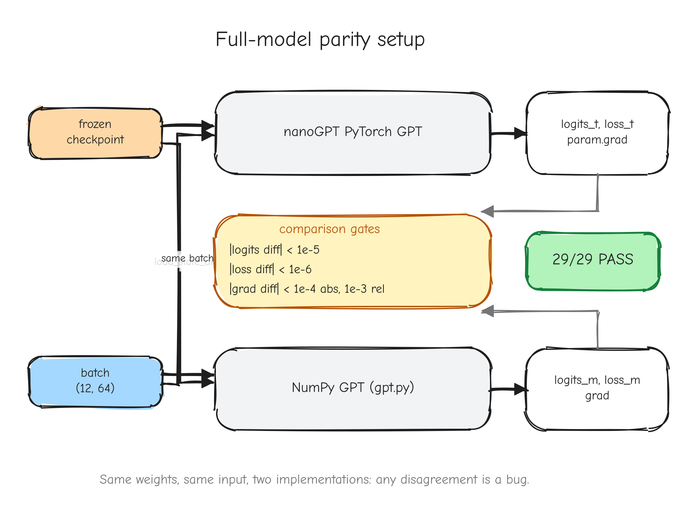
(12,64) batch, producing logits_t, loss_t and, after .backward(), param.grad for each. Bottom: "NumPy GPT (gpt.py)" fed the same checkpoint (through load_state_dict) and the same batch, producing logits_m, loss_m, grad. Between them, three comparison gates: |logits diff| < 1e-5, |loss diff| < 1e-6, |grad diff| < 1e-4 abs and 1e-3 rel. A green "29/29 PASS" stamp. Caption: "same weights, same input, two implementations: any disagreement is a bug."Your turn
Part 11: The optimizer, AdamW
The backward pass gives you a gradient for every parameter. The optimizer decides what to do
with it. This part builds AdamW, the optimizer nanoGPT uses, and verifies it against
PyTorch step for step. There is no new calculus here. The gradients are already derived
(Parts 3 to 6) and checked (Part 7). What is left is the update rule: given a parameter and
its gradient, compute the next parameter.
From SGD to Adam, the motivation
The simplest update is stochastic gradient descent:
where is the gradient and is the learning rate. This moves every parameter a fixed multiple of its gradient. It works, but it has two problems that show up hard when training a transformer.
First, gradients are noisy. Each step uses one minibatch, so jumps around from step to step even when the true direction of descent is steady. SGD follows every jump.
Second, one learning rate for all parameters is a poor fit. Some parameters sit in directions where the loss changes fast, others in directions where it barely moves. A learning rate small enough to be stable in the steep directions is far too small in the flat ones.
Adam fixes both. It keeps a running average of the gradient to smooth out the noise, and a running average of the squared gradient to size each parameter's step individually. A parameter whose gradient has been large and consistent gets a step scaled down by that history. A parameter whose gradient has been small gets a relatively larger step. The step becomes adaptive per coordinate, which is where the name comes from (Adaptive moment estimation).
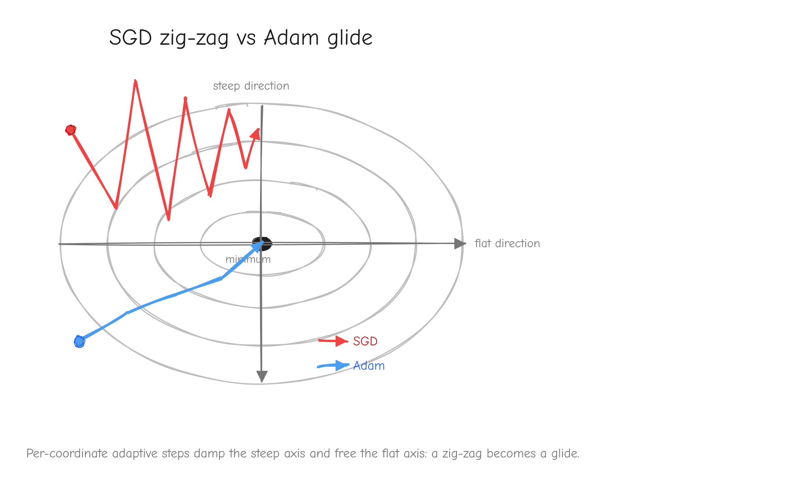
The Adam update rule
This is item 24 in derivation.md. It is not a gradient derivation, it is the set of update
equations applied to each parameter tensor after backward has produced its gradient
. Every operation below is element-wise. The state buffers and have the
same shape as and start at zero. Let be the step counter,
1-indexed.
Adam
Forward. Hyperparameters: decay rates , learning rate , and for numerical safety.
Here is the element-wise square. The division and the square root in the last line are element-wise.
The two moments. is an exponential moving average of the gradient. Each step it keeps a fraction of the old average and mixes in a fraction of the new gradient. With it has a memory of roughly the last ten gradients. is the same kind of average but of , so it tracks the typical squared magnitude of each coordinate. The final step divides the smoothed direction by , which is roughly the typical magnitude, so the step size is normalized per coordinate.
Why bias correction is needed. and start at zero. At step 1, , which with is only . The average is pulled hard toward its zero starting value, so it underestimates the true gradient size, badly at first. The fix is exact, not a heuristic. If the gradient were a constant at every step, then after steps exactly (a geometric series). Dividing by recovers . So undoes the cold-start bias, and the same for with . As grows, and the correction factor goes to 1: it matters only for the first handful of steps.
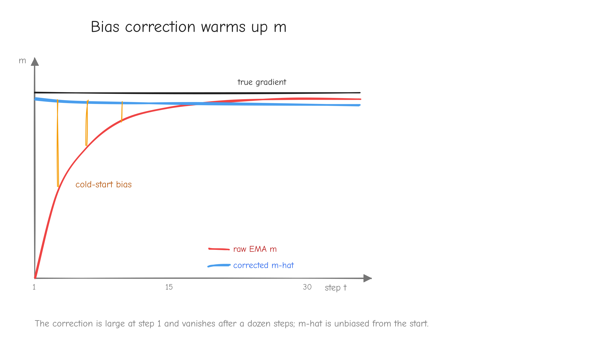
AdamW versus Adam plus L2
Weight decay shrinks parameters toward zero each step, a regularizer that keeps weights from growing without bound. There are two ways to add it, and they are not the same.
The old way, "Adam plus L2", folds an L2 penalty into the loss. That adds a term to the gradient before Adam sees it: . The problem is that this decayed gradient then flows through the moment buffers and and gets divided by the adaptive denominator . The amount of decay a parameter actually receives ends up coupled to its gradient history. Parameters with large gradients get less effective decay, which is not what you asked for.
AdamW (Loshchilov and Hutter) decouples the decay. The moment buffers are updated with the plain, un-decayed gradient , exactly as in Adam. The decay is applied directly to the parameter as a separate term in the update:
Equivalently, group the terms: . The parameter is first scaled by , then the Adam step is subtracted. Setting recovers plain Adam. Because the term never enters or , it is never scaled by the adaptive denominator. That is the entire point: can be tuned independently of .
Building the AdamW class
Start with the constructor. It stores the hyperparameters and allocates the per-parameter
state. params is a dict mapping parameter names to Tensor objects, the same thing
model.parameters() returns.
import numpy as np
class AdamW:
def __init__(self, params, lr=1e-3, betas=(0.9, 0.99), eps=1e-8, weight_decay=0.1,
no_decay=()):
self.params = dict(params)
self.lr = lr
self.beta1, self.beta2 = betas
self.eps = eps
self.weight_decay = weight_decay
self.no_decay = set(no_decay)
self.t = 0
# per-parameter optimizer state (1st/2nd moment EMAs), keyed by name,
# initialised to zero - the bias correction below accounts for this.
self.m = {name: np.zeros_like(p.data) for name, p in self.params.items()}
self.v = {name: np.zeros_like(p.data) for name, p in self.params.items()}
self.t is the step counter, starting at zero so the first step() brings it to one.
self.m and self.v are dicts of arrays, one per parameter, each the same shape as that
parameter's data and filled with zeros. The zeros are deliberate, the bias correction is what
accounts for them.
Now step(), the one method that does the work. Build it in the order of the equations.
First, increment the counter and compute the two bias-correction denominators once, since
they are the same for every parameter:
# new in this section
def step(self):
self.t += 1
bc1 = 1.0 - self.beta1 ** self.t # bias-correction denominators
bc2 = 1.0 - self.beta2 ** self.t
Then loop over the parameters. Skip any with no gradient, and pick this parameter's decay
coefficient: zero if its name is in the no-decay set, otherwise the shared weight_decay.
# new in this section
for name, p in self.params.items():
if p.grad is None:
continue
g = p.grad
wd = 0.0 if name in self.no_decay else self.weight_decay
Apply the decoupled weight decay directly to the parameter. This is the AdamW step. With
wd = 0 it multiplies by 1.0 and is a no-op, which is exactly how AdamW reduces to Adam:
# new in this section
# 1. decoupled weight decay - applied to the parameter, NOT the
# gradient.
p.data *= (1.0 - self.lr * wd)
Update the two moment EMAs from the un-decayed gradient g:
# new in this section
# 2. moment EMAs
self.m[name] = self.beta1 * self.m[name] + (1.0 - self.beta1) * g
self.v[name] = self.beta2 * self.v[name] + (1.0 - self.beta2) * (g * g)
Bias-correct and take the Adam step:
# new in this section
# 3. bias-corrected Adam step
m_hat = self.m[name] / bc1
v_hat = self.v[name] / bc2
p.data -= self.lr * m_hat / (np.sqrt(v_hat) + self.eps)
One more method, zero_grad(), to clear gradients before the next backward pass so they do
not accumulate across steps:
# new in this section
def zero_grad(self):
for p in self.params.values():
p.grad = None
Here is the full class, the exact contents of optimizer.py:
import numpy as np
class AdamW:
def __init__(self, params, lr=1e-3, betas=(0.9, 0.99), eps=1e-8, weight_decay=0.1,
no_decay=()):
"""params: dict {name: Tensor} - e.g. model.parameters().
no_decay: names of parameters that use weight_decay = 0. nanoGPT excludes
every 1D tensor (biases, LayerNorm) from weight decay; the
caller passes those names here. Empty by default (uniform
weight decay over all parameters)."""
self.params = dict(params)
self.lr = lr
self.beta1, self.beta2 = betas
self.eps = eps
self.weight_decay = weight_decay
self.no_decay = set(no_decay)
self.t = 0
# per-parameter optimizer state (1st/2nd moment EMAs), keyed by name,
# initialised to zero - the bias correction below accounts for this.
self.m = {name: np.zeros_like(p.data) for name, p in self.params.items()}
self.v = {name: np.zeros_like(p.data) for name, p in self.params.items()}
def step(self):
"""One AdamW update, in place, using each parameter's current `.grad`."""
self.t += 1
bc1 = 1.0 - self.beta1 ** self.t # bias-correction denominators
bc2 = 1.0 - self.beta2 ** self.t
for name, p in self.params.items():
if p.grad is None:
continue
g = p.grad
wd = 0.0 if name in self.no_decay else self.weight_decay
# 1. decoupled weight decay - applied to the parameter, NOT the
# gradient. This is the AdamW step; with weight_decay=0 it is a
# no-op (x * 1.0 == x) and AdamW reduces to plain Adam.
p.data *= (1.0 - self.lr * wd)
# 2. moment EMAs
self.m[name] = self.beta1 * self.m[name] + (1.0 - self.beta1) * g
self.v[name] = self.beta2 * self.v[name] + (1.0 - self.beta2) * (g * g)
# 3. bias-corrected Adam step
m_hat = self.m[name] / bc1
v_hat = self.v[name] / bc2
p.data -= self.lr * m_hat / (np.sqrt(v_hat) + self.eps)
def zero_grad(self):
"""Clear every parameter's gradient (call before the next backward)."""
for p in self.params.values():
p.grad = None
The no_decay group
nanoGPT does not decay every parameter. It applies weight decay only to tensors of 2 or more dimensions, the matmul and embedding weights. 1D tensors (biases and the LayerNorm and parameters) are placed in a no-decay group with .
The reasoning: weight decay is meaningful for weights that scale activations, where shrinking toward zero is a real regularizer. A bias is an additive offset and a LayerNorm is a learned scale that the layer needs free to do its job. Pulling those toward zero fights the layer instead of regularizing it. The split by dimension is the standard heuristic for this.
AdamW does not build parameter groups itself. It takes one scalar weight_decay plus an
optional no_decay set of parameter names that use . The caller reproduces
nanoGPT's grouping with a one-line set comprehension:
no_decay = {n for n, p in params.items() if p.data.ndim < 2}
Every parameter whose data has fewer than 2 dimensions goes in the set. Inside step(), the
line wd = 0.0 if name in self.no_decay else self.weight_decay looks each name up and zeroes
the decay for those. Note the tied token embedding is 2D, so it is decayed.
A worked scalar example
One scalar parameter, AdamW, step . This is the numeric example from derivation.md
item 24. Take , gradient , , ,
, , . State starts at .
Three sanity checks on this result:
- At step 1 the bias correction makes , ignoring . So the Adam part of the step is almost exactly . This is Adam's hallmark: the first step moves by about in the gradient's direction, magnitude-normalized.
- The decoupled decay subtracts an additional , independent of and .
- Plain Adam with the same numbers and would give . The gap between that and is exactly the decoupled weight-decay contribution.
The verification gate
The same discipline as every other component: verify before moving on. The check is in
tests/test_optimizer_parity.py, with results recorded in tests/optimizer_parity.md.
The method: initialize a parameter tensor identically in NumPy and in PyTorch. For 10 steps,
hand both optimizers the same gradient and call step() on each. After every step the
parameter values must match within 1e-06. Everything runs in float64. Three configurations
are tested: the nanoGPT baseline (lr=1e-3, betas=(0.9, 0.99), eps=1e-8, weight_decay=0.1),
pure Adam (weight_decay=0.0, which isolates the bias correction), and an alternate set
(lr=3e-4, betas=(0.9, 0.999), weight_decay=0.05).
The result: 30 of 30 step checks pass, with a worst mismatch of 1.73e-18 over 10 steps. That worst-case number is at the floor of float64 round-off, not optimizer error. The pure Adam config passing confirms the bias correction is exact; the weight-decay configs passing confirms the decoupled decay is applied correctly. Folding into the gradient, the common bug, would fail the weight-decay configs on the first step.
Your turn
Part 12: Training
The model produces correct gradients (Part 10, Assembling GPT-2) and the optimizer applies them correctly (Part 11, The optimizer: AdamW). Both halves are verified against PyTorch in isolation. What remains is the loop that puts them together: feed a batch, compute the loss, backpropagate, clip, step, repeat. The loop is short. The work of this part is the four pieces it needs (data loading, learning rate schedule, gradient clipping, the loop body) and three verification gates that prove the assembled thing learns and tracks the PyTorch baseline.
Data loading
Training data is a flat stream of token ids. nanoGPT's data prep produces two files, train.bin and val.bin, each a uint16 array of token ids written straight to disk (the subset here is about 5.6M training tokens and 286K validation tokens). uint16 holds values up to 65535, which covers the GPT-2 vocabulary of 50257.
You do not load these files into memory. They are memory-mapped: the array object behaves like a NumPy array, but the operating system pages in only the slices you actually index.
import os
import numpy as np
import torch
_DATA_DIR = os.path.join(os.path.dirname(os.path.abspath(__file__)),
"nanogpt", "data", "openwebtext")
def load_split(split):
"""Memmap the uint16 token .bin for `split` in {'train', 'val'}."""
path = os.path.join(_DATA_DIR, f"{split}.bin")
return np.memmap(path, dtype=np.uint16, mode="r")
A batch is B windows of T consecutive tokens. For each window, the input x is the window itself and the target y is the same window shifted forward by one token: at every position the model predicts the next token. To build a batch you pick B random start positions in the stream and gather the windows.
def get_batch(data, batch_size, block_size):
ix = torch.randint(len(data) - block_size, (batch_size,))
x = np.stack([np.asarray(data[i:i + block_size], dtype=np.int64) for i in ix])
y = np.stack([np.asarray(data[i + 1:i + 1 + block_size], dtype=np.int64) for i in ix])
return x, y
The start positions come from torch.randint, not np.random. That is deliberate. nanoGPT's get_batch draws its start positions with exactly this call, torch.randint(len(data) - block_size, (batch_size,)), consuming exactly one draw from the global torch RNG per batch. By making the same call in the same order, this get_batch consumes the torch RNG identically. Seed torch the same way nanoGPT does, call get_batch in the same sequence, and both implementations see the same start positions, therefore the same batches, token for token.
get_batch returns plain int64 NumPy arrays of shape (batch_size, block_size). That is the form GPT.__call__ consumes directly. The PyTorch side wraps the same arrays with torch.from_numpy.
The learning rate schedule
A fixed learning rate is rarely the best choice. nanoGPT uses three phases: a short linear warmup from near zero up to the target rate, a cosine decay from the target down to a floor, then flat at the floor. Warmup avoids large destabilizing steps while the optimizer's moment estimates are still cold. Cosine decay spends most of training at a moderate rate and eases down at the end. The flat floor means a run that goes past lr_decay_iters keeps a small nonzero rate instead of stalling at zero.
import math
def get_lr(it, learning_rate, min_lr, warmup_iters, lr_decay_iters):
if it < warmup_iters: # 1) linear warmup
return learning_rate * (it + 1) / (warmup_iters + 1)
if it > lr_decay_iters: # 2) past decay -> floor
return min_lr
decay_ratio = (it - warmup_iters) / (lr_decay_iters - warmup_iters) # 3) cosine
coeff = 0.5 * (1.0 + math.cos(math.pi * decay_ratio)) # 1 -> 0
return min_lr + coeff * (learning_rate - min_lr)
Read the three branches. During warmup, it runs 0, 1, ..., warmup_iters - 1 and the rate is learning_rate * (it + 1) / (warmup_iters + 1), a straight line that has not quite reached learning_rate at the last warmup step. Past lr_decay_iters, the rate is exactly min_lr. In between, decay_ratio runs from 0 to 1, so cos(pi * decay_ratio) runs from 1 to -1, so coeff = 0.5 * (1 + cos(...)) runs from 1 down to 0, and the returned rate runs from learning_rate down to min_lr along a cosine curve.
learning_rate over warmup_iters steps, then a smooth cosine curve descending from learning_rate to min_lr between warmup_iters and lr_decay_iters, then a flat horizontal line at min_lr. Label the three regions "linear warmup", "cosine decay", "flat floor". For the OWT run the numbers are learning_rate = 1e-3, min_lr = 1e-4, warmup_iters = 10, lr_decay_iters = 100.get_lr returns a number. It does not touch the optimizer. The training loop calls it each step and writes the result into optimizer.lr.
Gradient clipping
Some batches produce a much larger gradient than the rest. Left alone, one such batch can take a step large enough to undo progress. Gradient clipping bounds the size of the update: it measures the global L2 norm of all gradients stacked together, and if that norm exceeds a threshold, scales every gradient down by the same factor so the norm equals the threshold.
def clip_grad_norm(params, max_norm):
grads = [p.grad for p in params.values() if p.grad is not None]
total_norm = float(np.sqrt(sum(np.sum(g * g) for g in grads)))
clip_coef = max_norm / (total_norm + 1e-6) # PyTorch's +1e-6 in the denom
if clip_coef < 1.0: # only scale down, never up
for g in grads:
g *= clip_coef
return total_norm
total_norm is the global norm: sum of squares across every gradient array, then square root. One number for the whole model, not per parameter. clip_coef is the factor that would bring that norm down to max_norm. If the norm is already at or below max_norm, clip_coef is at least 1.0 and the if clip_coef < 1.0 guard skips the scaling: clipping only ever shrinks, it never grows a small gradient. When it does fire, every gradient is scaled by the same clip_coef, in place, which is why the direction of the combined update is preserved and only its length changes.
clip_grad_norm returns total_norm, the norm measured before clipping, so the loop can log how large the raw gradient was on each step.
The training loop
The four pieces assemble into one function. Each step: set this step's learning rate, fetch the batch, zero the gradients from last step, forward to a loss, backward to fill gradients, clip, step the optimizer, log.
def train(model, optimizer, get_batch, n_steps, grad_clip=None, lr_schedule=None,
log_every=0):
params = model.parameters() # same Tensor objects every step
losses = []
for step in range(n_steps):
if lr_schedule is not None:
optimizer.lr = lr_schedule(step) # set this step's learning rate
x, y = get_batch(step)
optimizer.zero_grad() # clear the previous step's grads
_, loss = model(x, y) # fresh graph over the same params
loss.backward()
if grad_clip is not None:
clip_grad_norm(params, grad_clip)
optimizer.step() # in-place update; m/v/t carry over
losses.append(float(loss.data))
if log_every and (step % log_every == 0 or step == n_steps - 1):
print(f" step {step:4d} loss {losses[-1]:.4f}")
return losses
The order inside the loop is fixed and each line depends on the one before. zero_grad must come before backward, or this step's gradients add onto last step's leftovers. clip_grad_norm must come after backward and before step, because it edits the gradients that step is about to consume. optimizer.step() reads those gradients and the optimizer's own moment state to produce the update.
What is not in the loop matters as much as what is. model and optimizer are arguments. They are built once by the caller, before train is ever called, and reused on every step.
Verification gate: single-step parity
The first gate is the smallest possible: one full training step. From a shared checkpoint (nanogpt/fixtures/parity_batch.pt), run forward -> loss -> backward -> optimizer.step() once on the NumPy side and once on the PyTorch side, then compare every resulting weight.
This composes two things already verified in isolation: full-model forward and backward (Part 10) and the AdamW update (Part 11). If those are each correct but the step diverges, the bug is in the composition: the decay versus no-decay parameter grouping, or a stale gradient, or stale optimizer state. The model config is the OWT config: n_layer=4, n_head=4, n_embd=128, block_size=64, vocab_size=50304. Both sides start from a fresh optimizer (m = v = 0, t = 1) since the fixture carries no optimizer state. Gradient clipping is skipped on both sides so the comparison is exact regardless (the global grad norm for this batch is 0.8266, below the 1.0 threshold, so clipping would be a no-op anyway).
The result, from tests/train_step_parity.md: the forward loss is 7.420869 on both sides, and after one step 27 of 27 parameters match within the 1e-5 gate. The actual differences are far smaller than the gate: the worst is 5.75e-14 on h.0.mlp.c_proj.W, and the LayerNorm gamma parameters match to 0.00e+00. The table also reports how far the step moved each parameter (about 1e-3 max), so the gate is not passed trivially by nothing changing. This includes the weight-tied wte.weight and both sides of the decay grouping. One step is correct.
Verification gate: overfit a tiny batch
One correct step does not prove the loop is correct. The loop has its own failure modes, the two persistence invariants from the Gotcha above, that a single step cannot exercise because they only show up across steps. The cheap test for them is to overfit.
Take a tiny model (vocab_size=128, block_size=32, n_layer=2, n_head=2, n_embd=64, about 200K parameters) and 16 fixed random token sequences, arranged as 4 batches of 4 and cycled deterministically. Train on only those 16 sequences for 500 steps. A model that size has far more capacity than it needs to memorize 16 sequences (512 next-token predictions total), so a correct loop must drive the loss to near zero. Weight decay is set to 0 for this test: decay regularizes away from memorizing, and this test is purely "does the loop learn".
From tests/overfit_results.md, the loss curve:
| Step | Loss |
|---|---|
| 0 | 4.8435 |
| 50 | 1.9165 |
| 100 | 0.1633 |
| 200 | 0.0104 |
| 300 | 0.0041 |
| 400 | 0.0020 |
| 499 | 0.0010 |
Step 0 is 4.8435, which is ln(128) = 4.8520 to within rounding: the untrained model is uniform over the 128-token vocabulary, exactly as expected. By step 499 the loss is 0.0010, and the loss over all 16 sequences evaluated at once is also 0.0010. The gate is "below 0.5 within 500 steps", and the run clears it by more than two orders of magnitude.
Verification gate: OpenWebText training parity
The final gate is a real training run on real data, compared step for step against a PyTorch baseline. The baseline is nanogpt/out-owt-baseline/baseline_losses.json, a saved 100-step nanoGPT run on the OpenWebText subset (config train_owt_baseline.py, seed 1337, float32). Its loss curve is the reference:
The harness reproduces that run exactly. It seeds torch to 1337, builds nanoGPT's GPT the same way train.py does (which consumes the init RNG), then replays train.py's get_batch call order faithfully, including the estimate_loss calls at iteration 0 and iteration 100 that also consume the RNG. Because get_batch consumes the torch RNG identically (the point made in the data loading section above), this replay produces the baseline's exact batches. The proof that the replay is faithful: the PyTorch re-run matches the saved baseline_losses.json to a max |dloss| of 4.93e-5, below the JSON's 4-decimal rounding. The re-run is the baseline.
Then the same initial weights are copied into the NumPy GPT, and both run over the same batches, same init, same hyperparameters, same cosine LR schedule (lr 1e-3 -> 1e-4, warmup 10), weight_decay=0.1, grad_clip=1.0. PyTorch runs in float32 to match the baseline; NumPy runs in float64. The gate: |numpy_loss - torch_loss| < 0.05 at each of the first 100 steps.
From tests/owt_parity.md: step 0 loss is 10.8217 on both sides (which is ln(50304) = 10.826 to within rounding, the untrained uniform model again). Over the first 100 steps the max absolute loss difference is 5.79e-3, mean 9.06e-5, against a gate of 0.05. The NumPy curve tracks the PyTorch baseline far inside the gate, on real data, with the real LR schedule, weight decay and gradient clipping all active (the NumPy run clips on 30 of 120 steps).
tests/owt_parity_loss.png: the saved PyTorch baseline, the PyTorch re-run, and the NumPy GPT-2 curve plotted on the same axes, all three visually on top of each other. A second panel below shows the global gradient norm for both implementations and the learning rate, the lr tracing the warmup ramp then the cosine descent. Takeaway: three curves, one line to the eye.The curves are not bit-identical, and they should not be. PyTorch runs in float32, NumPy in float64. From the very first step there is a tiny difference in the loss (6.39e-7 at step 0), and AdamW's moment estimates carry that difference forward and compound it: each step's m and v are slightly different, so each update is slightly different, so the next loss is slightly different again. That is why the gap grows over the run, from 1e-6 early to a few 1e-3 later. It is accumulated floating-point difference, not an implementation error, and it stays two orders of magnitude inside the 0.05 gate the whole way.
Your turn
Part 13: Evaluation and benchmarks
Training ran. The loss went down. That tells you the optimizer is working, but it does not tell you whether the model is any good, and it does not put a number on "good" that you can compare against anyone else's. For that you need a benchmark: a held-out dataset and a metric that the whole field reports.
This part defines the metric, walks through the harness that computes it, and reads the results honestly.
Perplexity
The standard language-model metric is perplexity. The definition is short:
where is the per-token cross-entropy loss on token and is the number of tokens scored. It is the exponential of the mean per-token loss. That is the entire definition. In code it is one line:
ppl = np.exp(nll_sum / n_tok)
So what does the number mean? Cross-entropy loss on a token is , where is the probability the model assigned to the token that actually appeared. Average that over the test set, then exponentiate, and you undo the log. Perplexity is the reciprocal of the geometric-mean probability the model gave to the true tokens. If a model assigns probability to every true token, its perplexity is .
That last fact gives you a free baseline. The toy model in this project has vocab_size 50304, so a model that learned nothing scores perplexity around 50304. The real GPT-2 124M scores around 27 on the same data. Those two numbers bracket the range, and any model you build lands somewhere between them.
Two properties make perplexity the metric the field settled on. It is comparable across models as long as they share a tokenizer, because it depends only on probabilities assigned to the same token sequence. And it is interpretable: the branching-factor reading means a drop from perplexity 40 to 20 is a real halving of uncertainty, not an arbitrary score change.
The benchmark harness
tests/benchmark.py evaluates two models on two datasets. Both models run forward only, through the NumPy autograd Tensor under tensor.no_grad(), in float64. No PyTorch is in the forward path. The two datasets test different things.
WikiText-103 is pure language modeling: a long stream of Wikipedia text, and the task is to predict each token from the ones before it. The harness scores it with a strided sliding window. The model has a fixed context length (block_size), but the test stream is far longer than that, so you cannot feed it all at once. You slide a window of block_size tokens along the stream with a stride of block_size // 2:
while True:
end = min(begin + block_size, len(ids) - 1)
x = ids[None, begin:end]
y = ids[None, begin + 1:end + 1]
with tensor.no_grad():
logits, _ = model(x)
ce = per_token_ce(logits.data, y)[0]
trg_len = end - prev_end # tokens this window contributes
nll_sum += float(ce[-trg_len:].sum())
n_tok += trg_len
prev_end = end
if end == len(ids) - 1:
break
begin += stride
The stride is the key detail. If you used a stride equal to block_size, each window would be disjoint, and the first token of every window would be predicted with zero left context. That penalizes the model for a setup artifact, not for its actual quality. With a stride of half the block size, each window overlaps the previous one by half. Only the second half of each window (ce[-trg_len:]) is scored, so every token from index 1 on is counted exactly once, and every counted token has up to block_size // 2 tokens of left context. This is the Hugging Face perplexity protocol.
LAMBADA tests something WikiText-103 does not: long-range coherence. Each example is a passage where the final word is determined by the broad context, not by the last few tokens. A model that only does local statistics will fail it. The harness scores just the final word's token(s), given the rest of the passage as context:
ctx, word = text.rsplit(" ", 1)
ctx_ids = enc.encode_ordinary(ctx)
tgt_ids = enc.encode_ordinary(" " + word)
ids = ctx_ids + tgt_ids
...
ce = per_token_ce(logits.data, y)[0]
nll_sum += float(ce[-n_tgt:].sum())
n_tok += n_tgt
pred = logits.data[0].argmax(axis=-1)
correct += int(np.array_equal(pred[-n_tgt:], y[0, -n_tgt:]))
LAMBADA reports two numbers. Perplexity, computed the same way as before but only over the final-word tokens. And accuracy: the fraction of passages where the model's argmax prediction matches every target token exactly. Accuracy is a harder bar than perplexity, because it asks for the single right answer, not just high probability on it.
The shared core of both is per_token_ce, which computes cross-entropy directly from logits without going through the training loss layer:
def per_token_ce(logits, targets):
m = logits.max(axis=-1, keepdims=True)
logsumexp = m[..., 0] + np.log(np.exp(logits - m).sum(axis=-1))
B, T, _ = logits.shape
tgt = logits[np.arange(B)[:, None], np.arange(T)[None, :], targets]
return logsumexp - tgt
This is the same numerically-stable cross-entropy you derived in Part 4 (the loss layer): subtract the row max before exponentiating so nothing overflows, then the per-token loss is logsumexp - logit_target. It returns the per-token loss as a (B, T) array instead of a single averaged scalar, because the harness needs to pick out specific tokens to score.
One practical constraint: the 124M model takes about 10.5 seconds for a single 1024-token forward pass in NumPy on a CPU. The harness uses subsets (the first 17,999 scored tokens of WikiText-103, the first 150 LAMBADA examples) and logs the exact token counts. Subsets keep the run to minutes instead of hours, and the numbers are within a small margin of the full-set values.
Results
Here are the numbers, all from tests/benchmark.md.
| Model | Params | Context | WikiText-103 ppl | LAMBADA ppl | LAMBADA acc |
|---|---|---|---|---|---|
| Random baseline (uniform over vocab) | - | - | ~50,304 | ~50,304 | ~0% |
| our trained toy (block 64, 100 steps) | 7.23M | 64 | 5331.2 | 102693.9 | 0.00% |
| our NumPy impl + GPT-2 124M weights | 124.4M | 1024 | 26.57 | 21.67 | 38.00% |
| PyTorch GPT-2 124M (same protocol) | 124M | 1024 | 26.57 | 21.67 | 38.00% |
Read the toy model's row honestly. WikiText-103 perplexity 5331 is bad. It is about 9.4 times better than the random baseline of 50304, so the model did learn token statistics in its 100 training steps, but it is roughly 200 times worse than real GPT-2 124M. On LAMBADA it scores 0.00% accuracy with a perplexity above the uniform baseline: it is confidently wrong. That is expected and not a bug. The toy has a 64-token context, and a LAMBADA passage does not fit in 64 tokens, so the model literally cannot see the information that determines the final word. A 100-step model with a 64-token context, evaluated on out-of-distribution Wikipedia text, is not a real model. It was never meant to be one. The toy exists to prove the training loop runs and converges, which Part 12 (Training) verified, not to score well here.
The result that matters is the third row. The same NumPy code, the same gpt.GPT class, loaded with the real OpenAI GPT-2 124M weights, gives WikiText-103 perplexity 26.57 and LAMBADA perplexity 21.67 at 38.00% accuracy. To check that, tests/benchmark_torch_ref.py runs PyTorch's own GPT-2 124M through the identical protocol, the identical datasets, the identical subsets. PyTorch gives 26.57, 21.67, and 38.00%. The NumPy implementation matches PyTorch to every reported decimal.
That is the real result of the project, and it is worth being precise about what it is and is not. It is not "we trained a good model": the toy is weak by design. It is "the from-scratch NumPy implementation, given real GPT-2 weights, reproduces real GPT-2's benchmark numbers exactly." Every operation you derived by hand in Parts 3 to 6, every layer you built in Part 9, the full model assembled in Part 10, all of it composes into something that runs real GPT-2 124M and lands on PyTorch's numbers to the digit. The machine-precision parity verified at the op, layer, model, and training-step level (Part 7 onward) was not an academic exercise. It is what makes this row possible.
Your turn
Part 14: Roadblocks and lessons
The course so far reads like a clean path: derive, implement, verify, train, benchmark. The real project was not clean. Three roadblocks are worth walking through, because each one teaches something the clean path hides. Two were correctness bugs caught by a verification gate. One was the world changing underneath the code. The notes below are reconstructed from nanogpt/roadblocks.md, the contemporaneous log kept while the friction was happening.
The batched-matmul backward bug
The bug. The matmul backward pass used a 2-D shortcut for the weight gradient: dW = x.T @ dY. That is correct when x is a 2-D matrix. It is wrong when x is a 3-D (B, T, K) tensor, because in NumPy x.T reverses all axes, not just the last two. For a 3-D input, x.T has shape (K, T, B), and the matmul that follows produces the wrong thing entirely. The correct gradient flattens the leading axes: treat (B, T, K) as (B*T, K), do the 2-D matmul, and you have it.
How it was caught. Not by the gradient checks of Part 7. Not by the per-layer parity of Part 9. By the full-model parity of Part 10.
Why the earlier gates missed it is the instructive part. The gradient checks did test matmul, but only with 2-D inputs. A 2-D test exercises the 2-D shortcut, and the shortcut is correct in 2-D. The bug lives only in the 3-D path, and no gradient check ever sent a 3-D tensor through matmul. The per-layer parity tests did run 3-D tensors through Linear, which is where you would expect a (B, T, K) input to hit matmul. But every per-layer parity test used bias=True. With a bias, Linear takes a separate linear code path, and that path already flattened the leading axes correctly. The buggy matmul path was only reached by a Linear with bias=False.
The full-model parity fixture is bias=False. Every Linear in it takes the no-bias matmul path. The first time a 3-D tensor went through the buggy code was the full-model run, and it failed there.
The fix. Make matmul flatten the leading axes the same way linear does: dW = x.reshape(-1, K).T @ dY.reshape(-1, N). Then close the coverage gap that hid the bug: add a batched-matmul gradient check that sends 3-D inputs through, and add a bias=False Linear per-layer parity test. The fix lives in tests/ops.py, in matmul.
The lesson. A gate only catches what it exercises. The gradient checks "tested matmul" and the layer parity "tested Linear", and both statements are true, and the bug still got through, because neither one exercised the specific path it lived in. Coverage gaps are not visible from the pass count. 92 out of 92 gradient checks passing tells you 92 things work. It does not tell you the 93rd thing, the one you never wrote, works.
The GeLU variant mismatch
The bug. GeLU has two forms in common use. The tanh approximation, , which the original GPT-2 and older nanoGPT used. And the exact form, with , which is what nn.GELU() computes. The derivation in this project first assumed the tanh approximation. But the reference model.py uses nn.GELU(), the exact erf form. The two forms differ by about .
How it was caught. By layer parity. The layer-parity gate requires the forward pass to match PyTorch to within absolute. A discrepancy of is two orders of magnitude over that threshold. The MLP layer, which contains the GeLU, failed parity immediately and unambiguously.
The fix. Switch the implementation to the exact erf form, to stay faithful to model.py and the trained checkpoint it produced. That meant re-deriving the backward pass: for the exact form, , where is the standard-normal PDF. NumPy ships no erf, so tests/ops.py:gelu uses scipy.special.erf. Re-running the gradient checks and the autograd parity after the switch: all green.
The lesson. Faithfulness to the reference matters all the way down to the activation function. A difference sounds small, and for many purposes it would be. But the goal of this project was machine-precision parity, and against that goal a difference is enormous. The tight gate is what made the mismatch impossible to ignore. A loose gate, say "forward matches to within ", would have passed the wrong GeLU, and the error would have compounded silently through every layer above it.
The deprecated dataset config
This roadblock is not a bug in the code. The code was correct. The world changed.
The problem. Upstream nanoGPT's data/openwebtext/prepare.py calls load_dataset("openwebtext"). On the current Hugging Face Hub that config is deprecated and gated. It resolves to a loading script that the current datasets library refuses to run, and trust_remote_code=True, which used to be the escape hatch, is no longer honored. The documented data preparation step, copied faithfully from the reference, does not run.
The fix. Switch to the Skylion007/openwebtext mirror, a community-hosted parquet dataset with no loading script. Then verify the substitution did not change anything that matters. The data path has to be identical to upstream in every respect that affects the model:
- Tokenizer:
tiktoken.get_encoding("gpt2"), identical. - Per-document handling:
enc.encode_ordinary(text)then appendenc.eot_token(50256), identical to upstream'sprocess(). - Output format:
uint16memmap.binfiles, identical to upstream.
Same tokenizer, same end-of-text handling, same on-disk format. The mirror is a different download, not a different dataset, and the verification confirms it. The substitution is captured in data/openwebtext/prepare_subset.py, with the dataset name as an environment variable so swapping back is one variable away if the original config ever returns.
The lesson. Reproducing old work means fighting bit rot in the dependencies. The reference code was correct when it was written. The dataset config it depends on was deprecated later. None of that is visible from reading nanoGPT's source: the code looks fine, and it does not run. Budget for this. When you follow a reference that is more than a year or two old, some documented step will have rotted, and the fix will be archaeology, not programming.
The verification-gate philosophy in retrospect
Three roadblocks, and the pattern across them is the case for the whole derive-implement-verify-train discipline.
Consider the GeLU mismatch without gates. The wrong GeLU is in step 2 of the build. With no layer parity, it does not surface in step 2. It does not surface in step 3, or 5. It surfaces at step 8, training, as "the loss curve does not match the reference" or "training does not converge the way it should." At that point the symptom is global and the cause is six steps back, buried under everything built on top of it. Debugging is now a search over the whole project: every layer, every op, every line of the training loop is a suspect.
With the layer-parity gate, the same wrong GeLU surfaces immediately, in step 2, as "the MLP layer fails forward parity by ." The symptom is local. The cause is in the layer the gate just named. Debugging is a local fix, not a search.
That is the entire value proposition of the gates. They do not prevent bugs. You will still write the wrong GeLU and the wrong batched matmul. What the gates do is convert a global, late, ambiguous symptom into a local, early, specific one. They turn debugging from a search over the whole project into a fix in one named place. Every gate in this course (gradient checks, Tensor-class parity, layer parity, model parity, optimizer parity, the overfit test, the training-step parity) is a tripwire placed so that a bug introduced at that step cannot travel past it.
And the batched-matmul bug shows the limit. A gate is only as good as its coverage. The matmul gradient check existed, and it passed, and the bug went through it anyway, because the check never exercised the 3-D path the bug lived in. A gate you have written is not the same as a gate that covers the code. When a bug slips a gate, the lesson is rarely "add another gate." It is usually "the gate I have does not cover what I thought it covered." Fix the coverage, not just the bug.
Your turn
Part 15: Epilogue
You started this course able to read code but not to derive the math under it. You finish it having built two things in pure NumPy. A verified autograd engine: a Tensor class that records a computational graph and runs backpropagation through it, with every operation's gradient derived by hand and checked numerically. And a GPT-2 built on top of that engine, which trains, and which, loaded with real OpenAI GPT-2 124M weights, reproduces PyTorch's WikiText-103 and LAMBADA benchmark numbers to every reported decimal (Part 13, Evaluation and benchmarks).
No framework did the gradients. No autodiff library was in the loop. Every backward pass is math you derived in Parts 3 to 6 and code you wrote in Parts 8 to 11. The parity against PyTorch holds to machine precision because the math is correct, not because a library hid the math from you.
The more durable thing you take away is the mental model: derive, implement, verify, train, with a gate at every step. Derive the gradient by hand from the definition. Implement the vectorized form. Verify it against a numerical gradient check, then against PyTorch, before building the next thing on top of it. Train only once the pieces underneath are proven. That discipline is not specific to GPT-2 or to NumPy. It is how you build any system where a small error compounds silently, and it transfers to anything you build next.
Be honest about the scope of what you have. This is a CPU-scale teaching implementation. It is float64, single-threaded, and a single 1024-token forward pass through the 124M model takes about 10.5 seconds (Part 13). It is not a production trainer and was never trying to be. Its job was to make every step legible and every step checkable, and it did that. A production system trades that legibility for speed in ways that would obscure the very things this course exists to show.
Where to go from here, if you want to keep building:
- Larger models. The architecture scales by changing
n_layer,n_head, andn_embd. Nothing in the math changes. - GPU. Swap the NumPy backend for CuPy or a similar array library. The
Tensorclass is the seam where that swap happens, and most of your derived gradients carry over unchanged. - A KV-cache. Generation recomputes attention over the whole prefix at every step. Caching the keys and values makes it fast, and deriving why the cache is correct is a good exercise in the same discipline.
- Sampling and text generation. You have evaluated the model's probabilities. Turning them into generated text is temperature, top-k, and top-p sampling on top of the forward pass you already have.
- More data and longer training. The toy model is weak by design (Part 13). The training loop that produced it is correct and verified; point it at more tokens and more steps and it will produce a stronger model.
You have the engine, the model, and the discipline. The rest is iteration.